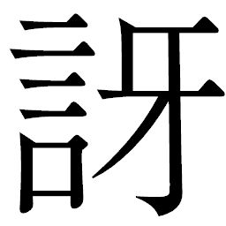
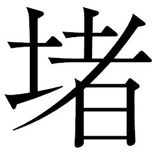
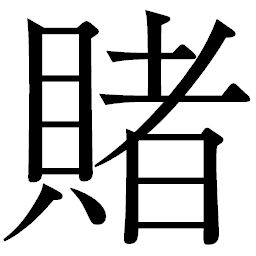

🏠
日
月
縦書き／横書き
 跳
は、下の岩場で待ちかまえていたシチロージが槍を突き出すと、
跳
は、下の岩場で待ちかまえていたシチロージが槍を突き出すと、 笑うように左右に分離した。菅笠型の頭部装甲の下に、大きな一つ目のレンズがはめ込まれた目玉が不気味に光っていた。戦場でも前衛や地上戦でよく遭遇した相手だ。シチロージは惑うことなく一体ずつ始末しようと標的を一方に絞った。
跳
たちの言葉は、暗に野伏せりの手先であることを一行に知らしめていた。
跳
は燃え盛る残骸と化し、キュウゾウもシチロージもそれぞれの得
物
を仕舞った。腕を振るたびに、キュウゾウの左腕から血が流れ、足元の岩場に赤黒い雫
となって滴
り落ちた。
笑うように左右に分離した。菅笠型の頭部装甲の下に、大きな一つ目のレンズがはめ込まれた目玉が不気味に光っていた。戦場でも前衛や地上戦でよく遭遇した相手だ。シチロージは惑うことなく一体ずつ始末しようと標的を一方に絞った。
跳
たちの言葉は、暗に野伏せりの手先であることを一行に知らしめていた。
跳
は燃え盛る残骸と化し、キュウゾウもシチロージもそれぞれの得
物
を仕舞った。腕を振るたびに、キュウゾウの左腕から血が流れ、足元の岩場に赤黒い雫
となって滴
り落ちた。
| 〔小説〕SAMURAI7 第四巻 | |
| 冨岡淳広 | |
この本は縦書きでレイアウトされています。
また、ご覧になる機種により、表示の差が認められることがあります。
制作協力......株式会社ゴンゾ 笠間寿高
企画協力......深谷精一
第十三章 集う！
カンベエ様は意地悪だ――。
キララは数歩先を行くキュウゾウの背中を見ながら、心の中で呟
やいていた。
険しい岩場は道なき道ながら、キュウゾウは苦もなく岩を伝い歩き続け、足場を確かめながら歩くキララとの距離を広げていく。
この道行きがはじまってからというもの、キララはキュウゾウの顔をまともに見ていない。ずっと背中ばかりで、硬質な鈍
色
を放つ背中の二刀流が、懸命についていくキララには物言わぬ拒絶の象徴に見えた。
同行者はもう一人、シチロージ。彼はキララを気遣って彼女の歩調に合わせながら、「カンベエ様は相変わらず狡
い」と、苦笑していた。
カンベエがこの場にいたらまず間違いなくキュウゾウが挑んでくるだろう。そうさせないため、そして、キュウゾウに絶対的な不信感を抱くキララに、彼もまたサムライであることを知らしめるため、自分をこの組においたのだ。いわば自分はカンベエの影。役割は心得ていた。
「キュウゾウ殿。娘さんが一緒だ。足並みを えてはどうだい」
えてはどうだい」
えてはどうだい」 シチロージに声をかけられて、大きな岩にひらりと上がったキュウゾウの動きが一瞬止まった。耳を澄ますように顎
を上向け、周囲を警戒するようにゆっくりと回頭する。シチロージに声をかけられたから止まったのではなく、索
敵
の意味で止まったようだ。その背に、キララの固い声がぶつけられた。
「お気遣いは無用です。足手まといにはなりません」
明らかに拒絶の声
音
。キュウゾウが他人と距離をおいているのではない。キララが必要以上にキュウゾウを敵視しているのだ。とはいえ、こんな二人の面倒を見るのは古女房としてもやりがいがあろうというもの。キララの振り子が示す水脈の導くまま、三人は岩場を進み続けるのだった。
野伏せりにカンナ村と自分たちの存在を知られたカンベエたちは、道中想定される待ち伏せ等
の目をくらますため、三組編成に分かれてカンナ村を目指すことになった。道案内はキララ、コマチ、リキチがそれぞれを担当し、護衛としてサムライが二人ずつつく。キュウゾウを敵視してやまぬキララをあえて組ませたカンベエは、シチロージを調整役としてつけた。キララは言葉には出さないまでも瞳で抗議をみせたが、カンベエの有無を言わさぬ目に意図を察し、結局は頷
くだけだった。
カツシロウはキララを案じるものの、カンベエと組み、コマチにつく。リキチには、出会ったはじめから何かと彼を励まそうと気遣ってくれるゴロベエと、ヘイハチがついた。残るはキクチヨだが、これはもう問答無用でコマチがつかんで放さない。
目指すは、カンナ村の外れにある「つばさ岩」と呼ばれる巨大な奇岩。あまりにも長かった戦争による爆撃で異様な形状に削られ、それが鳥の羽根の形に見えることから、村ではいつしかそう呼ばれるようになったものだという。
カンベエたちはコマチが村から出てきたときに使った緑深い山道を逆に戻り、ゴロベエたちは交易用の整備された街道筋を歩き、シチロージたちは砂漠と岩場ばかりの不毛の地を歩くことになった。
街道筋を歩くゴロベエ一行は、一休みした茶屋でつかまえた担
ぎ呉服屋から安物の派手な着物を買い込み、リキチ、ヘイハチと共に羽織っての道中である。虹
雅
峡
へ向かう者、外の町へ商いのために旅する者、早亀で移動する者、決して多くはないが、街道はそれなりに賑わいをみせていた。
ゴロベエはいかつい顔を隠すように耳当てのついた冠
り物とわざわざ金糸銀糸の目立つ羽織を、ヘイハチは真っ赤に染め抜いたちゃんちゃんこ、リキチに至っては大柄な花模様の羽織を着崩し、市松模様の袴
という出で立ちで、さながら幇
間
である。それぞれの衣装を満足げに見て、ゴロベエは頷いていた。
「木を隠すなら森の中、人を隠すなら街の中。隠
密
道中なればこそ、あえて日の当たる道を行くものだ」
「このナリ、少々目立ちませんかねえ？」
ヘイハチは真っ赤に染め抜いた羽織の内側に、急ごしらえのポケットを縫いつけていた。そこには刀を忍ばせてあり、ストラップのてるてる坊主が彼の表情さながらに笑顔をみせていた。
「俺、落ち着かねえだよ......」
リキチははじめて着る極彩色の着物におどおどして、嫌な汗をかいていた。
「照れることはない。似合っているぞ。よいか、今から我らは陽気な旅一座、某
は命を的
の一発芸人イノチウリ・マスエモンだ。どうだ」
ゴロベエはこの変装を心底楽しんでいるようで、豪快に笑った。
「では、私は薪割り芸人ホホ・エミノスケで参りましょう！」
ヘイハチが薪割りの仕
草
をしてみせると、ゴロベエはさらに興が乗り、リキチの肩を抱き寄せた。
「その調子だ、ヘイハチ殿。どうだリキチ、おぬしも芸名を考えてみぬか」
「俺、米作るしかできねえだよ。とても芸なんか出来ねえ。無理だ」
「いかん！ せっかくこのような格
好
をしたのだ。楽しまぬか。ならば某が芸名をつけてやろう。米しか作れぬというならこれしかあるまい。鍬
使いの達人マグソ・コエダユウ。ウン、これだな。どうだ、リキチ」
「どうって言われても......、わかんねえだで」
「なーになに、すぐに慣れるものよ。さ、行くぞ！ 我ら陽気な旅一座でござい！」
ゴロベエは節をつけた名調子で歩き出した。
リキチは肩を落とし、とぼとぼとついていくしかない。彼の横に並んだヘイハチがカラリと励ますように言った。
「辛
いときなればこそ、あえて笑う。ゴロベエ殿が大戦で生き残ることが出来たのは、それゆえではないでしょうか」
コマチは得意気に道案内をしていた。澄んだ水が流れる小川に沿っての道筋である。なにしろサムライを三人引き連れており、行き先をしっかりわかっているのは自分だけ、という自負がある。
「いいですか、おっちゃま。ぜーんぶオラに任せるです。寄り道しちゃだめです。オラたちが一番につばさ岩に着くです」
「おうっ、競争ってことだな！ オレ様に任せろ！ うおおおーっ！」
「おっちゃまーっ、そっちの道じゃないですよぅ！」
コマチの声に、思いきり遠くまで走っていったキクチヨは「おっとすまねえ」とばかり、すぐさま回れ右してきた。キクチヨとカツシロウには厳しいカンベエも、コマチと同行している今だけは穏やかに歩みを進めている。カンベエに従
者
のごとくついてくるカツシロウは、まるで遠足のようにはしゃぐキクチヨとコマチを見ながらため息をついた。
「カツの字よぉ、そのため息はあやしいよなあ」
すぐさまキクチヨがからんできた。
「あやしいとは、どういうことだ」
「ンなこたぁ、てめぇが一番わかってるんじゃねえのか。カンベエもまったくいやらしいよなあ、ねえちゃんとキュウゾウを組ませるんだからよ」
「確かにキララ殿のことを案じてはいる。野伏せりに見つからず無事に着いてくれればよいと思っている。それが、なにか」
「ンじゃ、なんで耳まで赤くなってんだよ」
キクチヨのからかいに、カツシロウの耳はポッと赤くなり、頰も紅潮した。
「赤くなど......！」
「うわあ、ほんとに真っ赤です」
コマチに指摘されては、カツシロウもそれ以上何も言えなかった。
「ヘー、ほー、ほっほっほお。おめぇ、わかりやすい奴だなあ」
「あー、やっぱりカツの字、姉
様
のこと好きですか」
「誤解だ、コマチ殿」
真っ赤な顔のまま言ってもまるで説得力がなく、違うと言えば言うほどキクチヨたちにからかいのタネを与えているようなものだった。
「ねえちゃんはカタイからなあ。キュウゾウみてぇなむっつり野郎がふっと笑うようなことでもあってみろ。一発でコロッといっちまうかもしれねえぞ。キュウゾウ様は本当はとてもお優しい方です！ なーんて言ってよぉ」
調子に乗ったキクチヨがとうとうキララの言い回しをダミ声で再現するものだから、コマチは腹を抱えて笑い転げた。
「うまいうまい。おっちゃま、姉様にそっくりです」
「あー、そういやもう一人あぶなっかしい奴がいたな。桃太郎って言ったか？ カンベエの古女房。あれは女に手ぇ早いぞ」
「モモタロさんにはユキノさんて女将
さんがいるですよ」
「まあなあ、あの兄さん、おぼこには興味ねえか」
「おぼこってなんですか」
「キクチヨ殿、いい加減にしてくれ！」
たまりかねてカツシロウは真っ赤なまま言い捨てた。
「私は修行の身なのだ。女
性
に懸
想
する暇などあろうはずがない！」
「へへぇ、ムキになるとますます怪しいってもんだぜ」
「おサムライ様って誰かを好きになっちゃいけないですか」
「だから、そういうことではなく！」
「カツシロウ。お前の負けだ」
どんどん墓穴を掘っていきそうなカツシロウを見かねて、カンベエが言った。
「守ると誓ったのであろう。それでよいではないか」
「はい......」
「儂
からも一つ、聞こう。おぬし、何
故
にサムライを志
す」
カンベエは正眼にカツシロウを見据えた。
カツシロウは言葉を選んだ。カンベエに会い、弟子入りを志願したときには彼の中には「常
在
戦
場
」という正解があった。泰平のアキンドの世なれど、いま自分が身を置いているこの状況はまさに、彼が〝憧れていた〟戦場の真っ只中だ。だが......。己自身に、カツシロウは問いかける。
サムライとは、なんだ――。
日が暮れる。足場の悪い場所を、敵を欺
くためとはいえ、日中から歩きづめだったキララたちは、シチロージの提案で夜明けを待って休むことにした。
日が沈むと気温はかなり下がってくる。体を機械化した野伏せりは特に夜目がきくため、一行は岩陰に
たれた大きな穴に潜り込み、一夜の宿とした。小さな火を熾
して暖をとり、持参した乾物をひとときの食事とした。しかしこの晩
の場にも、キュウゾウはいない。彼は敵を警戒して穴に入ることなく、外の平たい岩の上であぐらをかいていた。
「まさか、ずっとあのまま朝までいるつもりなのでしょうか」
あぐらをかいて半
時
、身じろぎもしないキュウゾウを見てキララは驚いて言った。ここに至るまでキュウゾウはほとんど飲まず わずなのだ。
わずなのだ。
わずなのだ。「おや、少しは心配になってきたかね」
食事を終えて竹筒に入れた水を飲むと、シチロージが言った。
「そういうわけでは......」
「どうにもキュウゾウ殿がお気に召さぬようだな」
「あの方の心が読めないのです。朋
輩
を斬ってまでもカンベエ様との斬り合いをしたいのはなぜなのでしょう。恨みがあるわけでもないのに、どうして」
「サムライってのは口は置いといて体張ってナンボ。気づいていやしたか？ あのお方が先に立って歩いていたのは、今こうしてあそこに座ってるのと同じ理由でさ」
「では、見張りのために......？」
「お嬢さんにはとんとわからんでげしょうが、戦
場
では二人一組が基本。まして誰かを守っての作戦行動ならば、一人が見張り、一人が守り、と役割分担するものなんでげすよ。朋輩を斬ったわけはアタシにゃあわかりませんし、聞く気もありやせん。あのお方はカンベエ様が惚れたお方。アタシにゃあ、それで十分。とはいえこの道行き、うまくいくもいかぬもお嬢さん次第。わかってるでげしょ」
シチロージはわざと太鼓持ちの口調で言った。
見張り役、と聞いてキララは驚きを隠せなかった。知らなかったといえばそれまでだが、ただ拒絶と感じ取っていただけの自分はあまりにも浅はかだ。
キララはふと、ここにこそカンベエがいてくれたら、と思った。村を救ってくれるのはこの人だと決めたときから、カンベエに大きな安心を求めている自分を感じた。キュウゾウについても、敵といえどカンベエが認めた男だから受け入れようとした。だが、どうしても納得できない。アヤマロに反旗を翻
してまで、彼はカンベエに何を求めているのか、その答えが〝斬り合い〟なのか。なぜ、斬り合わねばならないのか。聞いてみたい気がした。そう思うと、いてもたってもいられず、キララはふらふらとキュウゾウの真後ろに歩き出していた。
「来るな」
キュウゾウの低く鋭い声が、キララを制した。
キララには冷厳なまでの拒絶としか聞こえなかった。我慢ならずに抗議の声をあげようと気負ったものの、その口はシチロージの手に塞
がれ、言葉を飲み込まざるをえなかった。シチロージはキララに「伏せて」と小さく言うや、自分も一緒に岩場に身を伏せ、息を潜めた。
闇の中で、キュウゾウはあぐらをかいた姿勢のまま、じっと前方を見つめていた。
キララは何事かと彼の背を見つめていたが、急にキュウゾウに振り向かれ、息がとまった。彼の瞳は凄まじい殺気をはらみ、二本の刀を抜き放つや自分の方にまっすぐに駆けてくる。同時にシチロージもキララから離れ、槍
を抜き放った。
「逃げろ！」
シチロージは刃を振り出すと叫んだ。同時に、彼らのいた岩場の上方から、一体の球形の物体が宙に跳び出した。朱塗りの装甲が月光に映える。
跳
と呼ばれる機械化したサムライだ。
跳
と呼ばれる機械化したサムライだ。 二体が合体して移動し、索敵と撹
乱
を目的としたサムライ。作戦展開時、敵の目前で分離、撹乱して攻撃を仕掛けてくる。俊敏な動きに優れたこの機械のサムライは、戦場では「ウサギ」と呼ばれていた。
跳
は、下の岩場で待ちかまえていたシチロージが槍を突き出すと、
笑うように左右に分離した。菅笠型の頭部装甲の下に、大きな一つ目のレンズがはめ込まれた目玉が不気味に光っていた。戦場でも前衛や地上戦でよく遭遇した相手だ。シチロージは惑うことなく一体ずつ始末しようと標的を一方に絞った。「キュウゾウ殿は右を......！」
指示は最後まで言い切れなかった。左右に散った二体の目玉が、青白い閃光を放ったのだ。強烈な燭
光
が辺りを照らし出し、膨
れ上がった光が一筋の矢となって左右からキララを狙った。
跳
は一番弱い者から狙ってきたのだ。
跳
は一番弱い者から狙ってきたのだ。「気合砲!?
」
予想さえしていなかった。シチロージは姿勢をひねって光
撃
を反射しようと槍を伸ばした。大戦時、雷電のような巨大化サムライには装備されていたが、
跳
のような小兵にはなかったものだ。戦後になって強化されたというのか。
跳
のような小兵にはなかったものだ。戦後になって強化されたというのか。 キララは光に目を奪われ、一つ目と機械的な動きの
跳
に畏
怖
を感じ、すくんで動けなかった。光撃の熱量を感じた瞬間、自分の体の真正面でさらに激しい閃光が飛び散った。岩を溶かすような放熱を感じながら、キララは目を開けることが出来なかった。誰かが、光撃と自分の間に割って入ったのを感じたのだ。
跳
に畏
怖
を感じ、すくんで動けなかった。光撃の熱量を感じた瞬間、自分の体の真正面でさらに激しい閃光が飛び散った。岩を溶かすような放熱を感じながら、キララは目を開けることが出来なかった。誰かが、光撃と自分の間に割って入ったのを感じたのだ。 キュウゾウだ。キララの前に立ちはだかると気合砲の光撃を二刀流で弾き返したのだ。弾いた光撃が付近の岩場や木々に命中し、爆発炎上すると、辺りは闇から一転、紅
蓮
の炎の揺らめきに照り返しを受けた赤い視界に変わった。凄まじい放熱と圧力に耐え、刀を振り払うように左右になぎはらったキュウゾウの懐
が開いた。
「やはりな。百姓娘とサムライの取り合わせ。件
のカンナ村の一行か！」
「仲間はどこだ！」
跳
たちの言葉は、暗に野伏せりの手先であることを一行に知らしめていた。 彼らはすかさず抜刀し、キュウゾウの懐に飛び込んできた。一体は首を反転させ、真後ろから襲いかかろうとしたシチロージめがけて気合砲を放った。シチロージが槍で弾き飛ばすと、間髪入れず撃ち込まれた第二撃が足元を直撃、爆煙が視界を阻んだ。
跳
は四方への同時攻撃が可能なので、シチロージを威嚇しつつキュウゾウをも刃
で誘いながら、再び気合砲を撃ってきた。
跳
は四方への同時攻撃が可能なので、シチロージを威嚇しつつキュウゾウをも刃
で誘いながら、再び気合砲を撃ってきた。 普段のキュウゾウなら二体からの刀と気合砲、都合六方向からの攻撃という変則的な波状攻撃であろうと全て見切り、跳ね返していただろう。だがいまは、キララを後ろにしている。彼女はカンベエの雇い主であり、無事に村に送り届けなければならない相手だ。守らねばならない。それゆえ敵の刃と気合砲から彼女を守るために、キュウゾウは迷いなく左腕で刃を受けとめた。
戦場からずっとまとっている赤い上着は、鎖
帷
子
を繊維で作ったような特殊素材であり、斬
撃
の衝撃を軽減する目地の細かさがあった。
跳
の持つ大振りな刃はその厚い生地を裂いた。斬る、というより打撃の衝撃に近い。刃が肉に食い込む激痛がキュウゾウを貫く。それでも、表情一つ変えず
跳
の一つ目を見据えた。
跳
の持つ大振りな刃はその厚い生地を裂いた。斬る、というより打撃の衝撃に近い。刃が肉に食い込む激痛がキュウゾウを貫く。それでも、表情一つ変えず
跳
の一つ目を見据えた。 その目に、
跳
は怯
んだ。
跳
は怯
んだ。 目を開けたキララの前には、やはりキュウゾウの背中があった。
跳
の剣を受け流しながら、キュウゾウは低く言った。
跳
の剣を受け流しながら、キュウゾウは低く言った。「行け」
迷っている暇はなかった。キララはもつれる足でキュウゾウの背中という楯
から離れ、岩場の穴へと駆け込んでいった。
キュウゾウは穴の入り口を塞
ぐようにして
跳
たちと斬り結んだ。シチロージが後方から支援にまわり一体を貫く。体に火花を散らしながら、
跳
は首を一八〇度反転させ、シチロージに気合砲を放とうとする。その首を、キュウゾウは刎ねた。残る一体もキュウゾウが真っ二つに袈
裟
斬
りし、爆発させた。
跳
たちと斬り結んだ。シチロージが後方から支援にまわり一体を貫く。体に火花を散らしながら、
跳
は首を一八〇度反転させ、シチロージに気合砲を放とうとする。その首を、キュウゾウは刎ねた。残る一体もキュウゾウが真っ二つに袈
裟
斬
りし、爆発させた。
跳
は燃え盛る残骸と化し、キュウゾウもシチロージもそれぞれの得
物
を仕舞った。腕を振るたびに、キュウゾウの左腕から血が流れ、足元の岩場に赤黒い雫
となって滴
り落ちた。「済んだよ、お嬢さん。また追手が来るかもしれない。移動しよう」
シチロージは穴の中のキララに声をかけた。
キララの胸はまだ激しく鼓動していた。
跳
の姿と攻撃があまりにも衝撃的で、震えていた。
跳
の姿と攻撃があまりにも衝撃的で、震えていた。「怪
我
はないか」
「はい。大丈夫です。キュウゾウ様が......、守ってくださいましたから......」
また、自分を守って傷ついた人がいる。鋭く「来るな」と言いきってキララを押しとどめようとしたのも、距離を放して見張り役に徹していたのも、自分を守らんとしたためなのだ。カンベエの言葉がキララの胸の奥で蘇
ってもいた。
守るのは、攻めるより難しいものだ――。
守勢なればこそ、攻撃する側以上に気を配らなければいけない要素が多くなる。キララの楯となったキュウゾウがまさにそれだった。カンベエと存分にせめぎあったあの資材置き場のときと違い、彼はキララに傷をつけないためにどうすればよいか、そのための戦い方をしていたのだ。守らなければならない者のために自ら傷つくことを選択したキュウゾウに、キララは深い感謝に加えて、彼への自分の頑
なな拒絶に対する浅はかさを恥じ入っていた。
「ありがとうございました、キュウゾウ様」
頭を下げるキララに、キュウゾウは黙礼しただけだった。一切言い訳することはなく、彼女に背を向けて歩き出そうとした。また一滴、地面に血が落ちた。
「待って下さい！」
キララは駆け寄り、背負った袋からさらしと薬を出してキュウゾウの腕の傷の手当てをした。斬られた袖の裂け目も血で染まり、触れたキララの手を赤く染める。周囲の炎が、手元を照らしてくれる。キュウゾウは黙って、キララのするに任せていた。
「痛みますか......。ごめんなさい、私が出ていかなければ、こんなことには」
さらしを縛
り終えたキララは、ようやく顔を上げてキュウゾウの顔を見た。今なら、ずっと心にわだかまっていたことを聞ける。
「キュウゾウ様はなぜ、カンベエ様を討ちたいと思われたのでしょうか」
「――サムライ、故
に」
キュウゾウは即答した。
炎の映り込んだ瞳で、キュウゾウはキララを見た。その顔からはなんの感情も読み取れず、キララを不安にさせる。腕の振り子は彼女の戸惑いを語るように、淡い光を波打たせていた。それでも、振り子を通じてキララはキュウゾウからも戦
場
の匂いを感じ取っている。カンベエやゴロベエ、ヘイハチ、シチロージと同じ、大戦経験者だけが放つ、気。
振り子が導く本能を、彼女は理屈の上で大戦を生き残った者、いまなお自分の価値を戦場に求める者、アキンドのこの時代に枯渇感を抱く者と理解していた。
サムライ、故に。
キュウゾウの放った言葉はやはり、キララの理解のうちにあるものではなかった。
だがその短い言葉に、キュウゾウの剣士としての矜
持
が全て凝縮されているものとして、キララは受けとめようと思い直した。シチロージがキュウゾウに問うことはない、と言ってくれたことも、彼女にそう結論づけさせるのを後押ししていた。
固かった彼女の表情が和
らぐのを見て、シチロージはほっと息をつく。斥
候
の襲撃は、この息の詰まるような道行きに一筋の光明を与えたようだ。
再び先に立って歩き出したキュウゾウの背を見て、キララは心の中で誰に向かうわけでもなく問いかける。
サムライとは、なんだ――。
森の中で休息をとったカンベエ一行も、焚き火を囲んで暖
をとっていた。夜
陰
に耳をそばだてつつも、聞こえてくるのは夜
啼
きの鳥や虫の声ばかり。いつ斥候に襲われるかという緊迫感は絶えずつきまとっているため、カンベエは必然的に眠ろうとはしなかった。
カツシロウも別の意味で眠れない。昼間、カンベエに問われたことの答えがまだ出ていない。
「おめぇ、いい加減そのフン詰まりみてぇな顔やめろよ。いいじゃねえかなんでも。サムライがなんだろうと、おめぇがサムライって言ってンだからそれでいいだろ。それともナニか？ ねえちゃんに戦場の匂いがしないからダメだって言われたこと、まだぐだぐだ考えてんのか。戦場知らないからなんだってンだ。そういうときはだな、ビシーッと言ってやれ！ オレ様は、サムライだってな！」
キクチヨがからんでくる。そばでは歩き疲れたコマチが寝息をたてているものの、おかまいなしのダミ声は夜の静寂
に響き渡っていった。
「では聞くが、戦場の匂いとはどんな匂いだ。キクチヨ殿はわかっているのか」
「あー、それはだな、その、ニオイだよ、ニオイ。ぷーんと匂うんだ。オレ様はな、オトコくせぇってことだと思ってらぁ！」
答えになっているのかいないのか、キクチヨは無駄に胸を張った。カツシロウは呆れてカンベエに目を向けた。
カンベエは静かに、焚き火の炎を見つめながら二人のやりとりを聞いていた。伏し目がちの目
許
は穏やかで、カツシロウに安心感を抱かせる。
同じように焚き火の炎を見つめるカツシロウは、思えばこんなふうにカンベエと話し合ったことがなかった、とわずかながら感慨深いものがあった。だからこそ、答えを探すことはやめた。素直に、疑問をぶつけ返した。自分がこの人だ、と惚れこんだ男の言葉を求めていた。
「先生、サムライになりたいという気持ちに、理由など必要でしょうか」
「では何故、刀を持った」
カンベエは問い返してきた。
「私は、武家の出です。幼い頃からまわりにはサムライしかおりませんでした。母も男子たるものサムライたれと、常
々
......。私も当然のごとく、進むべきはサムライであると信じてまいりました。戦後、アキンドの世に変わっていくさまを見て、サムライが時代遅れになっていくのも感じながら、それでも新しい時代のサムライとはなにか、模索してきたつもりです。そして私なりに出した結論は、己の鍛
練
。戦
場
での実戦がかなわぬこの時代、刀を持つということは、刀に託して己を鍛えあげ、人としてより高みに立ち、多くの人々を導ける志を抱くことの証しであると私は考えます。それは義であり、勇であり、徳を心に抱くこと。泰平の世であれ、戦の世であれ、人の心を高めるそれらの意義は変わるものではありません」
怒られてもよかった。押し込み退治を見たあの日から、カンベエと共に行動しながら、彼がこの十数年教え込まれてきた武家の論理と自分の考えを、迷うままにまっすぐにぶつけていった。
カンベエは鬚
を指で弄
びながら、黙って聞いていた。一息に語りきったカツシロウが口を閉じると、耳につくのは炎の爆
ぜる音と、虫の声ばかりだった。キクチヨは面白そうにカツシロウに顔をよせると、「ぷっ」と噴気しながらこう言った。
「おめぇ、そういう生き方って疲れねえか？」
「キクチヨ殿とてサムライ、何故この道を志したか、思うところあるであろう」
「ねえよ」
と、キクチヨはニベもなく、横になるとぼりぼりと尻をかいた。
「サムライになりゃあ、腹いっぱい
えると思っただけよ」
えると思っただけよ」 カンベエは一瞬垣
間
見えたキクチヨの本音に、鬚をいじる指を止めて彼を見た。真摯に思いの丈を語るカツシロウがそうさせたのだろうが、二人を見つめるカンベエの目は、サムライという生き方に対照的な二人を優しく見つめるだけだった。
「カツシロウ」
カンベエはようやく口を開いた。
「美しい答えだな」
どう応じていいかわからず、カツシロウは怪

な目をした。穏やかな口調は、カツシロウにはまるでからかわれているようにもとれ、口をついて出た返答はつい険が含まれてしまった。
「美しい......？ 先生、それはどういう意味です」
「文字どおりだ。とはいえ、その思いに迷いも生じているな」
「はい......。サムライを名乗りながら、私は何一つ先生のお役に立てておりません。ですから、五人目と認めていただいたときは、本当にうれしかった。武家の頃とは違う、あらためて、サムライとして新たな一歩を踏み出したものと思っております」
清
々
しい言い方と瞳の輝きが、カンベエには眩
しく映った。
「式
杜
人
の里で足に矢を受けたとき、お前は何を思った」
思わぬ問いかけに、カツシロウは虚を突かれた。
「それは......、あのときは、ただただ夢中でしたから......。しかし、キララ殿に」
と言いかけて、慌
てて言い直した。
「いえ、百姓たちに傷を負わせてはいけないと、それだけを考えて前に出たように思います」
「今はそれでもよい。だが、傷を負わねば見えぬものもあろう」
「傷......」
カツシロウはまだわずかに痛みの残る足に手を触れていた。傷を負って見えてくるものがいったい何なのか、まだわからない。今はそれ以上 ねるのを、彼は控えた。いつか見えてくるものなら、それを待つ。カンベエがいる場所に自分が行くには、経験し、刀をふるう以外ないのだ。
ねるのを、彼は控えた。いつか見えてくるものなら、それを待つ。カンベエがいる場所に自分が行くには、経験し、刀をふるう以外ないのだ。
ねるのを、彼は控えた。いつか見えてくるものなら、それを待つ。カンベエがいる場所に自分が行くには、経験し、刀をふるう以外ないのだ。 キクチヨは尻をかきながら、ぼそりと言った。
「カンベエよォ、オレ様にはさっぱりわかんねえよ」
「おぬしにはもう、見えておる」
「は？」
「少し眠っておけ。夜明けを待って、出発するぞ」
それだけ言って、カンベエは立ち上がった。不寝
番
を自ら務めるようだ。
「私が」
カツシロウが刀を持ったが、カンベエは目で制した。
「お前は休んでいろ」
カンベエは、一人になりたかった。
その頃、街道筋を行くゴロベエ一行は、〝変身〟していた。
旅の女芸人一座にゴロベエが言葉巧みに潜りこんだのである。この一座は街道筋を移動しながら筵
がけの小屋を自前で建て、旅行く男たちの目を楽しませているというもの。水芸に女剣劇と盛りだくさんの内容であった。
ゴロベエが命を的の一発芸を見せると女たちは喜び、一座に引き入れたいとまで言う始末。全ての交渉はゴロベエまかせで、女たちはさらにこんな提案をしてきた。
「何に追っかけられてるかは知らないけどさ、どうせなら女に化けちゃどうだい？ 道具ならここにあるし、あたしら化粧はお手のものだよ」
ゴロベエもヘイハチも、乗った。ところがこれに猛然と抗議の声をあげたのがリキチだった。だが、カンナ村に無事に着くためと言われては抵抗しきれない。しかし......。
「うわぁーっ！ やめれェ！ 剃
るなーっ！」
リキチの絶叫が芝居小屋の楽屋に反響した。女芸人たちはワケありのこの連中をいたく面白がり、ただ女物の着物やかつらをつけるだけでなく、欺
くならば徹底的にとばかり、悪ノリして男たちの胸も腋
も脛
も、毛を剃ろうと言い出したのだ。
「よもやサムライがそんなことをするとは思いますまい」
ヘイハチはそんなことを言って率先して足を差し出し、剃
刀
をあててもらったが、リキチだけはどうしても嫌だと言ってきかないのだ。あまりに抵抗するので女芸人たちが五人がかりで押さえつけ、一人が剃刀を持って迫るとさすがにリキチも恐怖を感じて動けなくなった。
「そうそう、じっとしてないとうっかり大事なモノをちょん切っちまうからね」
女芸人たちは完全に遊んでいた。石
鹸
を塗りたくると、リキチの足に剃刀をあてていく。もうリキチは動けない。局部が恐怖に縮みあがるのを感じながら、それでも叫ばずにいられない。
「いやだ、いやだぁ！」
「あら意外に白いわねえ。ツルツルなのもたまにはいいものでしょ？」
「ひいいっ！ ゴロベエ様、ヘイハチ様、なして俺、こんな目にあわなきゃなんねえだよ！ 助けてくれぇ！」
「うるさいわねっ！」
鏡に向かって念入りな上にも念入りな化粧をしていたゴロベエが振り返った。白
粉
を塗りたくった上にアイシャドウまでして、いかつい顔がもはや不気味なものになっていた。どうしても目印になりかねない頰の傷を隠すために厚く塗りたくっているのだ。
「つまんないことでぴーぴーぴーぴー騒ぐんじゃないのっ！ 先を急ぐのよっ！ とっととツルッと剃られちゃってよっ！」
「そうそう、おみ足もツルツルっとな。ゴロ姐さんもお化粧の途中でそんなにわめくものじゃありませんことよ。お化粧のノリが悪くなってしまいますわよ」
ゴロベエの隣でメイクにいそしんでいたヘイハチも振り返った。こちらも必要以上に頰紅をぬりたくって、おたふくのようだ。二人のあまりの変わりように、リキチは恐怖さえ感じ、おとなしくなるしかなかった。その間も、脛毛はどんどん剃られていった。
「どうだ、某
の顔は。なかなかのベッピンに仕上がっておるだろう」
「いやいや、ホホ・エミノスケにはかなわんでしょう」
ヘイハチは仕上げの真っ赤な口紅を挿
していく。
「二人とも壊れちまっただ......」
リキチは天を仰いで、途方にくれてしまった。
朝を待って、ゴロベエたちは芝居小屋を出
立
した。スッピンの女芸人たちに見送られての旅立ちだ。白粉を塗り、色とりどりのかつらをかぶり、胸にはごっそりと詰め物を入れ込んで膨らませている。道行きがはじまった頃よりもさらに派手な女物の着物に装飾品をまとったその姿は、ゴロベエのガタイの良さも手伝って朝には不似合いなまでの異様な集団となっていた。
カンナ村には今日中に着きたい。男たちの足は自然と早まった。早足で街道を急ぐ姿がまた迫力で、すれ違う旅人たちは皆、思わず道を開けるのだった。
昼前にはかなりの距離を稼いだ一行は、急ぐことに重きを置いているため、次第に口数も少なくなっていった。目つきも厳しく、固い道を歩いていたそのときのこと。
「つけられている」
急ぎ足のまま、ゴロベエが不意に言った。
「ええ。左
様
で」
ヘイハチも頷いた。
驚いたリキチが後ろを振り返ろうとすると、ゴロベエが鋭く制した。
「振り向くな」
「野伏せり......、だか......」
リキチの声は緊張のあまり上ずっていた。
三人の背後に、鋼筒
が二体、浮遊しながら接近してきた。あたりには通行人もなく、 戒中の警
邏
なのか、それとも野伏せりなのか、判然としない。
戒中の警
邏
なのか、それとも野伏せりなのか、判然としない。
戒中の警
邏
なのか、それとも野伏せりなのか、判然としない。「止まれ」
鋼筒から声がした。ゴロベエたちは止まり、肩越しに振り返った。リキチは鋼筒を見るなり必要以上にビクつき、汗が噴き出していた。
「あーららららら、なーんざんしょ、ヤカンちゃん」
ゴロベエは無駄にしなを作り、腰を振り、鋼筒の装甲にピタリとはりついた。裏声まで使って完全になりきっている。鋼筒の蓋が空き、上半身を現わした男たちは警邏の制服ではなかった。大戦時の軍服をまとい、目つきも険しい。ゴロベエは本能的に野伏せりだと悟った。
男は三人の顔をじっと見つめている。何かを確かめようとしているのか、探るような目つきだった。ゴロベエもヘイハチも、精一杯の笑顔で男を見返す。リキチはとても笑う気にはなれなかった。
「その方ら、ちとものを
ねるが、百姓とサムライの一団を見なかったか」
ねるが、百姓とサムライの一団を見なかったか」「百姓とぉ？ いやーだ、見てなかったわねえ。どうざんしょ、エミちゃん」
「そおねえ、見てないわあ、ゴロ姐
さん」
ゴロベエとヘイハチはくねくねとかけあい、声を
えてリキチを振り返った。
えてリキチを振り返った。「コエちゃんはどお？」
「コ、コエ......」
リキチの頭は真っ白になった。マグソ・コエダユウだからコエちゃんと呼ばれたと理解するまでにたっぷり数秒はかかった。首をぶるぶると横にふって、見てないという意思表示をする。
「ふむ。このあたりでは見かけぬ顔だな。旅姿にしてはいかにもあやしい......」
鋼筒は三人のまわりをゆっくりと回った。ゴロベエはやりすぎたか、と心の中で苦笑した。女装を徹底するあまり、脚
絆
もつけずに旅支度としてはいささかお粗末だったようだ。
「いやあん、あやしいなんて！ あたしたちぃ、陽気な旅の一座でございまあす」
「ほお、旅の一座とな」
もう一体の鋼筒からも男が顔を出した。こちらは隻
眼
で、眼帯をつけた顔は不
きわまりなく、明らかにゴロベエたちを疑っている風
情
だった。
「ほれ、この先の街道筋に女芸人の小屋があった。その方ら、そこから参ったのか」
「やあねえ、あの子たちは商売敵
よぉ」
ゴロベエは芝居がかって男たちに微笑みかけるが、リキチはもはや生きた心地がしなかった。心臓が口からせりだしてきそうだ。震えるあまり膝ががくがくと笑い、まともに立っていられない。とうとう、逃げ出そうとしたその背に、男たちは声をかけた。
「待て、女。どこへ行く」
「か、厠
......」
とっさに嘘をついたリキチの顔は、脂汗でびっしょりだった。
「しばし待て。名をなんと申す」
「マグソ......、コエダユウ......」
「マグソだと？ なんとも臭
う名前だのう。そんな名前で男にウケるか？ その立ち居振る舞い芸人には見えぬ。我らは百姓とサムライの一団を探しているが、もしもその方らがかの一団なれば、ここで斬り捨てることも辞さぬ。まこと芸人というならば、芸の一つも披露してみせよ」
「あらあ、おサムライ様にウソはつけませんわぁ！ あたしら、こう見えて心は女、だけどほんとは男なんですぅ！ 女のナリして笑いをとるのが芸風なのぉ」
ゴロベエはリキチをかばって捨て身に出た。着物の前をはだけると、胸に詰め込んでいたボロ布がどっとこぼれ出た。
「なんだ、陰
間
か」
「陰間なれば、なおのこと。芸を見せて我らを納得させてみよ。ほれ、マグソコエダユウ。どんな芸だ」
明らかに侮
 の響きがあった。
の響きがあった。
の響きがあった。 ゴロベエとヘイハチはすかさず、鋭い視線を配り合った。瞳で、やるのかやらぬのか、会話を交わしあう。着物の内側、腋に忍ばせた刀をいつでも引き抜けるようにしている。
リキチは進
退
窮
まり、目が血走っていた。もはやだめだと思った瞬間、彼は立ち上がり、着物の裾をはだけて脛を見せ、ガニ股になって踊り始めた。
「マグソコエダユウ！ 踊るべさ！」
言うなり田植えの格好とも踊りともつかぬ動きで腰を振りだしたのである。
「ハァ、田植えは一番、稲刈り二番、朝な夕なにヌカ塗って、お肌もおヒゲもツールツル、お尻もぴかぴかツールツル！」
ヤケ気味に尻を鋼筒に向けて、不器用に振ってみせる。ゴロベエもヘイハチもこれには呆
気
にとられた。まさかリキチがここまでするとは思わなかったのだ。リキチは声を張り上げ、唾を飛ばし、必死に歌い続け、踊り続けた。
「ホレ、ツールツルったらツールツル！」
リキチはめちゃくちゃな即興ダンスを終えると、尻を突き出すフィニッシュのまま固まった。心臓の鼓動が耳をついて痛いほどだ。
男たちは文字どおりに目を点にしていたが、次の瞬間には大爆笑していた。
「いやはや、これは大した座興！ 久しくこんなに笑ったことはないぞ」
「ばかばかしいにもほどがある。ほれ、オヒネリでもやるからさっさと失
せろ」
男たちは懐からバラ銭を出すと、リキチの尻に向かって投げつけ、蓋を閉めると離れていった。
いつでも刀を抜ける体勢にしていたゴロベエとヘイハチは、用心深く鋼筒が去るさまを見ていたが、やがて姿が見えなくなるとほっと安

の息をついた。振り返れば、リキチはまだ尻を突き出したままだ。体の緊張を解くことが出来ないのだ。
ゴロベエは安心させるように、リキチの肩を叩いた。
「リキチ。もういいぞ。立派だった」
「ゴロベエ様......」
リキチは弱々しく呟
くと、みるみるうちに涙があふれてきた。汗も涙も鼻水も一緒になって、声をあげて泣き出した途端、緊張が崩れ、その場に膝をついた。倒れこみそうになるのを、ゴロベエはしっかりと抱きとめてやった。
「かたじけない。お前のおかげで戦わずにすんだ。よくやったぞ」
「こんなところで、無用に刀をふるいたくはありませんからね」
ヘイハチもやさしく声をかけた。
「ところで今度、あの踊りを某にも教えてくれぬか。カンナ村の仕事が終わったら、某の芸に加えようと思うぞ」
「俺......、あの、俺......」
リキチはぐしゃぐしゃの顔のまま、笑った。ゴロベエもヘイハチも笑い返した。男たちは笑い合う。野伏せりは、期せずして男たちの絆をさらに深めたようだった。
カンナ村の外
れ、広大な田畑を碁盤状に区画する畔
を抜けた小高い荒れ地に、ぽつんと〝つばさ岩〟がそびえたっている。もとはかなりの巨岩だったというが、相次ぐ爆撃や風雪にさらされて、地面近くまで岩盤が大きく抉
りとられ、鳥が片翼を広げたような形状に変わっているのだった。先端が空に向かって屹
立
しているさまは力強く、百姓たちが翼に見立てたのもわかるような気がする。夕方になってようやくたどりついたカンベエたちは周囲を見渡してみたが、まだ誰もついていないようだ。不意に、一抹の不安がよぎる。
「我々だけ......でしょうか」
カツシロウは来た道を振り返った。コマチとの道行きでカンベエが彼女の歩調に合わせていたため、相当に時間がかかっている。半分以上はキクチヨが肩車していたが、それでもシチロージたちやゴロベエたちの到着がまだだったことに、胸騒ぎを覚えずにはいられない。
「やった！ オラたち一番乗りですよ！」
「おお！ やっぱりなァ、オレ様は何やらせても一番なんだよなあ！」
つばさ岩の前で小
躍
りするコマチを見て、キクチヨは胸を張った。
「道案内したの、オラですよ。一番えらいのはオラです。子分はオラについてきただけですよ」
コマチが胸を張っていさめると、後ろから野太い声がとんできた。
「お待ちィ！ 女旅芸人一座、ただいま御
当
地
初お目見え！」
ゴロベエ、ヘイハチ、リキチが化粧も落とさずにやってきた。これにはコマチ、手を叩いて大喜び。キクチヨも腹を揺すって笑い転げた。
「おわーっ、オラびっくりだあ！」
「なんでェお前
ら、似合うじゃねえかよ！ リキチまでよぉ！」
「へえ......」
予想もしなかった艶
姿
に、カツシロウは呆気にとられて声もない。
「いやだわ、カツの字ちゃん。ホレちゃった？ だーめよ、お前さんにはキララちゃんがいるじゃないのさ」
ゴロベエはカツシロウの頰をなでて、しなを作ってみせた。ゴロベエにまでキララのことでからかわれ、カツシロウは反射的に赤面してしまった。
「私は、別にッ」
「珍道中であったようだな」
カンベエが見かねて、ゴロベエに声をかけた。
「いやはや、難を逃れたのはリキチのおかげ。この男なかなかに芸達者でな」
ゴロベエはリキチを引き寄せ、また豪快に笑った。リキチも弱々しく笑ったが、虹雅峡にいたときと違い、村に近い安心感なのかこの道中での出来事が自信を与えたのか、ゴロベエやヘイハチにすっかり気を許しているように見えた。やはりゴロベエと組ませてよかった、とカンベエは思い、ゴロベエに頷いてみせた。
「して、もう一組は？ 街道筋にまで野伏せりが出張っておってな。裏道を行ったシチロージ殿らはなおのこと油断はできぬはず」
ゴロベエの言葉にいてもたってもいられず、カツシロウは腰の刀を押さえ、駆け出す姿勢をみせた。
「先生、探して参ります」
「それには及びませんや」
と、シチロージが岩陰から姿を見せた。
「どうやら一番乗りだったようで、しばしそこで一休みしておりました」
シチロージはカンベエに言うと、つばさ岩下の岩陰を指さした。ちょうど死角になって、集まったカンベエたちからは見えなかったようだ。村側に向かって岩棚が出来ており、キララとキュウゾウがそこに腰かけていた。
キュウゾウは上着を脱いでいた。己を戒めるような、硬質で体に一体化したような特殊素材のインナー姿で膝に拳を軽く乗せ、背筋を伸ばして座っていた。アヤマロ御殿以前からの、一番リラックスした姿勢だった。まくりあげた左腕にはさらしが幾
重
にも巻かれたままだ。
その隣ではキララがキュウゾウの上着の左袖を繕
っていた。自分をかばって傷ついたときに、深く裂けた袖。乾いた血は近くの岩の間を流れるせせらぎで洗い落とし、旅のはじめから持参していた裁縫道具で縫い閉じていく。
二人に言葉はなかったが、座っている位置が、気持ちの距離が縮まっていることを物語っていた。
縫い終えたキララは、あまった糸を歯で噛んで切った。袖を広げて出来具合を見ると、満足そうに頷いた。
「出来た」
と、キュウゾウに着せようと、立ち上がった。
「かたじけない」
キュウゾウは立ち上がると、着せようと肩の部分をつかんで上着を広げたキララから、気遣い無用とばかり上着をとりあげ、自分で羽織った。
「村はもう、すぐそこです。着いたら腕の手当てを、もう一度......」
キララの言葉にキュウゾウは頷いた。別行動をする前とはうってかわって、キュウゾウになにくれと気遣い、声をかけるキララの態度に、コマチとキクチヨはカツシロウに何か言いたくてたまらない様子でニヤニヤと振り返った。
カンベエたちの視線と、「姉
様
！」と快活に手をふるコマチに、キララは気づくと顔を上げて笑顔を見せた。カンベエと目線を合わせ、深々と一礼する。
カンベエは頷き、シチロージを見やった。シチロージも笑みを浮かべて、言った。
「旅はつれづれと申しまして」
カンベエの目論見どおり、とシチロージは瞳で告げていた。
道中何があったのか、カツシロウは聞きたい思いだった。とはいえキララには真正面から聞けず、シチロージにこっそり
ねていた。
ねていた。「いったい何が」
「お嬢さんに聞いてみては？」
至極まっとうに、思わせぶりに言ってシチロージはカツシロウの肩を叩いた。
村へは、見晴らしのよい田畑を越えてマンゾウらが住む家並みを通り抜け、橋を越えて入らねばならない。これだけの人数でどう渡るか、カンベエは既に思案しているところだった。
「シチ」
「はッ」
カンベエがシチロージに声をかけると、シチロージは命令を待って傅
いた。カンベエはさらにキュウゾウにも声をかける。
「キュウゾウ」
キュウゾウも岩場を一足飛びに駆け上がり、カンベエのもとに参じた。
「二人とも、早速だが斥候に出てはくれまいか。我らのことを知っている野伏せりだ。どこかで見ているに違いない。出来るだけ目立たず村に入りたいのでな」
「承知。見つけた場合は、いかに」
「斬れ。その上でなお、目立たぬ方策を講じる。敵とて物見は一人や二人ではあるまい」
頷いたシチロージとキュウゾウは左右に散った。見届けたカンベエは、続いてリキチにも声をかける。
「リキチ。このあたり、見たところ大戦時の残骸があるようだが」
「へえ。空から落っこちてきたものとか......。村ン中にもずいぶんあるだで」
「ふむ。村に入るために身を隠すものが欲しいのだが」
「それなら私の領分です。ひとっ走り見
繕
ってきますよ」
「某も行こう」
ヘイハチとゴロベエが駆け出すと、「心当たりがあるだ」とリキチが従った。
「オレ様も行くぜ！」
キクチヨも進み出た。
「構わんが、騒ぐなよ」
「ゴロの字よォ、おめぇらこそ、顔洗ったほうがよくねえか？」
キクチヨに言われてゴロベエたちは「あ」と顔を見合わせた。いまだに、女装姿のままだったのだ。
「いかんいかん、すっかり馴染んでおった」
「あやうく、ホホ・エミノスケのまま村に入るところでしたねえ」
「水なら、こちらに」
キララが岩棚の下を案内する。
戦
に向けて、それぞれが役割を持ち、動き出していく。
次々に指示を下すカンベエを見て、カツシロウは身を引き締めた。敵を欺き、陣地への潜入を果たし、来たるべき戦に備える。指示を下すカンベエも、四方へ散っていく男たちからも、高揚感が伝わってきた。
◎
果たして物見は、カンナ村にほど近い森林地帯に数ヶ所に渡って潜んでいた。鋼筒に乗る二人組が三交代制をとり、岩場に擬装した監視小屋に入りこんでいたのである。
今、その監視小屋にウキョウの用心棒の一人、ゴーグル男がひっそりと現われた。人が三人も入ればいっぱいの狭い空間の扉を開け、悄
然
と立っていた。
「何者だ、おぬし」
一目見て訓練された兵士でないことは明白だった。野伏せりたちは敵視し、刀の柄
に手をかけた。
「出てゆけ。さもなくば斬る」
「アヤマロ公よりの伝言を預かってきた」
ゴーグル男は唇をほとんど動かさないまま言い、虹雅峡差配の使者であることを示す証
文
を見せた。ウキョウが発行したものだ。
「おお、虹雅峡の」
「カンナ村に入ろうとする者は全て通せ。誰であろうとな」
「よいのか。例の百姓とサムライはどうする」
「通してほしい。アヤマロ公には何かお考えがある。ひいては都に通じること」
「都？ いかなる理由か」
「知らぬ。俺たち兵隊に 索
は無用であろう？」
索
は無用であろう？」
索
は無用であろう？」 ゴーグル男は薄い唇を歪
めて笑うと、音もなく出ていった。
「気味の悪い奴だな。ありゃサムライか？」
野伏せりは首をひねった。しかし彼らは知らなかった。ゴーグル男は去り際にこれ見よがしな足跡を監視小屋までつけており、間もなくこれが明確な目印になってシチロージが彼らを探りあててしまうことを。
ゴーグル男は、残る二ヶ所にも同じ伝令を行い、シチロージとキュウゾウを誘うように仕向けていくと、森から姿を消した。
ゴーグル男を差し向けたのは他ならぬウキョウである。アヤマロ不在の間、差配職についた途端に、彼は配下のサイボーグ用心棒たちを動かし始めた。
いわく、「カンナ村の出来事は逐一報告するように」。
その後押しをしたのは、キュウゾウに斬られ岩場に沈んだヒョーゴの言葉だった。
ヒョーゴは生きていた。いや、生かされていた。カンベエたちが旅立った後、
戒中の鋼筒に発見された彼にはまだわずかながら息があった。右腕を切断され、胸を二刀流で斬撃され、多量の出血のために意識は既になく、失血死はまぬがれなかった。鋼筒はヒョーゴを虹雅峡へ運んだものの、彼は虹雅峡に達した頃に、ついに絶命した。
戒中の鋼筒に発見された彼にはまだわずかながら息があった。右腕を切断され、胸を二刀流で斬撃され、多量の出血のために意識は既になく、失血死はまぬがれなかった。鋼筒はヒョーゴを虹雅峡へ運んだものの、彼は虹雅峡に達した頃に、ついに絶命した。 死後、小
半時。
マロ御殿奥の一室でヒョーゴの骸
と再会したウキョウは、長い髪をさらりとかきあげて、テッサイと、死亡を確認した数人の御
典
医
に言い放った。
「生かして」
「はッ!?
」
さすがに、テッサイは聞き返さずにはいられなかった。
「何があったか知りたいんだ。さっき死んだばっかりだよね。まだ間に合うんだろ？」
ウキョウの瞳は野心に滾
り、見つめられた御典医に拒否権はなかった。
ただ証言させるためだけに生き返らせるとしたら、あまりにも残酷だ。だが「自分は差配である」という立場を楯にされて、拒否できる者はいなかった。テッサイは身震いしながら、ヒョーゴの蘇
生
作業を見守るしかなかった。
胸の傷口が縫合され、除
細
動
器
を用いて電気ショックを与え、再び鼓動を促す。理屈では間に合うとはいえ、キュウゾウの確かな斬撃と失血は、ヒョーゴの蘇生を困難にさせた。だが、ウキョウの命令のもとでは「出来ない」では済まされなかった。
冷ややかで窓のない暗い部屋の中で、ヒョーゴの蘇生手術は延々と続いた。
テッサイも、死人の蘇生に立ち合ったことは一度や二度ではない。人間を機械化して戦を遂行していた時代の中には、一時、金にあかせて人工心肺や人造骨格を埋め込んで空での戦いに備えていった者たちを随分と見ている。
そうして半身を機械に換えていった者たちは、死してなお体の部品を交換することで再生し、脳を再稼働させられて戦場に立ち続けた。脳を破壊されない限り、いつまでも兵隊として活動し続けていた時代があったのである。
さすがに倫理的な問題があげつらわれて、間もなくすたれたが、戦争という〝文化〟は人の死さえも死としないほどに不気味な発展を遂げていた。
そんな不快な時代を、テッサイは思い起こしていた。テッサイの体もかつては空にあったが、改造など何もしなかった。カンベエたちと同様、彼もまた生身だ。己の体をもって武器となす。機械のサムライがもてはやされた当時、生身のサムライは前線の消耗品とまで言われた。それでもテッサイには、この肉体はサムライとしての誇りでもあった。金のない負け犬の言い草、とも揶
揄
されたが、今も誇る気持ちに変わりはない。
ウキョウは手術の様子を、瞳を輝かせて見つめていた。失われた右腕にどんな機械をくっつけようかと、御典医の横であれこれ楽しそうに語っていた。そして遂に、彼の願いはかなった。何度目かの電撃がヒョーゴの全身を激しく突っ張らせ、心臓に再び力を与えたのだ。
手術が行われた夜になって、ヒョーゴはようやく目覚めた。彼は自分が生きていることに少なからず驚き、さらにキュウゾウの斬撃の記憶が蘇って一時的に錯乱状態に陥ったものの、鎮静剤を打たれてさらに眠り、翌朝に起きたときには平静を取り戻していた。状況を把握し、天井をじっと睨みつけていた。
「僕がわかる？」
不意に、天井の視界にウキョウの白塗り顔が飛び込んできた。声が弾んでいた。
「若......」
ヒョーゴの声はかすれていた。口の中は不快に粘
つき、渇ききっていた。
「そうだよ。僕だ。聞きたいことがあるんだよ。死んでるところ悪いんだけどねえ、今度は僕のために働いてほしいんだ。サムライだもん、こんなに簡単に死にたくはないよねえ？」
ウキョウはなんの衒
いもなく、蘇生したヒョーゴに言い放った。横で聞いていたテッサイは気が気でなかったが、ヒョーゴの顔には凄絶な笑みが戻ってきた。
「感謝します、若」
「よいねえ。生き返らせたかいがあったよねえ」
「キュウゾウと......」
「へ？」
「キュウゾウと今一度まみえることが出来るのです。これほどうれしいことはございません」
ヒョーゴの目は獰
猛
な光を宿し始めた。
「ねえ、一つ誓ってよ。君は僕に生かされたんだよねえ。だからこれからは、僕の言うことはなんでも聞くんだよ。いい？ いいって言ってくれたらとびっきりかっこいい右腕を作ってあげるよ」
「何をすれば......」
同意を言外ににおわせて、ヒョーゴは言った。
対してウキョウの声は低く冷たく、抑揚がなかった。
「お前、野伏せりとあんなとこで何やってたの。父上はお前に何を頼んだの」
ヒョーゴの口から語られたアヤマロの深
謀
遠
慮
は、ウキョウを大いに喜ばせた。それは彼の野心を満足させるものであり、輪をかけて彼の長期的展望に立った計画に新たなシナリオを加えた。
◎
つばさ岩の袂
で待つカンベエのもとに、シチロージとキュウゾウが戻ってきた。
二人の目を見たカンベエは、彼らが単なる斥候に留まらない〝仕事〟を果たしてきたことを察した。
「何人斬った」
カンベエの言葉は、一緒に待っていたカツシロウやキララに戦慄を与えた。斥候のねぎらいでもなく、首尾を聞くでもなく、彼らが殺しを遂行してきたことを問うたカンベエに、カツシロウは再び居住まいをただした。心拍数があがってくる。
「二人。この先の森に、擬装して潜んでおりました」
「四人斬った。岩場の二ヶ所に、二人ずつ」
先に答えるシチロージも、淡々と報告するキュウゾウも、平然と言う。カツシロウは彼らの手を見た。キララも、同じ道行きを経てきた二人の様子を観察していた。いま、人を斬ってきたばかりの二人。何事もなかったような二人の態度が、カツシロウとキララから平時の感覚を失わせる。
シチロージは百姓たちを憚
って、カンベエの耳に口を寄せた。
「ただ......、気になることが」
「どうした」
「野伏せりの居場所が、あまりにもわかりやすかったのです。身を隠すにしてはお粗末な限りで。キュウゾウ殿はどうであった？」
「誰かが、来ている」
キュウゾウは短く答えた。
カンベエは思案するように鬚をいじっていた。
見えない勢力があるのか、野伏せり同士の内紛か。いまはまだ、情報が少な過ぎる。あるとすれば......。カンベエの脳裏に、不意に鍾乳洞で見たウキョウの笑みが浮かんだ。
「百姓たちには伝えるな。我らの胸にとどめ、気を配っていよう。野伏せりに何か別の動きがあるのやもしれぬ」
「承知」
声を潜めてシチロージが頷くのと同時に、岩陰で作業していたヘイハチがひょっこり顔を出した。
「カンベエ殿。こんなものでいかがでしょう」
そう言って、裁断に使った軍刀を背中の に収めた。
に収めた。
に収めた。 リキチの案内で森の中のスクラップを拾い集めてきたヘイハチは、リキチとゴロベエ、キクチヨに手伝わせて即席の駆動装置付き大八車を作り上げていた。さらに肥桶を模した巨大な薬
莢
が数個。みるみるうちに組み上がっていく様子に、作業を見守っていたコマチはひたすら目を瞠
り、「すごいすごい」と手を叩いた。
集まったカンベエたちも、短時間にこれだけのものを作ったヘイハチの手腕には感嘆の声をもらした。
「お見事。なるほど工兵の面目躍如というところですな、ヘイさん」
シチロージが親しみをこめて「ヘイさん」と呼ぶと、コマチが早速真
似
をした。
「ヘイさん！」
「これ、コマチ。失礼ですよ」
キララがたしなめたが、ヘイハチは笑顔をふりまいて、コマチの頭をなでた。
「なーになに、いいじゃありませんか。ヘイさん。私は気にいりましたよ」
心なしか、作業に使った軍刀の柄に付いたてるてる坊主もうれしそうだ。
「さて皆さんには、この薬莢に入っていただきます。皆さんを荷物に見立てて、大八車はリキチさんに動かしてもらいます」
「でもこれじゃ、おっちゃま入れないですよ」
コマチが薬莢をのぞきこんで言った。キクチヨの図
体
では潜り込むのは無理だ。
「なあに、オレ様のことなら心配すンな。ほれ、こうすりゃいいんだ」
と、キクチヨは大八車の真下に潜り込み、突起物に手足を突っ張ってしがみついてみせた。
「では、参るぞ」
カンベエは一同を見渡し、檄
をとばすように言った。
いよいよカンナ村、戦の本陣へ――。
第十四章 やって来た！
日は暮れかけ、空はうっすらと紫色に染まりはじめていた。
田んぼを吹きそよぐ稲穂は重そうに頭
を垂れ、キララたちがギサクに告げられていた刻限であることを示していた。黄金の穂波も、いまは夜の帳
の中に沈もうとしていた。
橋を越えて村に入った一行は、忍んできた大八車に筵
をかけて隠し、中央の広場へと向かっていった。井戸を中心にした集落は皆固く扉を閉ざしたままで、閑散としている。普段なら、夕食の時刻となって賑
やかな声があちこちの家から聞こえてくるというのに、どの家も物音一つしない。キララ、コマチ、リキチは、一軒一軒の戸を叩いては声をかけていった。
「キララです。戻ってきました。おサムライ様を連れてきました」
「みんなーっ、おサムライ来たですよぅ！」
「おぉい！ 出てきてくれ！ おサムライ様だぞぉ！ 来て下さったんだぞ！」
ところがどの家からも、返事はなかった。
次第に暗くなっていく広場で、リキチは途方にくれ、膝をついた。
「みんな......、どこ行っただ！」
リキチの声は、漆
黒
へと色を変えていく空に吸い込まれていった。
キララも、コマチも、広場に面した家だけでなく、他の家の戸を叩こうと駆けていく。サムライたちだけが残された。
「これが、我らの城か」
ゴロベエは広場を見渡してしみじみと言った。時代に取り残されたような木造の家屋ばかりで、その間を冷たい秋風が砂
埃
を巻き上げていく。
「たいした歓迎ですな」
「いやいや桃太郎、これが百姓ってモンよ」
シチロージが呟くと、すかさずキクチヨが切り返した。
「奴らのやり口はわかってンだ。オレ様にまかしときな」
と、キクチヨは駆け出していった。
カンベエは先陣を切って歩き出した。既に彼は、村のさまざまなものの位置を把握しようと周囲をゆっくりと睥
睨
しはじめていた。
「みんな.........、どこに行ってしまったのでしょう。まさか野伏せりに」
「カツシロウ、皆、こちらを見ているのがわからぬか？」
カンベエに言われて、カツシロウはギョッとして左右の家並みを見渡した。カタン、と微
かな物音に振り返ると、何事もない。だがカツシロウは、視界の端
にわずかに揺れる戸板に気づいた。
「中に、いるのですか」
驚いて呟いたカツシロウは、他の家の窓を振り返っていった。しかしもう、どこも動かない。カンベエらは息を潜め、壁の隙間からこちらを凝視してくる村人たちの目を意識していた。
しかし歩き進めるうち、集落を横切る小川をはさんでぽつんと建っている水車小屋の扉が、開け放たれていることに気づいた。カンベエの足は自然と水車小屋に向く。扉からは、まずリキチが出てきた。続いてキララが、杖をついた老人を介添えするようにして姿を見せた。
長老ギサクだ。サムライを雇うことを決めた男が、サムライたちを見に表に出てきたのである。
カンベエたちは、小川を挟んで立ち止まった。朧
な月光がサムライと百姓の邂
逅
を照らし出す。ギサクとカンベエは、互いに挑むような視線をかわしあっていた。
「オカラちゃーん！」
コマチはようやく、村人を見つけた。大親友のオカラが田んぼの畔
で、おぶった赤ん坊の人形をあやして子
守
りの真似事をしながら散歩していた。既に夜になろうとしている時間帯に、子どもの一人歩き。
「おお、おかえり、コマチ。便りありがとな。しししし......」
駆けよってきたコマチに、オカラは相変わらず歯を見せない笑いを向けた。
「こんなとこで何してるですか」
「オラ、家
さ帰るとこだ。狭いとこに隠れてるの、やだからな」
「隠れてる？ じゃあみんな、隠れてるですか？ おサムライ様連れてきたのに」
「だから、隠れただよ。リキチが橋渡ってくるの見えたしな。それにこの頃じゃあ、夜になると女たちはみんな隠し倉で寝泊まりだで」
「えー、それじゃ野伏せり来たときとおんなじです」
「んだぁ。ぜーんぶマンゾウだで。あいつがぎゃーぴぎゃーぴ騒ぎ出したのさ。ほれ、あいつ、臆病だから。しししし......」
マンゾウは、野伏せりが圧力をかけてきたのは全てサムライのせい、と責任をサムライへ転化して騒ぎ立てたという。サムライも、女たちを襲ってくるケダモノだと言い、ギサクの言うことにも歯向かって隠し倉に娘シノをはじめとして女たちを隠すことにしたのだ。
シノはキララを信じて抵抗するも、マンゾウにあおられた他の女たちに説得され、渋々隠し倉に入ることにしたという。
「だどもオラ、やっぱり家
で寝たいだよ。この子もそう言ってるだ」
と、背中の人形を見せてあやした。
ガシャン、と二人の背後に機械の足音が近づいてきた。振り返るとそれは、キクチヨだ。巨体を見ても、オカラは表情を変えることなく見上げただけだ。
「なんだこれ」
「オラの子分です」
「キクチヨ様と呼べ！」
「そうか、子分か。いいモン拾ったな、コマチ。しししし......」
「オレ様は拾いモンじゃねーッ！ おい娘、隠し倉がどうとか言ってたな。オレ様は鼻がきくんだ。大方、墓場であろう？」
「おっちゃま、ほんとですか」
「おうよ！ どうだ、子守っ子」
キクチヨが顔を寄せると、オカラは「ふん」と背を向けて来た道を戻り始めた。
「ついてこい、子分」
ギサクの家の中には、蝋
燭
の灯りが一つ。小川に面した水車の、規則正しく回り続ける音だけが響いていた。
丸ゴザにあぐらをかいたギサクは、前屈みになると小柄な体がさらに小さく見えた。カンベエはその前にあぐらをかくと背筋を伸ばした。互いに鋭い眼光を向け合ったままである。カンベエのまわりにシチロージたちが思い思いに座っており、隅に、キララとリキチが控えていた。キュウゾウだけが戸口のそばに腕組みして立っていた。
「まったく馬鹿な話でな。雨が降っても陽が照っても、風が吹いても儂
ら百姓は心配ばかりでな。いつもビクビクしてるだけのこんだで。儂らがおサムライ様を雇ったのが、野伏せりに知られてしもうてな」
「何か、言ってきたのか」
カンベエが問うと、ギサクは頷
いた。カンベエたちは「やはり」と視線を交わしあった。そのとき、戸口に立っていたキュウゾウが緊迫し、目線を戸へと向けると、背中の刀の柄
に手をかけた。だが、すぐに手を離す。同時に、戸が開けられた。
マンゾウやゴサクら、村の男衆が集まってきていた。皆、目だけをギラギラとさせてカンベエたちに値踏みするような遠慮のない視線を向けてきた。
「お願ぇだ。帰ってくれ！ おサムライ様が来たことが野伏せり様にわかったら、俺たちは皆殺しだ。帰ってくれ、このとおりだ！」
懇願して、マンゾウが口火を切ると、ゴサクやモスケらもためらいがちに「お願いだ」と繰り返し、頭を下げた。
白けてしまったゴロベエが、声をあげた。
「それでは話が逆だ。我らは野伏せりからこの村を守るために来たのではないか」
頰に傷をもち、よく通る野太い声が威圧的でさえあるゴロベエのコワモテぶりはそれだけで既に百姓たちに威
嚇
となり、鋭い目線に皆、反射的に押し黙ってしまった。とりなすように、慌
ててヘイハチが言った。
「野伏せりが脅してきたそうですね。しかし、これをはねのけるためにも、私たちを必要としたのではありませんか？」
「だども......、野伏せりは怒ってるだ。あんたたちを見られたら、家を焼く気だ。娘、攫
っていくだ！」
「ですから、そうならないようにですね、私たちが来たんですから」
ヘイハチのとりなしは火に油を注ぐ結果となり、男たちはそれぞれが抱える不安を口々にわめいて手がつけられなくなった。娘シノを
愛
するマンゾウの動揺が、さらに村人をあおっていく。さすがに、カンベエも呆れてしまった。
「御老人......、村の衆がこれでは、儂らにどうしろというのだ」
ギサクは不快に唸
るだけだった。その時、男たちのざわめきを切り裂くように、女の悲鳴が聞こえてきた。
「離せ！ 離せよぅ！」
「シノだ！」
マンゾウが唾をとばして叫ぶと、後ろの男たちをかきわけて外に転がり出た。男たちも皆、声の方向を振り返る。カンベエたちも何事かと腰をあげた。
中央の広場に、キクチヨがやってきたのだ。右肩にシノを担ぎ、左手で軽々と一俵の米俵を提げていた。彼を先導するコマチとオカラと、隠し倉に隠していたはずの村娘たちはなぜか弓や矢を携
えていた。シノは暴れてキクチヨの背中を叩き、足をばたつかせて「離せ、降ろせ」と繰り返すが機械の大男にとっては彼女の拳
に叩かれようとも蚊ほどの痛みさえ感じない。
「俺の娘をどうするつもりだァ！」
マンゾウは及び腰だった。近づこうとせず、土下座して、「降ろしてくれ」と額を地面にこすりつけた。
「へん、どうもしねえや」
キクチヨはシノを降ろした。マンゾウと一緒に、キララが駆け寄った。
「おシノさん、大丈夫ですか」
「キララ！」
キララの手をとって立ち上がるシノの腕を、マンゾウが乱暴につかんでキララからさえ引き離した。
「シノ、こっちさ来い！ どこも怪
我
ぁねえか、なんもされんかったか！」
「なんかするわけねぇだろ、無礼でござるぞ！」
キクチヨは力強く一歩踏み出した。舞い上がる土煙に、マンゾウは腰を抜かし、男たちもひるんで一歩下がった。その人の輪から、ギサクが進み出てきた。カンベエたちも、なりゆきをキクチヨに任せているようだ。
「やい百姓ども！ あんな隠し倉、このキクチヨ様にかかりゃあなんでもかんでもお見通しなんだよ！ 女も、米も、この武器もよォ！ ヘヘんのヘーんだ！」
キクチヨはコマチの手から弓をとりあげてかざした。
「ほんとだよ、このおサムライ、墓場の隠し倉さ一発で見抜いちまった。サムライにしとくのはもったいねえや。しししし......」
オカラが説明する。オカラの案内は墓地の場所だけで、岩盤を横にくりぬいた墓地の奥にある隠し倉をキクチヨはいかなる勘のなせる技か、あっさりと見抜いてしまったのだ。
女たちを一時的に避難させておく穴蔵と、米や酒を隠しておく天然の貯蔵庫、さらに戦後百姓たちが隠していた武器の数々。それら全てを開放したキクチヨに、女たちは脱帽し、おとなしくついてきたのだった。
「いいかてめぇら！ 今さら後戻りが出来ると思ったら大間違いだぜ。野伏せりってヤツぁ、一度背
いた村を許しゃしねえぞ。肚
ァくくれ！ サムライに任せろ。拙者が来たからにはもう大丈夫でござる。野伏せりなんざァ怖くねえ！」
百姓たちに向かって、キクチヨは轟
然
と吼
えた。ゴーグルの奥の機械の目が光り、有無を言わせぬ迫力で百姓たち一人ひとりの顔を見据えていく。そして彼は、すぐ背後にまで来ていたギサクに顔を寄せた。
「おい、ジジイ。文句あるか！」
「うんにゃ、これでええ！」
ギサクはキクチヨを見上げ、にんまりと笑った。深い皺が顔を覆い尽くした。その皺の一つひとつに、老人の生き様をキクチヨは感じた。土をはいずり回ってしぶとく生きてきた男の笑みだ。何ものにも屈しない強固な意志を刻んだ皺だ。
笑みをみせたのは、ギサクだけではなかった。見守っていたカンベエたちからも自ずと笑みがこぼれていた。安
した様子で、ゴロベエがカンベエに言った。
「キクチヨなればこそ。改めてあの男、思わぬところで得
難
い戦力よ」
頷
いたカンベエは静かに歩き出し、輪の中心に立ってキクチヨに並んだ。いまだかつて、百姓たちの誰も感じたことのなかった異様な闘気が彼の全身から放たれていた。
「かたじけない、キクチヨ」
「おうよ！」
カンベエはキクチヨの手から弓を受け取ると、しなり具合を見た。いまやそこに集った全ての人々が、手慣れた様子で弓の具合を確かめるカンベエに注目していた。
「御老人。これは？ ずいぶんと古い型のようだが」
「昔々に、拾い集めた道具よ。なんかあったら村ぁ守るんで使えるかと思ってとっといたが、弓を引ける者なんぞ百姓にはおらんでな」
「かなりあったぜ。全部埃
かぶってたけどな」
キクチヨが言った。村人の中には、それらの存在を忘れ切っている者もいた。
カンベエはおもむろに弦
をひいた。軽々と引くその姿に、村人たちは見
惚
れた。まさしく、そこには戦
を体験した者だけが醸
し出す気があった。カツシロウも、はじめて見るカンベエの弓姿に感動的に目を瞠
った。
カンベエは弦を弾いた。弓がしなり、ふるえ、夜陰を弾く乾いた音が空気に反響していった。腕や胸や背の筋肉の張り、狙いを定めんとして細められた眼光、弦の勢いをしっかりと受けとめるような両足の踏ん張り。四
肢
全てに無駄のない力が行き渡っており、美しい、とさえカツシロウは思った。
百姓たちは、自分たちがサムライを村に迎え入れたことを強烈に自覚させられた。
「使えるな」
カンベエは呟くと弓を提
げ、再び男たち、女たちを見渡した。誰もがその眼差しに射
竦
められ、目をそらすことが出来なかった。
キララの振り子も輝いていた。村人たちの中心にカンベエがいて、言葉を発さずとも皆の視線を集める求心力の強さに感嘆していた。村人たちを睥
睨
したカンベエは、最後にキララの目を見た。キララは目をそらさず、小さく頷いた。
お願いします、カンベエ様――。
キララは心の中で呟
き、祈った。虹
雅
峡
での出会いがここに結実しようとしている。我知らず、彼女の意識は昂
ぶっていた。
誰もが、カンベエが何を言うのかと待っていた。
カンベエは再び村人たち一人ひとりの顔を見据えながら、言葉を放った。
「儂は、島田カンベエ。故
あってお前達の村を守ると水
分
りの巫
女
キララに誓った。よいか。今この瞬間より、ここカンナ村は野伏せり迎撃の城となる。戦うのは儂らだけではない。お前達もだ。無論、儂らもこの刀で野伏せりを斬る。だがそれだけではこの戦、勝てぬ。お前達自身が戦い、勝つと思わねばいかん。そして心せよ。稲穂を刈り取るのは、野伏せりに勝ってからだ！」
村人たちはざわめいた。思いがけない言葉だった。野伏せりを相手にするのはサムライだけ。自分たちは嵐が過ぎるのを待つ、守られるだけの存在だと思っていたのだ。尻込みする村人たちだったが、カンベエに反論する者は誰もいなかった。
「明朝より村の守りを固める。リキチ、村の案
内
を頼む。村の地理を知っておきたい」
「へえ！」
リキチが高揚して頷いた。サムライを連れてくることが仕事の終わりではない。むしろ大事なのは、これからだということを彼はこの道中の間に学び取っていた。
「いずれ、斥
候
を出さねば」
ゴロベエが進み出ると、カンベエは頷き、続いてヘイハチを見た。
「ヘイハチには工兵として、大仕掛けの武器や守りの仕組みに知恵をかりたい」
「ほいきた。お任せを」
ヘイハチは気をつけの姿勢をとり、カンベエに軽く頭を下げた。そしてキクチヨに向き直ると、また頭を下げる。
「キクチヨ殿。力仕事が必要になります。お手伝いをお願いしますよ」
「おうッ、力なら誰にも負けねえぜ！」
キクチヨが胸を叩くと、「子分、頑
張
るです」とコマチが声援を送った。
「シチロージはいつものごとく、な」
「心得ております」
特に指示を与えずとも、シチロージは自分の役割を十分にわかっている。指揮官をカンベエが務めるなら、彼はあくまでその影として、村人を束ねるのに一役買うだけだ。
指令になっていないカンベエの言葉に笑みで応じたシチロージに、オカラが疑問を口にした。
「いつもってなんだ」
「いつもは、いつもなんでげすよ。カワイコちゃん」
シチロージはオカラにウインクを投げた。するとなぜか、オカラは「ぽっ」と頰をほんのり染めた。「おおっ」とコマチが驚いたほどである。
「キュウゾウは手の空いた男衆に、弓の稽古をつけてやってくれ」
「承知」
キュウゾウは短く答え、身じろぎもしなかった。その横で、カツシロウが期待に目を輝かせて進み出た。
「先生、私は何を」
「お前は見回りだ」
「見回り、ですか......」
カツシロウは不服そうな声を出した。他の面々が具体的な内容の仕事を授
かっているのに、自分だけはなんとも地味な印象を受けたのだ。察して、カンベエは見回りの中身を説明してやった。
「敵の斥候は決して逃がすな。首尾が整う前に奴らに気づかれてはならぬ」
「はい！」
地味どころか、その逆だ。カツシロウにとってサムライの力の象徴ともいえる刀を、もっともふるうことの出来る役割ではないか。カツシロウは俄
然
はりきり、背筋を伸ばした。その凛
と張った声に、オカラは「しししし...」とひそやかに笑った。
「わかりやすいおサムライだね。しししし......」
「わかりやすいですよー。姉
様
のこと好きで、それ言うと顔に出るです」
コマチが村までの道中を思い出して、言った。その、若くまだ夢見るような瞳を持った少年に、村娘たちが熱い視線を送りはじめていた。他に、心焦がすような紅顔の男がいないせいもあったが。
サムライたちに矢
継
ぎ早
に指示を出すと、今度は村人たちに向かってカンベエはさらに声を張った。
「皆の者、聞け。兵の足並みが
わねば勝てる戦も勝てぬ。一同、心を一つにして野伏せりにあたろうではないか！」
わねば勝てる戦も勝てぬ。一同、心を一つにして野伏せりにあたろうではないか！」 放たれた檄
が、村人たちの心の奥底に染み込んでいく。だが、応じるものはなく、沈黙だけが過ぎていった。サムライたちは動かない。村人たちがこの檄をどう受けとめるか、見守っていた。村人たちは互いに目をかわしあい、牽
制
しあっているようにも見て、こんなときどうすればいいのか、戸
惑
っているようにも見えた。
キララは、村人たちの反応をハラハラしながら見ていた。村人たちはまだ怯
えており、顔を上げない者、目線をサムライたちと決して合わせようとしない者とさまざまだ。そんな中、ギサクが杖
を振りかざしての声を上げた。
「おおーっ！」
腹の底からせりあがってくるような声だった。続いて、コマチとオカラが拳をふりあげた。
「おおーっ！」
他の子供たちも続き、やがて声の波は大人たちへと広がっていった。皆、肚
をくくった。キクチヨの言うとおり、後戻りは出来ない。皆でサムライを呼ぶことを決め、そして今日、サムライが来た。野伏せりと戦うという実感が次第に彼らの心を突き動かしはじめていた。声が大きくなっていく村人たちの中にはやけくそで叫んでいる者もいたが、それでもバラバラだった声は、次第に一つにまとまっていった。
その夜、遅く。
サムライたちはリキチの家に泊まることになり、村人たちもそれぞれの家に帰った。村が寝静まった丑
の刻、橋向こうの家並みに近い森の中に、提
灯
が三つ、近寄っていった。マンゾウの他に二人の男が、示し合わせて集まってきていた。橋向こうの農家に住む、ゴンゾウとカンゾウである。
男たちは声を潜めて密談していた。提灯の明かりに下から照らされた顔には、緊張状態のあまり脂
汗
が浮かび、目も落ち着きなく視点をさまよわせていた。
「サムライはああは言うだが、あれっぽっちの人数で野伏せりに勝てるわけねえ。詫
び、入れるしかねえだで」
マンゾウが早口に、怯え切った震える声で言うと、二人の男たちは頷いた。
「明後日、戌
の刻に野伏せりの見回りが来るだよ。そこで......」
マンゾウは「ひっ」と言葉を呑んで、腰を抜かした。態度の急変ぶりにゴンゾウとカンゾウは振り返り、やはり息を呑んで目をむいた。
月光さえ阻
む深い森の中で、提灯の明かりに照らされたキュウゾウが幽玄に立っていたのだ。
話を聞かれたか、とマンゾウたちは震えるが、まさかサムライに遭遇するとは思わなかっただけに恐怖のあまり動けなくなってしまった。
キュウゾウは二本の刀をふるうと、提灯を切った。地面に落ちた提灯に倒れた蝋燭の炎が燃え移り、瞬
く間に竹ひごだけにしてしまった。闇が戻ってくる。炎の照り返しを受けた刃を
に戻して、キュウゾウは呟いた。
に戻して、キュウゾウは呟いた。「もう、戦
ははじまっている」
マンゾウたちは悲鳴をあげることも出来ず、 うように逃げ出した。
うように逃げ出した。
うように逃げ出した。 あとには、キュウゾウが一人。静寂が戻ってきた。深閑とした森の中で、キュウゾウは全神経を周囲に向かって研
ぎ澄ます。
誰に頼まれたわけでもないが、つばさ岩から村までのあたりを
戒
していたのだ。戦
場
で、いつもやっていた役回りに自然と落ち着いているだけのこと。全てはいずれ、来たるべき勝負のために――。
戒
していたのだ。戦
場
で、いつもやっていた役回りに自然と落ち着いているだけのこと。全てはいずれ、来たるべき勝負のために――。 翌早朝から、サムライたちはそれぞれの任務に動き出した。
リキチを案内役に立てたカンベエはゴロベエと共に、集落と棚
田
を囲むように鬱
蒼
と広がった鎮
守
の森を歩いた。ゆうべのうちにリキチが描いてくれた簡単な村の地図を手に、実際に足で歩いて距離感をつかみ、地面の凹
凸
を確かめる。
森は広く深く、切り立った断崖に囲まれた特異な形状の村を包み込むようだった。断崖の縁
から下をのぞけば底なしのようで、重く厚い濃
霧
が漂っている。
森に入って、真っ先に目についたものが墜落した巨大な輸送機だった。リキチによれば、大戦中に撃墜され、不時着したものだという。輸送機になぎ倒された木々の跡は今なお生々しく残り、突き出した岩にも機体がこすれた跡が残っていた。
森には幹の幅が大人の身長ほどもあろうかという大木が相当数生えていた。神木扱いされているものもあり、注
連
縄
が巻きつけられているものもある。
そうした巨木の一つに、カンベエは手をあてて太さと固さを確かめた。天を突こうかというほどに高い。
「何本か切らせてもらう」
「へえ......。だけんども、この木ィちっとやそっとじゃ切れるもんじゃねえだで」
リキチが呆
気
にとられて、巨木を見上げた。
「そうでなくてはいかん］
カンベエはゴロベエに、ヘイハチを呼んでくるように言った。ほどなくしてやってきたヘイハチには、キクチヨとコマチ、オカラがくっついていた。
「何か、ご用で」
ヘイハチに、カンベエは墜落機と大木を見せ、対野伏せり用の武装について「出来るか、否か」を
ねた。
ねた。 ヘイハチは墜落機の形状を見て、周囲を何度もまわりながら思案していたが、やがて笑顔を上げて、言った。
「大丈夫ですよ。御依頼のもの、作れそうです」
「かたじけない。ただちに、頼みたい」
「まずは設計図を作りませんと。キクチヨ殿も、さっそく仕事です。この木を根元から斬り倒して下さい」
ヘイハチは大木の幹を叩くと、キクチヨを促した。
「これを!?
」
キクチヨは大木を見上げて噴気したが、俄然刺激されたのかさっそく大太刀を振りかざした。
「よオッし、見てろ！ オレ様にかかりゃあ野伏せり斬るのも木ィ切るのもおんなじだァ！」
大太刀を幹に叩きつける。それは刀というより、マサカリを使っているに近い。
キクチヨがかけ声とともに木を切り倒そうと奮闘をはじめると、ヘイハチは墜落機を見ながら懐
から出した懐
紙
と矢
立
を使い、なにやら図面を描き出しはじめた。
カンベエたちが続いて来たのは、断崖を流れ落ちる滝だった。
ギサクの水車小屋のそばを流れる小川は鎮守の森を貫くように流れる大川に流れ込み、その水はやがて滝となって濃霧の中に落ちて行く。うまい米を作り出す豊
潤
な大地を支えるのが、この澄みきった水だった。
ゴロベエは下をのぞきこむ。激しく流れ落ちる水が付近の岩にぶつかってしぶく。
「思った以上に深い......。攻めがたい場所は守りも大変だ」
「だが、攻め入らせるとしたら、ここだ」
カンベエは地図を広げると、矢立から筆を抜いて印をつけた。
半日かけて断崖の縁
を歩き通したカンベエとゴロベエは、村の広場への入り口、橋の袂
へとやってきた。橋を越えれば、マンゾウたちの住む小さな集落である。ちょうど橋を渡って、ヨヘイが網
駕
籠
を背負って歩いてきているところだった。駕籠の中は農具で、午前中にひと仕事終えてきた風情である。ヨヘイはカンベエたちに、恐る恐る会釈して通りすぎていく。
カンベエは集落と田んぼ、その遥か向こうに広がる岩場と、小さく見えるつばさ岩を見通してしばらく唇を結んでいたが、やがて決断して、言った。
「橋は落とすしかあるまい」
驚いたヨヘイは思わず立ち止まり、カンベエたちの言葉に耳を澄ました。
「しかし、橋向こうの連中はなんと言うか」
ゴロベエが渋
面
を作ると、リキチが不安そうに呟いた。
「マンゾウんとこだで......」
「守りを固めるには、気の毒だが仕方あるまい。村の城塞化が終わるまではそれぞれの家で暮らすとして、こちら側での仮住まいを建ててやらねばならんな」
カンベエの言葉にゴロベエも頷いたが、リキチはまだ困惑していた。
「マンゾウに言うのはちょっと待ってくれ。百姓は、自分とこの家
や田畑なくすの、命より辛いことだで......。せめて、仮住まいが出来るまでは。この通りだ」
リキチの懇
願
に、カンベエは頷いた。この土地がカンナ村の村人にとって大きな誇りであることはよくわかる。そしてカンベエのこの決定が、今後の士気にも大いにかかわってくることも。
ヨヘイは青ざめた顔でその場を離れていった。
中央の広場ではキュウゾウの指示のもと、弓の練習を行っていた。
二刀流のキュウゾウだが、武具の扱いにも精通している。男たちを整列させ、藁
を束ねた標的を立てると、そこに向かって撃つ練習を淡々とさせている。背中の二刀流と、キュウゾウ自身が醸
し出す雰囲気のおかげで、練習を逃げ出す者はなかった。
はじめは戸惑い、矢を飛ばすどころか弦
を引くことさえ出来なかった百姓たちも、朝から夕方にかけて昼食をはさんで休みなく稽古を続けているうちに、標的に当てることはまだでも、どうにか前に矢を飛ばすことが出来るようになってきた。
「弦を引いたら息をとめろ。戦
場
では、敵が近くに見える」
寡黙なキュウゾウは、必要以上の指示を出さない。弦を引ききれず失敗した相手に、出来るまで根気よく同じ指示を与え続けるだけである。手本として実際に弓を扱うこともあるが、正確に標的を射ぬくことで村人たちに有無を言わせぬ説得力を与えてもいた。
「引き寄せて、放て」
どうにか弦を引き絞った男たちは、キュウゾウの声に合わせて弦から手をはなす。
左手の指にのせた矢が飛びだす。しかし、標的にあたった者はほとんどいない。男たちは口々に「惜しかった」「次こそ」と悔しがり、腕を競った。競い合わせることで、上達の度合いも早まっていく。野伏せり憎し、というより、村人同士の競争心をあおることでにわか軍隊を少しでもかたちにしていこうという考えだ。キュウゾウにその指示を与えたのは、カンベエだった。
ゴサクやモスケはどうにか慣れてきたが、既にサムライに対して疑心暗鬼にあるマンゾウやカンゾウらは、練習に今一つ力が入っていなかった。
その夜、リキチの家では一日目を終えたカンベエたちがそれぞれの作業状況を報告しあっていた。
男たちは、カンベエたちが歩き通した村の周辺状況から防備をどうするか相談し合い、図面を引いていった。あちこちに落ちている機械の残骸を利用して柵を張り巡らし、村を囲んでしまおうというのだ。投石機を作ることも検討され、その作業量に伴って村の男たち、女たちを偶数単位で班分けし、交代制で作業にあたらせることにする。男たちは交代制のシフトで、作業と弓の稽古を繰り返すこととした。シフトの動きを指示するのはシチロージの役割だ。
カツシロウは男たちの作戦会議の輪に入れずにいる。キクチヨは大木の切り倒しがまだ終わらず、疲れ果てて既に高いびき。もしや刀をふるえるのではと期待した見回りという役も、丸一日歩き疲れただけ。胸躍
るようなことは何もなく、気がつけば村娘たちの注目になっている自分である。サムライは花形、サムライは格好いい、自分の一
挙
手
一
投
足
は娘たちの嬌
声
を誘うばかりだった。
カンベエはカツシロウがうずうずとしているのを感じ取っていたが、やはり何も言わなかった。
深夜になって、マンゾウの家にヨヘイがやってきた。カンベエが言った橋向こうは見捨てる、という言葉がマンゾウに衝撃を与える。マンゾウはただちにゴンゾウやカンゾウらの家に行き、善後策を練った。シノには何も知らせないまま、彼らは翌日を待った。明日の夜にはゲンゾウが来る。そのとき、こんな理不尽なことからは解放される。そう信じていた。
翌日から、村は本格的な城塞化に向けて動き出した。一切の農作業は停止し、サムライたちの指示のもと、村人たちは兵士さながらの行動を要求された。
ヘイハチは墜落機の残骸を再利用してとてつもなく巨大な弾道弾を作ることとなった。厚い装甲板と翼を使って弓となし、機体についていた極太のケーブルを使って弦とする。それらの作業を、村の男たちの協力のもと数日で作りあげるのだ。矢となるのはキクチヨが切り倒そうとしている巨木だ。
同型の張り子も作るため、さらに十本以上の木を切り倒す必要があった。キクチヨが怪力にモノを言わせて木々を切り倒すと、村人たちは地面に丸太を敷いて転がし、ゴロベエの指示した配備箇所へと運んでいく。
一方、村の周囲、断崖付近では下からの攻撃を警戒してネズミ返しにも似た鉄柵が作られはじめた。スクラップを利用した、先端を鋭利に尖
らせた即席の鉄
槍
の柵である。尖らせる作業、組む作業、縄で組み上げる工程が流れ作業のように進んでいく。男も、女も、一緒に作業を行なっている。指揮をとるのはゴロベエだ。
村の中でも、野伏せりの侵入に備えて動きを牽制するための石積みの壁が作られはじめた。直進できないように不規則に壁を配備することで、速度と力を削
ごうというのだ。この現場を監督するのはシチロージがあたった。
さらに手の空いた男たちはキュウゾウの指導による弓の稽古。興味を持った女たちも、これに参加した。
村全体が、異様に活気づいていた。ところが橋向こうに住むマンゾウたちだけは、訓練も工事もおざなりだった。怯えた態度は相変わらずだが、サムライたちを見る目が憤りに染まっていることに気づいた者は一人もいなかった。マンゾウもカンゾウもゴンゾウも、心は今夜、戌の刻にとんでいた。
この日から、夜になっても突貫工事が続いた。巨大弾道弾、石積みの壁、鉄柵の一日も早い完成を目指して、サムライたちは村の男たちを指揮する。カンベエは一ヶ所一ヶ所見回って作業の進
状況を確認していった。ときにはギサクも立ち合い、「よし、これでええ！」と村人たちにハッパをかけた。
カツシロウは今日も見回りである。相変わらず、村娘たちは自分についてまわってきて、それは日暮れどきになっても変わらない。花畑にさしかかったとき、カツシロウは水
分
りの家に帰ろうとしているコマチと、なぜか一緒のオカラに遭遇した。
「おサムライ様、モテモテだね。しししし......」
「カツの字、知ってたですか？ 村の娘たちみんな、カツの字のことかっこいいって言ってるですよ」
「まぁ、他に若いのいねえしな。もっさいおっさんばっかりで、娘っこみーんながっくり来てるだよ。おトラとおシカは、ヨメにもらってほしいとよ。考えてやれ。しししし......」
「今はそんなことにうつつをぬかしている場合ではないというのに。もう日も暮れた故、そなたたちから娘たちに家に帰るように言ってくれないか」
カツシロウは困ったように振り返った。木陰から自分を見ている村娘たちは慌てて身を隠してしまう。ため息をついたカツシロウが視線をそらすと、キララとシノが花畑のわき道を駆けて行くのが見えた。キララもシノも、思い詰めているような、困惑と焦燥の色を表情に滲
ませている。特にシノは、目
許
に泣き腫
したようなあとがあった。ただならぬ様子に、カツシロウはキララを呼び止めた。キララは息を切らして、カツシロウに
ね返してきた。
ね返してきた。「ああ、カツシロウ様！ カンベエ様は、どちらに」
キララはカンベエを探しているようだったが、二人のただならぬ雰囲気にカツシロウは気負って問いただした。
「先生なら、あちこちの作業場を見て回っていると思うが......。一緒に探そうか」
キララが頷くより先に、シノが叫んだ。シノにとっては、カンベエであろうとカツシロウであろうと、サムライはサムライ。いまここに刀を持った者がいるなら、頼りたかった。
「おサムライ様、お父
うを裏切り者にしないでくれ！」
「裏切り者!?
」
カツシロウが聞き返したが、シノは涙をこぼし、嗚咽
をこらえて言葉にならない。キララがそのあとを引き継いで言った。
「マンゾウさんが今夜、戌の刻に野伏せりの物
見
に会うというのです。皆さんが村に入っていることや、村をお城のようにしていることを話すって」
「なぜ、そんなことに」
「カンベエ様が、橋向こうの......、マンゾウさんたちのおうちを切り捨てることを決めたことを、もう知ってしまったんだそうです。それで自分たちは見捨てられるんだと思ったみたいで......」
「おら、聞いたんだよ。お父うは、隣のカンゾウやマンゾウと示し合わせて、村のこと話して野伏せりに自分たちだけは助けてもらうつもりなんだ。おサムライに言っちゃいけねえってお父うに言われたけど、おら、やっぱり......」
シノは唇を噛んだ。言うか言うまいか悩んだものの、ことサムライの問題については、やはりキララに相談する以外ないと決めてきたのだ。シノから話を聞いたキララは驚き、自分一人で解決できる問題ではないと踏んで家から飛び出してきたのだった。
「戌の刻といえばもう間もなくであろう。マンゾウはどこで野伏せりと会うのだ」
「北の崖の突
端
だって、言ってた」
「捨ておけまい。私がなんとかしよう」
我知らずのうちに脳内が興奮に滾
り出す。自然に、左腰に差した刀の柄を左手でおさえながら、カツシロウはキララや、話を聞いていたコマチやオカラや娘たちに、さながらカンベエがそうするように指示をとばしていた。
「皆、聞いたとおりだ。コマチ殿、オカラ殿はキクチヨ殿に。娘たち、先生たちにこれを知らせてきてくれないか。私はキララ殿とおシノ殿と北の突端に赴
く！」
駆け出すカツシロウの背を見て、オカラはまたしても皮肉に笑った。
「ほんとに、わかりやすいおサムライだね、カツの字は。しししし......」
戌の刻前に、マンゾウら三人の男衆は既に北の突端に来ていた。崖下に向かってマンゾウは提灯を掲げ、ゆっくりと円を描くように回した。するとほどなくして、鈍い浮遊音が夜のしじまに響き渡ってきた。鋼筒
が静かに浮上してきたのだ。光沢を消して星明かりを反射すらしない真っ黒な機体は、下部から足を出して地面に屹
立
した。
天
蓋
を開けて顔を出したのは、ゲンゾウだった。先に村に威
嚇
をかけてきた、角張った顔の髭男だ。ずんぐりとした体
躯
ながら身軽に鋼筒内部から飛び降り、マンゾウらの前に居丈高に立った。
マンゾウたちはすぐに地面にひれ伏し、「遠路ご苦労様で」と怯えた口調でへりくだったが、すぐに窘
られた。
「いらざる辞
儀
などいらぬわ。村に変わりはないか」
「へえ、あの......、おサムライが......、村さ入ったで......」
下を向いたままのマンゾウの声は、緊張のあまりうわずっていた。
「ふむ。承知しておる。サムライは七人だな」
「へへえっ、もう、知っておいでだか。おみそれしましたっ」
ゲンゾウは不敵な笑みをみせた。驚いたマンゾウらは顔をあげたが、ゲンゾウのふてぶてしい態度の裏に何があるのか、見当もつかない。ゲンゾウは既に、つばさ岩周辺で物見が斬り捨てられていたことを知っていたのである。
「我らが知りたいのは、奴らが何をしているかだ」
「へえ、それは......」
「待て」
ゲンゾウは腰の刀に手をかけ、マンゾウを制して森の方を見た。
彼らがいる岩場のすぐ裏手は、鎮守の森の外れにあたる。空気の流れがかわったのを感じ取ったゲンゾウは殺気を漲
らせて森の中に声をかけた。
「何者。出てこい」
森の中にはカツシロウとキララ、シノが潜んでいたのだ。身を屈
めて茂った雑草の陰に身を隠していたが、カツシロウは意を決して立ち上がった。
「カツシロウ様......」
キララが案じて声をかける。シノは、気が気でならないとばかり、マンゾウとカツシロウを交互に、せわしなく見ていた。
「案ずるな。そなたの父親は斬らぬ」
「勝てますか」
キララの振り子が淡い光を宿しはじめていた。胸騒ぎと、ただごとでない予感に鼓動が高鳴っていた。
「......勝つ」
カツシロウは呟き、一歩踏み出した。凄まじい緊張事態に口の中が渇き、彼の鼓動も早鐘のように鳴り続けていた。さらに足を進めるごとに、肌が粟立ち、掌
が汗ばんでいく。得体の知れない高揚感と畏
怖
がないまぜになる。テッサイと対
峙
したときの追いつめられた感覚とはまるで違う。敵の斥候は決して逃がしてはならない、それは相手を殺すことを意味する。
そうだ、自分は今から、人を斬る。
「生かして帰すわけには、ゆかぬ！」
カツシロウの姿を見て、マンゾウたちは悲鳴を上げ、土下座したまま後ずさった。
「百姓ども。裏切ったか」
「滅
相
もねえ！」
「あのおサムライが勝手に俺たちの後さ尾
行
てきただけだで！」
「言い訳はきかぬぞ」
ゲンゾウは抜刀するなり、ひれ伏したままのマンゾウに刀をふるった。だが、一足飛びにゲンゾウに斬り込んだカツシロウが刀を突き出し、受けとめ、弾いていた。
力任せの踏み込みを、ゲンゾウは難なくかわしてマンゾウのそばから一歩飛びずさった。すぐ頭上で刃と刃がぶつかりあう金属音の衝撃にマンゾウは失禁し、動けなくなっていた。カツシロウはマンゾウたちをかばうように立ち塞
がり、刀を構え直して柄を両手でしっかりと握りしめた。
「サムライといえど、子供ではないか」
ゲンゾウは
った。子供、と言われてカツシロウの中で何かが音をたてて弾けた。全身の筋肉に衝動が走り、怒号をあげて踏み込んでいった。上段ではなく、ただ打ち込むためだけに刀を頭上に掲げると、吼えながら何度もゲンゾウに叩きつけた。ゲンゾウは
笑
ったままカツシロウの打ち込みを全て自在に跳ね返し、受け流し、斬り込んできた。かわしながらも切っ先がカツシロウをかすめる。着衣が裂け、簪
が飛んだ。束ねた髪が乱れ、額や頰に滲んだ汗にはりつく。長い髪が視界を遮
ると、頭を強く振って払いのけるが、その余計な動作がゲンゾウにつけ入る隙を与え、踏み込まれる。かろうじてよけたものの、足がもつれて無
様
に転んでしまった。
った。子供、と言われてカツシロウの中で何かが音をたてて弾けた。全身の筋肉に衝動が走り、怒号をあげて踏み込んでいった。上段ではなく、ただ打ち込むためだけに刀を頭上に掲げると、吼えながら何度もゲンゾウに叩きつけた。ゲンゾウは
笑
ったままカツシロウの打ち込みを全て自在に跳ね返し、受け流し、斬り込んできた。かわしながらも切っ先がカツシロウをかすめる。着衣が裂け、簪
が飛んだ。束ねた髪が乱れ、額や頰に滲んだ汗にはりつく。長い髪が視界を遮
ると、頭を強く振って払いのけるが、その余計な動作がゲンゾウにつけ入る隙を与え、踏み込まれる。かろうじてよけたものの、足がもつれて無
様
に転んでしまった。 キララは反射的に立ち上がっていた。
「しっかりしなさい！」
たまらず、叱
責
の言葉が出ていた。それは水分りとしての祈りから来るものではなく、出会ってからというもの自信をさんざんに打ち砕かれてきたカツシロウに対して抱き続けてきた責任と、素直な気持ちから出た言葉だった。だから、茂みからとびだすことにも躊
躇
はなく、劣勢のカツシロウを守ろうとする衝動があった。
「来るな！」
キララの足音を背中で聞きながら、カツシロウは叫んだ。少女の出現が、さらにゲンゾウの
笑
をあおった。
笑
をあおった。「貴様のは剣術ではない。ただの棒振りだ。そのうえ小娘に助けてもらうとはな」
「うおおおっ！」
カツシロウは腹の底から声を絞り出し、ゲンゾウが振り降ろした刀を必死に受けとめた。ゲンゾウの腹を蹴り上げ、怯
ませると素早く起き上がった。
斬られるかもしれない、その恐怖がカツシロウを衝き動かしていた。死という名の敗北を意識した瞬間、カツシロウは振り払うように吼え、自分を駆り立てた。目を見開き、刀をがむしゃらに、力任せに真正面から振り降ろす。ゲンゾウが刀を構え直す暇
を与えなかった。
袈
裟
斬
り。ゲンゾウの右肩に、刀が食い込んでいった。
軍服と皮膚が一気に裂け、肉の軋
む手応えがカツシロウの両手を通じて全身に伝わってくる。骨を断つと鈍い衝撃が彼の体を震わせ、臓物を分断し、振り下ろしきった瞬間、カツシロウはゲンゾウの胸から噴出する鮮血を顔に浴びていた。瞬
きを忘れて見開いたままの目に、血が飛び込んでくる。閉じなかった。瞳孔の開きかかったゲンゾウの胸に、体ごとぶつかってさらに刀を突く。背中まで貫き、引き抜く。ついにゲンゾウは倒れ、声を上げることもできず、口からは血の泡が噴きだした。
肩で呼吸するカツシロウは、よろめきながら数歩後退し、断末魔の痙
攣
を起こし屍
と化していくゲンゾウを凝視していた。血
糊
のついた刀を強く握りしめ、まだ構えたままの姿勢で硬直してしまった。口を開けっぱなしにしていなければ呼吸することも出来ず、唾液が一筋、糸を引いて落ちていった。
返り血にまみれたカツシロウは自失していた。しかし体の奥底から、いまだかつて感じたことのない 痛
が静かに、ゆっくりと沸き上がってきていた。
痛
が静かに、ゆっくりと沸き上がってきていた。
痛
が静かに、ゆっくりと沸き上がってきていた。 見つめるキララの振り子が発する光は、波立ち、ゆらめいていた。
第十五章 斬れ！
知らせを聞いて駆けつけてきたカンベエは、状況を見てとるやゲンゾウのそばに駆け寄り、首筋に手をあてた。既に息はなく、見開かれた瞳孔は光を失って半分裏返っていた。骸
の下は地面がぬかるむほどに血が広がり、生臭い匂いを放っていた。
上空の月に流れる雲がかかり、森の中は仄
暗
くなっていった。
呆
然
と、キララはカツシロウを見つめていた。茂みから出てきたシノは、震えの止まらないマンゾウに歩み寄っていった。ゴンゾウもカンゾウも、恐怖が先に立って動けず、噛み合わない歯が震えるあまり鳴り続けていた。
急を聞いたキクチヨやヘイハチも駆けつけてきた。しかし、ゴロベエやシチロージ、キュウゾウは、状況を知りながらそれぞれの仕事を優先した。戦
の前に、サムライとしてなすべきことをなさねばならないからだ。結局、この場に集まってきたサムライたちには、集まるべき理由があったということだ。
カツシロウを五人目としたカンベエ。
マンゾウの裏切り行為に過敏になったヘイハチ。
そして、キクチヨは――。
カツシロウはカンベエたちが来たことにも気づかない様子で、目と口を開ききったままだった。カンベエはカツシロウの手から、柄
を握りしめた指をひきはがすようにして刀をとりあげ、一度大きく振って血
糊
を払った。それでもまだ、カツシロウはゲンゾウの骸を凝視したままだが、目に映っているものをはっきりとは自覚していなかった。脳の深淵では噴出した鮮血の記憶だけが何度も繰り返されていたのだ。
初めて人を斬った――。
人を斬るとは、こういうことか。カンベエたち〝サムライ〟は、こんなことを表情一つ変えず、ときに笑みさえ浮かべ、やってのけてきたのか。
学んだことのほとんどは役に立たなかったようにさえ思う。人を斬るのに必要なのは、「覚悟」だった。斬らなければ、自分が斬られる。勝ちたいから斬る。それはまだ、生きたいから。生きたいと思うだけの理由があるから。だから、勝たなければならない。
頭の中で堂々巡りがはじまる一方で、全身の五感と本能を徐々に支配していく、未知の
痛
。刀をカンベエにとられても、
痛がもたらす痺
れるような感覚は、カツシロウの心を鮮血の深淵の中にとらえたままだった。
痛
。刀をカンベエにとられても、
痛がもたらす痺
れるような感覚は、カツシロウの心を鮮血の深淵の中にとらえたままだった。 赤い深淵から抜け出せないカツシロウの頰を、カンベエは張り飛ばした。
奥歯から脳天まで突き抜けるような衝撃がカツシロウを貫き、地面に叩きつけられた。ようやく我に帰ったカツシロウは、すぐに身を起こしてカンベエを見上げた。
「先生――」
「キクチヨ、物見と鋼筒
を片づけておけ」
カンベエはカツシロウを捨て置いて、歩き出しながら言った。
「オレ様がぁ？ 斬ったのはカツの字だぞ！ 人使い荒いぞ、オッサンよぉ！」
キクチヨは文句たらたらながら、犬が砂をかくように猛然とその場に穴を掘りはじめた。突
端
だけに鋼筒も骸も下に落とせば手っ取り早いのだが、野伏せりがどこに潜んでいるのかわからない今、村の中に埋めておくのが得策と判断したのだ。
「先生、どこへ......」
カツシロウはふらふらと立ち上がり、覚
束
ない足取りでカンベエについていく。キララは、地面に落ちていたカツシロウの簪
を拾い、引かれるように追いかけていった。カツシロウの
痛はキララの心にも鋭
敏
に伝わり、大きなゆらぎとなって振り子の輝きに現われていた。
痛はキララの心にも鋭
敏
に伝わり、大きなゆらぎとなって振り子の輝きに現われていた。 残されたマンゾウとシノ、ゴンゾウとカンゾウのそばには、いつの間にかヘイハチが歩み寄っていた。マンゾウはおそるおそるヘイハチを見上げたが、普段は柔和な笑みをたたえた彼の目が憤激に見開かれていた。刀の柄についたストラップのてるてる坊主も、心なしか怒ったような顔に見える。ヘイハチはマンゾウの襟
首
を摑み上げて乱暴に立たせると、ひきずって歩き出した。
「来い！」
「ひいいっ！ お許しくだせぇ、おサムライ様！」
「おサムライ様、待ってくれ！ お父
うを許してくれ、このとおりだ！」
すがり、頭を下げるシノは、振り返ったヘイハチの凄絶に据
わった目に射
竦
められた。
「娘さん。私はね、このお人を斬りたくて仕方ありませんよ」
「やめろ！」
穴掘りの途中で、キクチヨが顔をあげた。噴気し、ゴーグルを光らせてヘイハチに威
嚇
するが、ヘイハチの怒気はおさまらず、キクチヨにも鋭い目を向けた。
「娘もああ言ってんだ。許してやれ！」
「キクチヨ殿、あなたは、カンベエ殿に命じられたことをおやりなさい。なに、この人のことは悪いようにはしませんよ」
一瞬、笑みを浮かべながらも目は笑っていなかった。マンゾウの襟首を摑んだ手に渾
身
の力が加わり、マンゾウがどんなにもがこうとも決してふりほどくことが出来なかった。
「許してくれ、許してくだせえ！」
マンゾウは汗と涙と鼻水にまみれて叫び続けた。ゴンゾウやカンゾウも取りなそうと前に回りこんで土下座したものの、ヘイハチは彼らにも「あなた方も同罪です」と、にべもなく言い放ち、マンゾウをひきずって足を速めた。すがるシノたちは、ひたすらに謝罪の言葉を吐き続けた。
硬質な態度のヘイハチの背を見て、キクチヨも作業に戻った。穴を掘る速さが、おのずと早まっている。早く終わらせないと、まずいことになる......。キクチヨは焦っていた。
リキチの家に戻ってきたカンベエは、灯りをともすと水
甕
から柄
で水をすくい、刀身に貼りついた血
脂
にかけた。水と脂が弾きあい、雫
が土間に染み込んでいく。
マサムネに打ってもらった刀だ。はじめて人を斬って、血と脂で曇っていた。
見つめるカンベエの目は虚無に支配されていた。はじめて、人を斬った日の記憶が蘇る。
あのときはまだ、戦時中だった。人を斬ることは戦
という名の仕事。斬ったのは人ではなく、〝敵〟だった。理論でも理屈でもなく、敵だから相手が人であろうと機械化していようと、数を斬ることが誉
れであった。次第に機械化のサムライの時代になってくると、命を殺
めるという感覚が、巨大化するに従って麻
痺
していった。
それでも、初めて人を斬ったときの手応えはいまなお忘れることがない。胃の底からこみあげてくる苦い味。生を死に、この手で転じた瞬間――。
板の間に上がると、手袋をとって素手になったカンベエは用意してもらっていた砥
石
のそばに屈
んで、手元を照らすために小さな燭
台
の蝋
燭
に火をともした。
砥石に水を垂らし、柄から目釘を外して抜き取った刀身を静かに研
ぎはじめた。
蝋燭が燃える音と、砥石を刃がかすめる音だけが響きわたる中、輝きと鋭さを取り戻していく刃を見ているカンベエの瞳は、次第に暗く深い闇をたたえていた。
背後で、戸が開いた。呆然とカツシロウが立っていた。
「先生......」
渇ききった喉が、声を出すと焼けつくような掻
痒
感が起こり、カツシロウは不快に顔を歪
めた。カンベエは応えず、刀を研ぎ続けている。カツシロウは上がり框
に足をかけた途端、崩れるようにその場に床に膝をついた。
キララも、戸口に立った。振り返らず、カツシロウに声もかけないカンベエの背中に、キララは不安をかきたてられ、振り子の輝きも波立っていた。
中央広場には、許しを請うマンゾウとシノの声にひかれて、続々と村人が集まってきていた。泡まで噴いて絶叫するマンゾウの声は、澄み渡った夜の空気を震わせていた。ただならぬ空気に工事中の村人たちはもはや作業どころではなく、シチロージやゴロベエ、キュウゾウはやむなく作業の手をとめ、落ち着かなくなった村人たちと共に、声のする広場へと向かった。
シチロージたちが着いた頃には、既に人だかりが出来ていた。男も、女も、老人も、子供たちまでも。迎えるように集まってきた人の輪の中に、ヘイハチはマンゾウをひきずってくると、力任せに地面に放りだした。無
様
に転んだマンゾウはヘイハチに向かって「お許しくだせえ、お許しくだせえ」と必死に土下座し、シノやゴンゾウとカンゾウも何度も額を地面にこすりつけた。
だが、ヘイハチの厳しい目は変わらない。
何が起こったのかと、村の男たちは口々に囁
きあった。村娘たちがカツシロウとシノ、キララたちの会話から事情を知っていたため、マンゾウたちの必死さの理由はさざ波のように人だかりの中を広がっていった。
水車小屋から出てきたギサクが、村人たちをかきわけるようにして進み出てきた。
ギサクを見た途端、マンゾウはその足元へ
って、頭を下げた。
って、頭を下げた。「爺
様
、すまねえ、すまねえ！」
「これは、何事か」
ギサクはヘイハチに、言った。
「この男は、我らを野伏せりに売ったんですよ」
抑制された声だった。ヘイハチの怒りが尋常ならざるものと感じられ、やってきたシチロージとゴロベエはホノカの裏切りを知ったときのヘイハチの態度を思い起こしていた。
事情を知らないモスケやゴサクたちがマンゾウのそばに駆け寄っていった。
「なんでそんなことしただ！」
「おサムライ様雇うンは、みんなで決めたことでねえか！」
「俺は、承知なんかしてねえッ！」
マンゾウはもう、我慢しなかった。汗と唾をとばしながら、村人たちを見上げてやぶれかぶれな思いで叫んだ。
「承知してねえだと!?
」
リキチがカッとなってマンゾウの胸倉を摑み上げた。
「どういうことだ、マンゾウ！」
マンゾウはリキチを睨むと、言った。
「サムライも野伏せりも、おっかねえのはおんなじだ！ 刀持ってる奴は、俺たちに無茶なことしか言わねえ！」
「何言うだ！ おサムライ様は村を救ってくださるだ。俺だって、水
分
り様だって、街で何度おサムライ様に助けられたかわかんねえ！」
「ああ、お前はサムライの味方だろうよ、リキチ！ お前、知ってたでねえか。橋落として、俺たちの家さ見捨てること、知ってたでねえか！ お前なんか信用できねえ！ サムライも信用できねえ！ なして橋落とさなきゃなんねえ。なして、俺たちの家
捨てなきゃなんねえ！ 勝手なことばっか言うな！」
村人たちはさらにざわめきはじめた。いまこの瞬間、裏切り者はマンゾウではなくリキチにすりかわった。まだ娘たちから話を聞いていなかった村人たちも、橋向こうを見捨てるという決断に衝撃を受け、シチロージたちに非難がましい視線を向けてくる者も少なくなかった。たちまち、場を支配し始めた不協和音の中でギサクだけは唇を固く結び、身じろぎもしなかった。しかし他の者は浮き足立つ事甚
だしく、ゴサクやモスケが不安そうにシチロージたちに声を向けた。
「本当だか、おサムライ様！」
「なんでだ、マンゾウらも田畑も、なんで捨てなきゃなんね！」
「野伏せりと戦うためだ。いたしかたあるまい」
村人たちの剣幕を前にして、シチロージはなだめるように穏やかに言った。しかし、その物言いは逆に村人の神経を逆なでした。戦ならば当然と言い切るサムライと、戦などやったことのない百姓の温度差が一気に浮かび上がってしまったのだ。
せっかく、城塞化の共同作業のために足並みが
いはじめたと思った矢先。戦を怖れ、安泰だけを願う百姓たちは口々にサムライへの不満をあらわしはじめた。
いはじめたと思った矢先。戦を怖れ、安泰だけを願う百姓たちは口々にサムライへの不満をあらわしはじめた。「待て、待ってくれ、みんなの気持ちはわかるが、おサムライ様にはおサムライ様の考えがあるだ！ みんな、このまま野伏せりに米とられててもいいのか！ 俺は嫌だ、だからおサムライ様と一緒に、戦うだ！ おサムライ様が、野伏せりに勝つといったら本当に勝つだよ。俺はこの目で見てきたんだ、おサムライ様があのでっかい野伏せり、叩っ斬るのを！」
リキチは人の輪の中を必死に走り回り、村人たちの顔を見て訴えた。
だが、田畑を切り捨てることの衝撃にかられた者たちには、その言葉はむなしいだけだった。
「そんなもん、俺は知らねえ！ 先祖伝来の田
畑
捨てるなんて、俺には死ねと言ってるのとおんなじだ！ 野伏せりとどこが違うだよ、爺様！」
マンゾウはギサクの足にすがりついて訴えた。すると、同じ橋向こうの住人であるゴンゾウやカンゾウも、村人たちに訴えるように進みでた。
「悪いけんども、俺もマンゾウの言うことは分かるだよ」
「んだ、んだ」
ゴンゾウがリキチに言えば、カンゾウが怯
えながらも頷
いた。
「なに言うだ、お前ら！」
「なあリキチ、俺達、やっちゃいけねえことをやったんでねえのか？ 皆殺しにされても文句は言えねえだよ」
「んだ、んだ」
「お前だってわかるだで、リキチ！」
マンゾウはリキチにもにじり寄り、腕を摑んだ。
「大事なもん、野伏せりのためになくす俺達の気持ちが！ 俺は、シノをお前の女房みてぇにしたくねえ！」
サナエのことを持ち出されては、リキチも何も言えなくなってしまった。カンベエの誓いを信じないわけではなかったが、マンゾウの絶叫を浴びては、リキチの信頼は脆
く、揺らいだ。
そのマンゾウの背に、ヘイハチは一歩、歩み寄った。
「ゆえに、野伏せりに内通し、自分たちだけは助けてもらおうとしたわけですか」
振り返ったマンゾウは、ヘイハチが刀の柄に手をかける瞬間を見た。怒気をはらんだ目と目が合い、震えあがった。
「ひっ、ひいッ！ お許しくだせえ、どうか、どうか！」
「おサムライ様、このとおりだで！」
マンゾウをかばって、シノが飛びだしてくるとヘイハチの前で土下座する。
「どきなさい」
ヘイハチの声とは思えないほど低く、威圧的だった。
「ヘイハチ殿！」
シチロージはヘイハチの腕を押さえて刀を抜かせない。いつもの〝ヘイさん〟ではなく、諫
めるような激しい物言いに、ヘイハチも憤怒の目でシチロージを見返した。これを亀裂と呼ぶか否か、ゴロベエは成り行きを見守っていた。シチロージが出ていかなければ自分が出るつもりだった。
「これでは、とても戦えませんよ」
「カンベエ様の判断を仰ごう」
「あの人はなんでも許す。それでは甘すぎます！ 一度裏切った者には、二度、三度があるものなんです。爆弾を抱えたままで、野伏せりに勝てますか。これは戦です。戦なれば、裏切り者は始末するのが道理です！」
「確かに、道理」
キュウゾウも呟
いた。マンゾウの嗚咽が響く中で、わずか一言、吐き捨てるように呟いた。シチロージはその言葉を背中で聞きながら、彼がヒョーゴという体制側の友を斬り、自分たちについたことを思い出した。キュウゾウも裏切り者なのだ。あえてこの場で道理に賛意を示しているのは、彼自身がマンゾウに何かを見たからなのか。シチロージの思いを感じ取ったのか、ヘイハチも一瞬、キュウゾウを見た。
キュウゾウは気のない素振りで、伏し目がちに立っているだけだ。場の空気の変化からか、彼のそばには百姓たちがいなかった。
シチロージは、ヘイハチの瞳が怒気を含みながらも悲しく潤
んでいることに気づいた。瞳の奥に隠された過去の苦味に、ヘイハチの感情が乱れている。マンゾウを責めながらも、荒い語気と収まらない怒りを隠そうとしないのは、全て自分自身に向けた言葉のようにさえ、シチロージには聞こえた。
同じ頃。
カンベエは研ぎ終えた刀の刃
紋
を見つめていた。鏡のように研ぎあがったそれは、カンベエの顔を映しだし、蝋燭の炎を照り返して朱の輝きを放っていた。
カツシロウは膝に拳
をついたままうなだれ、歯を噛いしばっていた。張られた頰はまだ痛みに
いているが、それ以上に斬撃の手応えが彼を震わせていた。拳にも、肩にも、体全体にまで残響している。そのためか、乱れた髪と肩も小刻みに震え、見つめるキララは彼の受けた衝撃と、その場に自分が立ち合ってしまった事実を前に、ひたすら呆然とする他なかった。キララの心も、カツシロウが浴びたのと同じ、鮮血の深淵にいた。
いているが、それ以上に斬撃の手応えが彼を震わせていた。拳にも、肩にも、体全体にまで残響している。そのためか、乱れた髪と肩も小刻みに震え、見つめるキララは彼の受けた衝撃と、その場に自分が立ち合ってしまった事実を前に、ひたすら呆然とする他なかった。キララの心も、カツシロウが浴びたのと同じ、鮮血の深淵にいた。 鍔
と柄
を組み直すと、カンベエは静かに言った。
「手入れを怠
るな。切れ味をよくしておいたからな」
カツシロウは顔を上げた。ウキョウに襲いかかり、みじめに帰ってきた日と同じだ。何も聞かない。それが、一層自分の力不足を痛感させる。
しかしカンベエは、今まで決して口にしなかった事実だけを、カツシロウに突きつけた。
「人を殺
めてこそのサムライだ」
カツシロウも、キララもカンベエの大きな背中を見つめている。今まで包容力にあふれた巨人だと思っていた背中が、闇に溶け込んでいくような、人を困惑させる言葉だった。そんなことを教えてくれた人間もいないし、本もなかった。
「おぬしはここへ、何をしに来た」
「村を......、救いに......」
反射的に答えていた。
「ならば、仕事を果たしたまでだ」
カンベエは
を持って立ち上がり、カツシロウの顔を見下ろした。返り血がこびりついた顔。乱れて血と汗にはりついた髪。いまだ焦点が定まりきらぬ惚
けた目。安定に向かうアキンドの時代に初めて人を殺したサムライの顔は、あまりにも無残だった。サムライという生き方、武士道という考え方、剣術という武道は、過去の遺物と精神修養の理論に変わっていっているのかもしれない。アキンドの時代における、思想としての武士道という考え方が起こりつつあるのも、カンベエは知っている。しかしあえて、彼はカツシロウに戦
場
におけるサムライとは何かを突きつけざるをえなかった。
を持って立ち上がり、カツシロウの顔を見下ろした。返り血がこびりついた顔。乱れて血と汗にはりついた髪。いまだ焦点が定まりきらぬ惚
けた目。安定に向かうアキンドの時代に初めて人を殺したサムライの顔は、あまりにも無残だった。サムライという生き方、武士道という考え方、剣術という武道は、過去の遺物と精神修養の理論に変わっていっているのかもしれない。アキンドの時代における、思想としての武士道という考え方が起こりつつあるのも、カンベエは知っている。しかしあえて、彼はカツシロウに戦
場
におけるサムライとは何かを突きつけざるをえなかった。 それは仕事の達成、すなわち村を救うことにつながる。
「サムライでありたいなら、人斬りの罪
科
を背負う覚悟、かためよ」
カンベエはカツシロウの目を正眼に見据え、彼の目の前に刀を力いっぱい床に突き立てた。研ぎ上がったばかりの切っ先は床を貫き、美しく反った刀身をカツシロウに見せつけた。カツシロウは目を逸
らせない。
「さもなくば、この疵
が泣く」
カンベエはカツシロウの前に立つと、腰から抜いた自分の刀の石
突
で、ウキョウに射られた足の疵
跡
を強く突いた。まだ治りきらない疵が悲鳴を上げる。カツシロウは顔をしかめ、反射的に痛みを訴えるくぐもった声をあげた。
疵の痛み――。
体に刻まれた傷
痕
を言うのではない。人を斬って、己もまた見えない疵を負う。勝負に勝ち、生き残った者でありながら、殺したという事実が己自身に刻まれる。
それが、疵。
善でも悪でもなく、勝負の結果にすぎない。サムライとして勝つ事は数
多
の屍
の上に成り立っている。戦という大義名分は人を斬った瞬間にはぎ取られ、命を奪ったという事実を突きつける。生き残って飯を食えるのは、疵の痛みを超えたものだけに許される領域。修羅の世界だ。
カンベエは履物に足を通すと、土間に降りた。今度は戸口に立ったキララを見据える。
「百姓たちには野伏せりを斬る覚悟がない。ゆえに、儂
らに斬らせているに過ぎぬ。儂らは稲穂に群がる野伏せりをはらう、案
山
子
だ」
キララは何も言えなかった。案山子とまで存在を卑下しながら、なお命を張ろうとしているカンベエを、恐れた。カツシロウが刀から目を逸らせないように、キララはカンベエから目を逸らせなかった。
「刀をとれ、カツシロウ。そして米を食え。まだ、斬らねばならぬぞ」
カツシロウは師の言葉に衝かれたように、目を見開いた。
まだ、一人斬っただけではないか。たったそれだけのことでこんなにも動揺している自分が愚かしく、情けなくなる。自分はサムライなのだ。カンベエに見いだしたものの正体に、ようやく気づいたに過ぎないのだ。カンベエが出ていく足音を背中で聞きながら、カツシロウは動いた。ゆっくりと刀に手を伸ばしていく。
傷を負わねば見えぬものもあろう――。
村へ向かう道中、カンベエは言った。その意味を、体ごと知った。揺れてなどいられない。迷ってなどいられない。もっと斬らねばならない。
カツシロウは刀を摑んだ。
痛を逃がすように深呼吸を繰り返した。
痛を逃がすように深呼吸を繰り返した。 キララはカンベエが出ていった後になって、土間に足を踏み入れた。カツシロウの簪
を手に、静かに歩み寄る。彼女も知ったのだ。振り子を通じて見いだしたのは、己が人斬りにすぎないという枯
渇
感。誇るでもなく恥じ入るのでもなく、カンベエはただひたすらに、サムライだった。斬り殺し続けて、サムライの深みに堕
ちた男。
サムライは花形、サムライは強い、サムライは格好いい。華やかな憧れの裏に潜んでいたものが醜
怪
に暴
き出された今、カツシロウも、キララも、その正体とどう向き合っていけばいいのか考えはじめていた。
かつて虹
雅
峡
で会った夜、二人は街の灯を見つめながら語り合った。〝己を変えたい〟と。少年は家に閉塞し、少女は巫
女
という肩書きにもがき、違う自分になりたいと願って街に出てきた。そして、出会った。
叩きつけられた衝撃はキララも同じ。彼をここに導いたのは自分だ。出会いがなければ、彼の武士道はもっと雄々しく、理想に燃えて美しいままだったのではないか。血と汗に汚れたカツシロウの姿が、キララを厳しく戒
める。
「ごめんなさい、カツシロウ様......」
「そなたが謝ることはない」
カツシロウは一気に刀を引き抜いた。炎の反射に光る鍛えに視線を走らせる。キララも、刃の輝きを見つめて言葉を紡
いだ。
「私があなたに頼んでいたことは、恐ろしいこと......。あなたに罪
科
の深みに堕ちよと......。戦場の匂いは罪科のこと。あまりにも私は無知、愚かでした」
「この迷いを抑えてこそのサムライだ」
キララヘ向き直ったカツシロウの声から震えが消えていった。
肚
を据えて、立ち向かうべきは敵は勿
論
のこと、この事実に惑う自分だ。兄の戦死も、遺体は見つからないままで現実感はなかった。名誉ある死という美名だけが家の誇りとなり、サムライという言葉からは人斬りの意味が、武家屋敷には存在しなかった。知ろうともしなかった。
「人を斬る覚悟において、私もまた無知だった。だが、迷っていてはこの村を救えぬ！」
自分に言い聞かせるようにカツシロウは刀を
に収めた。土間に降りた彼の右手に、両手で包み込むようにしてキララは簪を持たせた。
に収めた。土間に降りた彼の右手に、両手で包み込むようにしてキララは簪を持たせた。「かたじけない――」
キララは手を包んだまま、こびりついた血を見ていた。既に乾いた血糊を見て、カツシロウは慌てて手を引こうとする。その手を、キララは強く摑んだ。
「ともに、堕ちます」
そう言って、キララはその場に跪
いた。
思いつめて抑え込んだ低い声が、カツシロウの胸に響いた。
「守られて、あなたに人を殺めさせる私たちの、なんと狡
猾
なことか。せめて......、あなたが浴びる血は、私に清めさせて下さい」
キララはカツシロウの手についた血に、そっと頰をよせ、くちづけた。
巫女である自分を変えようと、街へ行った。サムライたちやマサムネ、ユキノらに出会い、一人ひとりの生き様に多くを感じ入り、自分をもっと誇れるようになりたいと願ってきた。虹雅峡以来見てきたカツシロウの苦しみに、なんとか力を貸したいとも思ってきた。
たどりついたのは、巫女である自分――。支えになろうと決めた。巫女として出来ることを、精一杯やろうと。
カツシロウは、体を支配しかけていた
痛が波が引くように去っていくのを感じていた。彼もまた誓う。この人のために強くなりたい。カンベエのように、刀を持って迷わない自分になりたい。
痛が波が引くように去っていくのを感じていた。彼もまた誓う。この人のために強くなりたい。カンベエのように、刀を持って迷わない自分になりたい。 振り子の輝きは激しく波打っていた――。
カンベエは騒然となっている広場に向かって歩いていた。刀を研
いでいる間も外の騒ぎは夜陰を裂いて微
かに聞こえてきていた。彼はあの場に来たのがヘイハチとキクチヨだけだった理由も、十分に承知していた。
もはや騒動は何がいけなかったのか、誰が悪いのかさえ見えなくなりつつあった。
村人たちの目にはシチロージとヘイハチが仲間割れをはじめたようにも見え、マンゾウの嗚咽
につられて感情が乱れ、泣き出す者まで現われた。
ゴロベエはやってきたカンベエにことの次第を説明しようとしたが、カンベエが無言で頷いたために口をつぐんだ。なるほど、この御仁は全て承知か、と。
カンベエはギサクを探した。どうおさめるか、長老の言葉が欲しかった。
ギサクもカンベエの視線を感じて振り向いた。
カンベエが人垣をかきわけて輪の中に入ろうとした、そのとき――。
「ぬぅおおおーっ！ どけどけどけぇーいッ！」
ゲンゾウの骸
と鋼筒
を埋め終えたキクチヨが、怒号をあげて突っ込んできたのだ。大太刀を派手にブン回し、その剣幕と風圧に、村人たちは自ずと道を開けた。コマチとオカラも慌てて風圧をよけて後退した。
「わあっ、おっちゃま！ 危ないですぅ！」
「子分、怒ってるね。しししし......」
コマチとオカラも避けながら。
「あいつめ、いったい何を」
「ここはキクチヨでなければおさまらぬ」
止めようとしたゴロベエを制して、カンベエは言った。
キクチヨは土煙を噴き上げてヘイハチのそばまで駆け込んでくると、大太刀を豪快に地面に突き刺した。ヘイハチとシチロージは素早く大太刀をかわして左右に飛び退いた。切っ先が地面に剌さるときに弾かれた小石がマンゾウの顔にあたり、また派手な悲鳴をあげる。シノが父をかばって、キクチヨを見上げた。
キクチヨは噴気して怒りのせいか真っ赤にゴーグルを光らせて、吼
えた。
「ハ！ こんなこったろうと思ったぜ！ みんなで寄ってたかってマンゾウの吊るし上げか！ それとも、ここでお裁きか!?
死罪にでもしようってか！」
村人たちの顔を見渡したキクチヨは、カンベエを、ゴロベエを、ヘイハチを、シチロージを、キュウゾウを見てはわめいた。
「おう！ お前ら、百姓のこと、なーんもわかっちゃいねえンだよ！ お前らがマンゾウを斬るってンならオレ様黙っちゃいねえよ！」
「なんですと!?
」
語気鋭く言ったヘイハチにも、キクチヨはおかまいなしに大仰な身振りで吐き捨て続けた。
「あっったりめェだろうが！ 百姓どもに聞いてみな！ マンゾウのやったことを責める奴ァ一人もいねえや！ それどころかよォ、仕方ねえって思ってらあ。それが、百姓ってモンなんだよ！」
抑えのきかない憤りが遂に爆発した。あまりの激情に驚くゴロベエとは対照的に、カンベエはしたり顔でキクチヨを凝視し続けていた。
ようやくはじまった。カンベエが戦う決断をしたその日以来待ちわびてきた、キクチヨの本音と、本気の瞬間を。
「百姓ってのは土のことしか考えちゃいねえから、どんな小狡
いことだって平気でやれるんだ。サムライ雇って村ァ守るってのも、そういうことじゃねえのかいッ！ てめぇらの村だぜ!?
命
けやがれってンだ、こンちくしょう！ だのにてめぇらの手は汚さねェ。田んぼで汗は流しても、野伏せり相手に血を流すのは勘弁かいッ！」
キクチヨは村人ひとりひとりの顔に吼えかかっていく。マンゾウと共に情報を流そうとしたゴンゾウとカンゾウも、怒号の凄まじさに数歩後ずさった。
その頃になって、カツシロウとキララもやってきた。顔と手を洗い、髪を結い直している間にも、キクチヨの絶叫は聞こえてきていたのだ。
「狡いんだよ、百姓は！ その証拠になァ、どっかその辺の床下でもひっぺがしてみな！ 毎日ホタルメシ
ってるくせに、床下軒下納屋の奥、絶対に食い物が隠してある！ 米！ 酒！ 塩！ 肉！ そのくせてめぇらは、おサムライ様、お助け下せぇ、とくらァ、ふざけるンじゃねェッ！」
ってるくせに、床下軒下納屋の奥、絶対に食い物が隠してある！ 米！ 酒！ 塩！ 肉！ そのくせてめぇらは、おサムライ様、お助け下せぇ、とくらァ、ふざけるンじゃねェッ！」 ギサクに顔をよせたキクチヨは、髪を振り乱して叫んだ。ギサクは不敵な皺
を刻んで機械の大男を見上げるだけだ。キクチヨは身振り手振り、激しく動きながら人の輪の真ん中に向かい、力の限りわめいた。
「いいか！ 百姓ってのは、けちんぼで、狡くて、泣き虫で、意地悪で、間抜けで、人殺しだーッ！」
腹の底から声を叩きつけた相手は、今度はサムライたちにだった。土下座したままのマンゾウの横にあぐらをかいたキクチヨは、マンゾウの肩をつかんで自分が守ると言わんばかりに強く揺すった。
「でもなァ、そんなケチ臭いケダモノを作ったのは誰だ!?
あんたらじゃねえか！ サムライだってンだよッ！」
キクチヨはカンベエたちサムライを指さした。ゴロベエやシチロージは鼻白んだものの、カンベエだけはキクチヨの言葉を正眼で受けとめ、見つめ返した。
「戦の度
に村ァ焼く！ 田畑潰
す！ 食い物はとりあげる！ これじゃあ小狡くなるのもあったりめェだろ！ なんでかわかるか。生きるためだよ！ みんな生きてンだ、戦ンときでも土の上
いずりまわって、あんたらが
うモン作り続けてきたんだよッ！ だからオレ様は、マンゾウを怒る気になんかならねェ。こいつは、サムライと野伏せりを天
にかけて野伏せりを選んだだけだ。生きてェからな！ オレ様はよォ、こんな奴らのために命
けてる自分がよォ、おかしくって涙が出らぁ」
いずりまわって、あんたらが
うモン作り続けてきたんだよッ！ だからオレ様は、マンゾウを怒る気になんかならねェ。こいつは、サムライと野伏せりを天
にかけて野伏せりを選んだだけだ。生きてェからな！ オレ様はよォ、こんな奴らのために命
けてる自分がよォ、おかしくって涙が出らぁ」 キクチヨはマンゾウの背中を何度も叩いた。その声は次第に潤んで泣き出していた。機械なのに涙をぬぐうような仕草を見せたのは、人間としての本能か。
キクチヨはカンベエを見上げて、弱々しくなった声を奮い立たせた。
「オレ様ァ、やるぜ。野伏せりどもを一人残らず叩っ斬ってやらァ！」
それだけ言うのがやっとで、キクチヨはまた涙に暮れた。激しく肩を震わせて泣きじゃくる声が鳴り響く。マンゾウは、恐ろしいものを見るようにキクチヨを見上げていた。サムライなのに、百姓をよく知るようなこの男、何者か――。
マンゾウの疑問は、他の村人たち全員の疑問でもあった。コマチが案ずるようにキクチヨに歩み寄っていったが、近づいてきた影に「あ」と立ち止まった。
カンベエが動いたのだ。キクチヨの背後に立つと、穏やかな口調で語りかけた。
「キクチヨ。おぬし、百姓の出であろう」
キクチヨは嗚咽を呑み込んで顔をあげた。マンゾウとシノも、仰天してキクチヨとカンベエを交互に見て、戸惑った視線を投げかけた。
村人たちの間に驚きの声が広がっていく。ギサクは苦々しそうに目を伏せた。
ゴロベエはかすかに笑みを見せた。カンベエのやり方に舌を巻いていた。今、この場で明らかにしたのか、とんでもない男だ、と。
コマチとオカラが、肩を落としているキクチヨの前に飛び出した。
「おっちゃま、ほんとですか」
「がっかりか？」
肯定だった。キクチヨは、吼えていたときの勢いは微
塵
もなかった。毒を全部吐きだした巨体は、コマチにはいつもよりも小さく見えた。カラリと笑顔を見せると、コマチはキクチヨの肩を、親しげに何度も叩いた。
「ぜ～んぜんです。じゃ、稲刈りやってくれです。ねえ、オカラちゃん」
「んだぁ、かっこいいじゃないのさ、子分」
「おめぇ......」
キクチヨはコマチを見つめた。コマチは「ねー」とオカラと笑い合っている。だますつもりはなかったが、百姓とわかっても今までとまるで変わらないコマチの笑顔は、キクチヨを救った。その背に、カンベエは優しい眼差しを向けていた。
「オッサンよぉ。知ってたのか......？」
「初めて会ったときからな」
「けっ、百姓で悪いか！ サムライになりゃあ、ちったぁいい目を見られると思ったんだ。サムライにゃ怖いモンはねェ！ 野伏せりの音にビビって眠れねェ夜なんかありゃしねえ！ そう思ってよ！」
「サムライになっていい目を見たか？」
「へへんのヘーんだ！」
いつもの調子でキクチヨは腕組みしてそっぽを向いた。この体になって十数年、思い出したくもないことばかりだ。それでも自己暗示をかけるように自分はサムライだと言い続け、この体と、巨大な刀と、どんな状況にあっても負けないクソ度胸だけを武器にして世の中を渡ってきた。もはや素性がバレようが、こうなればもうどうでもよかった。彼は村のために戦うと決めていたのだから。
その気持ちを見透かしたように、カンベエはギサクをはじめ村人たちを見渡し、力強くこう宣言した。
「これで七人
った！」
った！」「......へ？」
思いがけない言葉に、キクチヨは素になってカンベエを振り返った。
「百姓の心を持ったサムライがいてもいい。己が何者であるのかわからなければ、サムライの姿も見えぬ」
こいつにはどうやっても勝てない――。
キクチヨは裏切りも過去も、全てを包み込んでなお前に進もうとする敗軍の将に驚
嘆
し、感服した。いまこの瞬間、わかった。ゴロベエやキュウゾウ、カツシロウさえ、この男に惚れてこの村に来た。自分も同じだ。この男に惚れたのだ。この男といてこそ、自分は街のチンピラではなくなる。サムライになれる。ずっと待ち望んでいたものを、この男ならもたらしてくれる。熱く滾
る気持ちで、キクチヨはカンベエを凝視した。
そしてカンベエは、涙と汗と鼻水にまみれた顔で自分を見上げるマンゾウのもとに屈みこんで、語りかけていた。
「マンゾウ。土は大事か」
「はっ、はいぃっ！」
マンゾウは慌てて、地面に額をこすりつけた。シノも一緒になって頭を下げる。
「おサムライ様、お父
うをお許しくだせえ、どうか、どうか！」
「案ずるな。責めようというのではない」
カンベエの声音はあくまでも穏やかで優しく、顔をあげたシノは言葉を飲み込んで呆
けたように見返してきた。カンベエは心配いらぬというように頷くと、まだ頭を下げ続けているマンゾウに再び向き直った。
「よいかマンゾウ。この土、今はお前達のものか、考えろ。土が大事なら土のために戦え。娘が大事なら娘のために戦え。なるほど、己が生きる術を第一義に考えるは人として正直なことやもしれぬ。だが逆に、己の事のみ考える者は真っ先に己を滅ぼすと知れ。たとえお前が我らを不承知であろうと、既に戦の只中。嫌ならば逃げ出せ。卑怯者などと儂は言わぬ。だがどこへ逃げても、苦しいだけではないか？」
マンゾウは顔を上げた。カンベエの目に射
竦
められる。カンベエはマンゾウに言い聞かせているようで、村人たちに向けた言葉を重ねていった。いち早く、これは自分たち全員に言っているのだと気づいたリキチは、一言一句聞き逃すまいと居住まいをただしていた。
「儂はお前を百姓とは思っておらぬ。野伏せりと戦うこの村は、城だ。カンナ城だ。そしてお前は、カンナ城を守る兵士だ。兵士の仕事はなんだ？ 勝つことではないのか。勝つために、橋向こうの家を捨てる。わかるな？ 野伏せりを滅したらまたもとの場所に家を建てればよい。土地を耕せばよい。娘に、よき伴侶を見つけてやればよい。その日々を勝ち取るための戦なのだ。だがこの裏切り、二度目があろうものなら、儂が斬る」
「ははあっ！ おぉ、恐れいりましただっ！」
マンゾウは恐縮しきって頭を下げた。シノも、「ありがとう存じまずだ」とカンベエに繰り返す。
見守るカツシロウとキララは、ほっとして息をついていた。立ち上がるカンベエを二人は頼もしく見つめ、ついで互いに視線を交わした。
今宵、巻き起こった二つの激しくも苦い事件が、それぞれの心に間もなくはじまる戦への覚悟を激烈に植えつけた。変わろうとしているのはカツシロウとキララだけではなかった。長老ギサクがカンベエに向かって歩み出し、またしてもあの凄絶な笑みを浮かべた。
「そうか、わしらは兵隊か」
「不服かな、御老人」
「うんにゃ、これでええ！」
ギサクは杖で、騒ぎはこれで終
いとばかりに固い地面を強く叩いた。その音に村人たちは、気持ちを引き締め直した。ゴサクら仲間を見たリキチは、彼らの顔つきの変化を感じとって安
していた。
カンベエはヘイハチを振り返った。穏やかな視線と、厳格に見開かれた視線が、宙でからみあった。
「よいな、ヘイハチ」
ヘイハチは深呼吸を一つ。いつもの笑みをたたえて、緊張を解き、軽く会釈した。
「......はい」
カンベエは頷くと、村人たちに向かって声を張った。
「作業に戻れ。既に半
時
を失っているぞ！」
三交代制による突貫工事はひたすら続いた。刈り入れを待つ稲穂は頭
を垂れた。ぐずぐずしてはいられなかった。早く刈り入れなければ稲は腐ってしまう。その焦りが、百姓たちの作業を急がせてもいた。
翌朝、リキチの家で仮眠をとったシチロージは、ふと気になって現場に行く前に梅干しの入った握り飯をかじりながらまだ朝
靄
の残る鎮守の森に入っていった。右手には握り飯の入った包みを提
げている。時間が惜しいため食事はいつでも歩きながらだ。握り飯をたいらげて、指についた飯粒をつまみながら巨大弾道弾の現場に行くと、案の定ヘイハチは装甲板を組み合わせた巨大な弓にまたがり、接続部にボルトを打ち込んで固定しているところだった。
「おはよう、ヘイさん」
シチロージは包みを掲げて見せた。
「やあ、おはようございます。朝ご飯ですか。うれしいですね」
ヘイハチは笑顔で応えた。徹夜あけで顔には脂が浮き、眩しそうに秋晴れの太陽を見上げた。
「さては寝てないな」
「眠ってなんかいられませんよ。夕べ、作業が中断したのは私のせいですからね」
「そんなことはあるまい」
「いえ、カンベエ殿には驚かされることばかりです。ホノカさんのときといい、今度といい、私にはとても真
似
できない......」
「確かに、戦場でもっとも恐ろしいのは敵よりも味方に潜んだ隠密、間
者
の類
。情報一つで勝敗はどうとでもひっくり返るもの」
ヘイハチの表情が曇り、瞳に翳
りがさす。また、夕べの顔だ。しかしシチロージはあえて聞こうとはせず、腕を伸ばして握り飯の包みをヘイハチに渡すだけだった。
「シチロージ殿......。カンベエ殿は、なぜああも人を信じられるのでしょう。あなたはあの方と長いから、カンベエ殿をよく御存知なのでしょう？」
ヘイハチは呟き、包みを開いて朝日に美しい光沢を放つ握り飯を手にした。
「さて、つきあいが長いからといって何から何までというわけでは。でもあの方は、厳しいから優しい。優しいから厳しい。たぶん、負け戦を重ねた故......。アタシャ、そう思うんでげすよ」
太鼓持ち風味で、歌うようにシチロージは言った。カンベエがキクチヨのあるがままを受け入れたように、ヘイハチも、カンベエの懐
にこれからの自分を委
ねてみようと思っていた。
◎
「物
見
頭
ゲンゾウより、定時連絡が途
絶
えたままです」
強襲揚
陸
艦では雷電型ソウベエが野伏せりの頭
目
シュウサイに報告を行っていた。毒々しい照明に彩られた内部指令所には、鋼筒
に搭乗する生身の野伏せりもいて、ゲンゾウの部下数人も集められていた。
頭目シュウサイは雷電型よりも重装備が可能な紅
蜘
蛛
型。全身のあちこちに武装を収納したワンマンアーミーであり、その胸には勲章が並び、過去の栄華を誇りとしていることは歴然である黄金の塗装をしていた。頭目に、ソウベエも物見隊も、カンナ村への報復を進言して憚
らない。
「頭目、御判断を。あんな村一つ、潰すのはたやすいこと。他の村の手前、見せしめにしてやるがよろしい」
強襲揚陸艦は、砂漠地帯をゆっくりと移動していた。何かを待っているようでさえある。
「待て。まだだ」
「なに故」
「そのときが来たら、参る。身
共
の一存では動けぬのだ。ただし村の状況は把握しておきたい。物見よ、ただちにカンナ村へ赴
きサムライどもが如
何
な手を打っているか、調べてまいれ」
シュウサイの指示で、物見たちは鋼筒に乗り込み、発進していった。
◎
城塞化は順調だった。ゲンゾウを斬ってから三日、野伏せりの物見は巧みに姿を隠し、サムライを警戒して距離をおいて監視していた。見回りにはカツシロウ以外にもカンベエも出張り、威嚇につとめた。村の内部を知られることだけは避けたい。特に、巨大弾道弾は。
野伏せりたちは、遠く村の奥から、夜となく昼となく聞こえてくる男たちのかけ声や何かを作っている音に、城塞化を進めていることは明白との報告をシュウサイに行なっていた。
夜も、つばさ岩近辺から周囲の断崖に至るまで、 火
を絶やすことはなかった。明るさに野伏せりの接近はままならず、突貫工事はこうして守られた。
火
を絶やすことはなかった。明るさに野伏せりの接近はままならず、突貫工事はこうして守られた。
火
を絶やすことはなかった。明るさに野伏せりの接近はままならず、突貫工事はこうして守られた。 四日目の夜、リキチの家。
作業のほとんどは終わっていた。つばさ岩の警戒にあたるキュウゾウと弾道弾の工事を続けるヘイハチ以外、サムライたちは集っていた。カンベエの広げた絵図面は最終的に村を防備する完成予想図でもあった。
「張り子の矢、都合二十本。指示どおりに配備。鉄
柵
もほぼ完成している」
ゴロベエが言うと、絵図面を睨
んでいたカンベエは顔を上げ、頷いた。続いてシチロージが報告する。
「石積みの壁とマンゾウたちの仮住まいも完成済みです。どれも思ったより早く出来たおかげで、鉄柵の作業に村人をまわせました」
「シチさんがハッパをかけてくれたがゆえ。鉄柵の完成も、それゆえ早まったのだから......。カンベエ殿、おぬしの手腕には恐れ入る。どうも村の連中、兵士だと言われてから顔つきが変わった。よい意味でな」
ゴロベエが感嘆して言うと、シチロージが名調子で額を叩いた。
「いやはや、今でもサムライは花形でげすな」
「へっヘーんだ！」
肘
をついて横になっていたキクチヨが、肩をいからせて声をあげた。苦笑しつつ、カンベエは鬚をなでていた。
「叱るばかりが躾
ではないからな」
「然り。田
畑
で足腰が鍛えられているおかげであろう。力仕事においてはまことに頼りになる」
「そうだろそうだろ、ゴロの字よぉ！ 百姓はなァ、使えるんだよ！」
キクチヨは背を向けたままからんだが、ゴロベエは「わかったわかった」と軽くあしらっていた。百姓をほめそやすサムライなど、キクチヨは聞いたことがない。村とサムライが一つにまとまっていることが感じられて、キクチヨはなんとも面
映
ゆい気分なのだ。
カンベエはカツシロウに視線を向けた。この数日は、カツシロウに見回りだけでなく、自分の助手として工事の作業確認の仕事も与えていた。
「ヘイハチの方は、どんな仕上がり具合だ」
「九割方。もう終わりが見えております」
カツシロウは落ち着きを取り戻していた。もう動揺はすまいと時間を見つけては素
振
りを行い、〝斬る〟という感覚を忘れないように努めてきた。
「ヘイハチは不眠不休です。無理しすぎて倒れなければよいのですが」
シチロージが懸
念
を口にする。カンベエもわかっていた。あの笑顔の裏に潜んだ闇が、彼を不休に駆り立てているのだ。
「いずれ、ゆっくり話そう」
そのとき、戸口がゴトゴトと音を立てた。何事かと振り返ったサムライたちの前で、戸を横に引き開けたのはセツとキララ、コマチとオカラだった。皆、夜食の握り飯を盆いっぱいに運んできたのである。セツが、深々と一礼した。
「失礼するだよ」
「おごめーん！」
元気よく声をあげたコマチとまだ湯気をたてている米の匂いに、キクチヨは飛び起き、さっそく握り飯を両手でつかみあげた。
「おおっ、ちょうどハラぁ減ってたんだ、ありがてえ！」
「御老体、握り飯は一つでよい。残りは村の者で分けるがよい」
カンベエに言われ、セツは恐縮して微笑んだ。
「それはそれは......」
一つでよいと言われては、キクチヨも渋々一つを返すしかない。未練がましく、握り飯の山に一つ戻すのだった。
「兵士というからには、皆同じ。飯を食って力をつけねばな。では、失敬して」
ゴロベエはキララが置いた盆から、握り飯を一つ手にした。
「お嬢ちゃんたちもお食べ」
シチロージも握り飯を手にとり、コマチとオカラに笑いかけた。
オカラはまたしても、「ぽっ」。赤子の人形も照れているよう。
「あんた、色男だね」
いつもの皮肉な笑いも忘れて、オカラはうっとりとシチロージを見る。シチロージはその流し目にひきつった笑いを返すだけだった。
「はは......、それはどうも......」
「コマチ、旗を」
キララに促されて、コマチは「おお、忘れてたです」と背中にしょってきた、丸めた大きな布を外した。飯にかぶりつくキクチヨの肩によじのぼると、コマチは白い布を一気に広げた。
「ごらんあれー、です」
まさにそれは、旗。軍旗であった。墨で描かれた丸が六つ、三対に並び、その下には大きな三角形。最下部には、「た」と書かれていた。
「戦
だと、カンベエ様は仰
いました。戦なら、軍旗は必要でしょう？」
サムライと村が一つになって野伏せりに戦いを挑む。軍旗は、まさにその証しだった。キクチヨがしげしげと旗を見て、コマチに
ねた。
ねた。「なあコマチ坊ン、なんだこの、丸だの三角だの」
「じゃあ教えてあげるです。『た』は田んぼの『た』！ オラたちです。で、丸いのはおサムライ様です」
「おい、六つしかねえぞ」
「だーかーらー、この三角がキクの字です」
「はあ？」
すかさずオカラが合いの手を入れた。
「サムライでもねえ、百姓でもねえ、どっちでもねえけど、どっちでもあるってこった。しししし......」
「なんでぇ、くっだらねえ！」
キクチヨはふてくされて噴気した。
カンベエは握り飯を手にして、キララに言った。
「心遣い、かたじけない。キララ殿、我らから一つ、頼みたいことかあるのだが」
「なんでしょう......？」
「遠からず野伏せりが来るだろう。そのとき、女たちや子供らを、水分
りの社
に匿
ってはもらえないだろうか」
キララはセツと顔を見合わせた。セツは頷き、戦の一助を担
うことに顔をひきしめた。カンベエたちが村についたときにシノたちを隠していた墓所の隠し倉は、張り子の矢を組み入れたために使えなくなっていたのである。
「不安なれば、カツシロウを守りにつけよう」
キララはカツシロウをまっすぐに見た。カツシロウも、安心してほしいとばかり力強く見返した。キララは暖かな笑みを浮かべて、言った。
「御心配には及びません。カツシロウ様、御存分に戦をなさいませ」
そう言って、カツシロウに頭を下げる。カツシロウも顎をひいて、頷いた。
キクチヨとコマチはここぞとばかりにからかおうとしたが、二人の間に流れる空気の張りつめ方は他の者が立ち入ることを憚
らせ、洒落
のめす余裕がない。
不意に、カンベエが立ち上がった。
「キララ殿、しばしよいか」
と、外ヘキララを促した。
村の各所には
火
が設置され、どこも明るく照らしだされていた。リキチの家からは共同井戸が近く、その軒
下
にカンベエはやってきた。村への道中でキクチヨやコマチがさんざんにからかっていたのを聞くまでもなく、浮舟邸襲撃のときからカツシロウがキララを想う気持ちには気づいていた。
火
が設置され、どこも明るく照らしだされていた。リキチの家からは共同井戸が近く、その軒
下
にカンベエはやってきた。村への道中でキクチヨやコマチがさんざんにからかっていたのを聞くまでもなく、浮舟邸襲撃のときからカツシロウがキララを想う気持ちには気づいていた。 カンベエの大きな背中を見ながら、キララはゆっくりと後をついていった。どんな話で呼び出されたのか、おおよその察しはついていた。カンベエは自分だけにしか出来ない使命を託そうとしている......。
「カツシロウ様のこと......、ですよね」
「うむ」
カンベエは腕組みしたまま振り返った。キララもまっすぐに見つめ返す。
「守るという大義なくば人も斬れぬようでは、まだ甘いと言わねばなるまい」
父性的な暖かさを声に滲
ませながら、要求するのは人斬り。眼
差
しはいつもの如く穏やかだが、その奥の闇を、キララは感じていた。カツシロウはあとどれだけの命を奪えば、この瞳になるのだろう――。
「私は、カツシロウ様一人に苦しい思いはさせません。カツシロウ様に修羅の道を導いたのは私です。あの方が血で濁っていくのなら、私がその血を清めます。私には、皆さまを村に連れてきた責任があります」
「そうか。ならば、儂から言うことは何もない」
カンベエは短く返した。キララはカツシロウが味わった苦味を、共に味わおうとしている。その覚悟を知って、カンベエは黙礼した。
「どうか、御武運を」
キララも一礼した。託された使命のために、自分は強くあろうと心の奥底で誓う。ただ守られているだけの弱いお姫様にはなりたくなかった。彼のために祈り、支え、戦が終わったとき、優しく迎えてあげたいと願った。
興味津々でリキチの家から出てきたコマチとオカラは、石積みの壁ごしに二人を見ていた。これまた他者が立ち入ることを憚る空気に、オカラは「しししし」と皮肉に笑っていた。
「なにがおかしいですか」
「これはこじれるね。しししし......」
「こじれるって、なにがですか」
「オラ、昔っから思ってるけど、ねーちゃんは魔性の女だからさ。おっさんもなあ。どっちも罪作りだよ。しししし......」
「えー、オラわかんないです。教えてくださいです」
「乙女のヒミツだよ。しししし」
「はー、オトメですか」
コマチは頰
杖
をついて、夜風に長い髪を揺らす姉を見ていた。その後方、リキチの家の戸口から、カツシロウも無言のまま師と巫女を見ていた――。
第十六章 撃つ！
翌日、夜明け前からつばさ岩付近の見張りはキクチヨの役目だった。緊急事態を知らせる板
木
を横に置いて、靄
のかかる前方を睨んだまま、岩場にあぐらをかいて座ること数時間。
「んがー、暇だー」
さすがにくたびれて、あくびもろとも力いっぱい伸びをする。そのとき、草を踏みしだく音を後方に聞きつけ、キクチヨは咄
嗟
に背中の大太刀に手をかけた。
靄ごしに見えたのは、近くの森に向かって歩いていくリキチだった。思いつめたような目をして、肩をいからせ歩いている。その腕には、刀が握られていた。
キクチヨは持ち場を離れて、リキチの後をつけていった。森の中に入ったリキチは、刀を腰にさした。重そうによろけながらも足を踏ん張り、拵
に左手をそえると、右手で柄
を握り、一気に引き抜こうとした。ところが、刀の長さと腕の振り幅をあやまり、刀身は抜けきらずにまたよろめいた。
見かねてキクチヨは声をかけ、近づいていった。
「あぶなっかしいなあ、リキチよぉ」
「うわっ、キクチヨ様！」
慌てたリキチは、見られたことが恥ずかしいのか真っ赤になって刀を収め直した。
「様ァいらねぇよ。刀なんかどうしようってンだ」
「使えるようになりてぇ。弓もいいけンど、俺、おサムライ様みてぇに野伏せりと戦いたいだよ。持ったとき、はじめは腰にきたけど、もう大丈夫だ。狙ったモン、斬れるようになりてえ」
リキチはそこで言葉を詰まらせた。何か言いたげにわずかな逡
巡
があったが、不思議そうにキクチヨが首をかしげると、思いきったように一息に言った。
「なあキクチヨ様、その体、どこで買ったんだ。どうすりゃ機械の体になれる！」
「機械のサムライになりてえのか？ なってどうすンだ」
「決まってる、野伏せり突っ殺す。俺みたいに百姓が野伏せりと本気でやりあうンなら、機械になった方がいいに決まってる！」
「あのな。やめとけ」
キクチヨはそばの岩に腰かけ、ため息をつくように小さく噴気した。普段見せない、力のない物言いにリキチは勢いをそがれ、肩を落としたキクチヨをじっと見つめた。
「オレ様だって、百姓のまんまじゃ一生土いじりだと思って嫌ンなってたよ。あの頃から野伏せりはいたからな。作戦に失敗して逃げ出して、部隊に帰れない兵隊くずれが百姓いじめてよろこんでた頃のことよ。そんな生活から逃げ出すには、サムライしかねえと思った。体を機械に代えちまえば昔がどんなだろうが関係ねえ。そう思って仲間どもと村をおん出たんだ」
ぽつりぽつりと昔話をはじめたキクチヨに、リキチはいつの間にか聞き入り、隣に座った。
「機械のサムライってのはいいとこの連中ばっかりって知ったのは街に来てからよ。ゼニを稼がなきゃなンねえ。だからって百姓ンときみてェに汗水たらして日銭稼ぐなんて冗談じゃなかった。オレ様はすぐに機械になりたかったんだ。空飛んで、戦艦ぶった斬るようなよォ。仲間どももおんなじ気持ちだった。てっとり早くゼニを手に入れるには、あるところから持ってくるしかねえってこった」
「泥棒でもしただか」
「はじめはなァ。盗みもやったし、巾
着
切
りだってやったんだぜ。でもあんまり金にならなくてな。どうせ機械になるなら紅蜘蛛だの雷電だの、あんなでっかいのになりてェじゃねえか。だから、もっともっと金が欲しくて街のゴロツキ束ねてる元締ンとこにカチコミかけてぶっ殺した。そいつはケチくさくてイヤな奴でな、街の連中からウラミ買ってたんだ。世の中の掃除も出来るし、オレたちも金を手に入れられるし、一石二鳥だって考えてな。けっ、ガキだったんだよ。安い正義漢気取りで、怖いモンなんかなんにもなかった」
サラリと言ってのけたが、リキチはぞっとして背筋に冷たいものが走った。ゲンゾウを斬って懊
悩
したカツシロウとは、時代の違いというだけではないものを感じたのだ。十数年前、戦時中のこと。戦が世の全てであり、命の価値はサムライかそうでないかだけで決められていた時代だった。
「金摑んで裏の改造屋ンとこいったよ。ところが足元見られてなあ。他にもいろんな連中が来てたぜ。そいつらもみんな、ゼニだけ取られて碌
な格好になってねぇんじゃねえかな。つぎはぎだらけのこの体よ。それでも勇んで兵隊募集の貼り紙見て行ったんだが、素性がはっきりしねえサムライは足軽もいいところ。出世なんか出来やしねえ。数えるほどしかねえが、雇われ兵士で作戦に入ったこともあるぜ。仲間なんかみんな死んだ。あンときの仲間で生き残ってンのは、オレ様だけだ」
と、キクチヨは懐
から家系図を取りだした。
「それで、これよ。そのへんでおっ死
んでたサムライの懐からかっぱらってきたんだ。これで誤魔化してやろうと思ってたら、戦
は終わっちまった。気がつきゃあ、この体しか残ってねえって有り様よ」
自
気味に、キクチヨは自分の手を見た。機械の手。血の通わない、冷たい手。
気味に、キクチヨは自分の手を見た。機械の手。血の通わない、冷たい手。 リキチは何も言えなかった。戦後十年、どうやって生きてきたか、生身の頃の彼の話を聞けば、おおよその想像はつく。まして機械だ。行き場がなかったことだろう。それでも、金を奪うにしても義憤を理由にしているところがキクチヨらしいともいえた。
「なあリキチ。機械ってのは、どうなんだろうなあ。オレ様は、これが廃
れてよかったと思ってるぜ。考えてみろや、おめぇ、機械になって野伏せりに勝って、女房取り戻してどうすンだ。人肌で抱けねえンだぞ」
「おお、そりゃ大変だ」
いきなり、二人の後ろからコマチとオカラが顔を出した。
「どわっ、コマチ坊ン！」
「オカラ!?
なんだ、こんな朝早く！」
淡々とした過去から一気に現実に引き戻された二人は、ひっくり返って岩から転げ落ちた。
「だめだなー、キクの字。オラが刺客だったら後ろからバッサリだぞ。ししし......」
「おっちゃま、なんか難しい話してたみたいだけどなんですか？」
わかっているのかいないのか、コマチは無邪気にキクチヨの肩を叩いた。
「いいんだよ、おめぇがでっかくなったら教えてやらあ」
「おー、約束ですよ！」
「お前達、子ども二人でこったらとこまで来ちゃだめでねえか」
リキチがたしなめると、コマチは背負っていた網
駕
籠
を手にすると、中に入っていた包みを取りだした。
「姉
様
のおつかいです。ハイ、おっちゃま。朝ご飯です」
「おおっ、かたじけない！」
キクチヨはすぐに包みを開いて握り飯と漬物を貪
りはじめた。
「いいからお前ら、もう帰れ」
「まだダメなんだなあ、子分。も一つ用事があるんだな。しししし......」
「薬草摘みです。戦がはじまって怪
我
する人も出るだろうからって姉様言ってたです。つばさ岩の近くに薬草いっぱいあるから、オラたちついででとりに来たですよ」
「しょうがねえなあ。リキチ、板木頼むわ。オレ様、ちょっくらこいつらについてく。もし物見がいたらやばいからよ」
「へえ。キクチヨ様もお気をつけて......」
キクチヨは立ち上がると、大太刀を肩に担いで言った。
「うわあ、キクの字ついてきてくれるですか！ やった！ 薬草こっちです！」
駕籠を抱えたコマチに手を引かれて、キクチヨは駆け出した。その後をオカラが悠々とついていく。
「まったく、コドモだねえ。しししし......」
機械の大男と少女二人を見送った後、リキチは自分の手を見た。意識すると、体の中で血が流れて脈打っているのがわかる。キクチヨがコマチの無邪気にずっとつきあっているのが、わかるような気がした。
つばさ岩近くで、一週間ほど前に集結した岩場に囲まれるようにして、その草むらはあった。くすんだ緑色の五つ葉をした多年草で、すりつぶした汁が切り傷や擦
り傷に効くとして村では重宝している、とコマチはキクチヨに教えてくれた。この辺りまで
火は設置され、夜になれば煌
々
と炎が辺りを照らすのだが、早朝のこの時間では炎は既に消えており、靄が視界を奪っていた。
火は設置され、夜になれば煌
々
と炎が辺りを照らすのだが、早朝のこの時間では炎は既に消えており、靄が視界を奪っていた。 コマチは呑気に鼻歌をうたいながら草を根元から引き抜き、土をはらっては駕籠に入れる、という作業を繰り返した。オカラも一緒に屈みこんで草を摘んでいる。見た目は茎も短く、葉っぱも大きく広がった雑草だが、群生して緑色の絨
毯
のようになっているさまはそれなりに壮観ではあった。
子どもたちだけを見ていると牧歌的だが、キクチヨは警戒を強めて二人のそばに仁王立ちになり、靄の向こうに目を凝らしていた。機械体になって寂しそうにリキチに過去を語ったキクチヨではあったが、利点がないわけではなかった。夜目がきいたり深い霧でもセンサーのはたらきで相手の位置を確認できたり、戦うための体ゆえの機能はもともと身体能力が高いキクチヨの戦闘に役立っているのも事実だ。
今、その機能を最大限に活用して、キクチヨは周囲を睥
睨
していた。
「おい、早くしろ。なんかイヤな予感がするぜ」
「ハイハイ、すぐ終わるですよ。駕籠いっぱいにしてかなきゃいけないです」
コマチとオカラは、地道に採集を続けている。キクチヨは焦
れて、雑草を見るため屈んだ。
「どれ、オレ様も手伝おう。どの草が――」
「さっき教えたですよ？ だめですねー、キクの字は」
「しっ、待て」
キクチヨは口元に人さし指をあて、コマチとオカラに黙るように告げた。
さっそくセンサーが、靄の向こうに動く者を見いだしたのだ。確かに、機械音が聞こえてくるようだ。靄をうまく利用して、攻撃を仕掛けてくるかもしれない。
「どうしただ、子分」
「見られてる」
キクチヨは屈んだ姿勢のまま、背中の大太刀に手をかけた。
「野伏せり、いるですか」
「ああ、見えないけど、たぶんな。こっちから仕掛けるか」
「やっつけるか。おお、なんかサムライみてえだぞ。しししし......」
「サムライだ、サムライ。オレ様はサムライでござる」
キクチヨは大太刀を引き抜くなり、轟然と靄を斬り払った。空気中の水分が激しく乱され、岩場の上にいた物見の姿を明らかにした。思った以上に近くにいたのだ。唐突な対面に、互いに度肝を抜かれた。物見は「ひっ」と息を飲むと、一拍おいてキクチヨが岩場を駆け上がってくるのを見て、なんと慌てて取って返したのだ。
「やっ、逃げるか！」
調子づいたキクチヨに、コマチとオカラも駕籠を背負ってついていく。
「おっちゃま、オラもいくです！」
「オラにも見せろ！」
子供たちは身軽に岩場を駆け上がり、キクチヨの肩によじ登った。
「わっ、こらっ、乗るな！」
岩場にあがったキクチヨは子どもたちを降ろそうとしたものの、物見は岩場の陰に隠すようにして置いていた鋼筒
に乗り込むのを見て、そのまま追撃することにした。
「よっく見やがれ、チビッコども！ 奴はオレ様のエモノだ！」
キクチヨは岩場を滑り降りていった。物見は鋼筒を起動させ、折り畳んだ足をさらに後ろにまわして浮遊状態になった。戦ってくるのかと思いきや、これまた反転して
走
をはじめた。
「けっ、野伏せりめ！ デカイのがいなけりゃオレ様一人斬ることも出来ねえか！」
「いくです、おっちゃま！」
「子分、逃がすな！」
「おしッ、おめぇらここで見てろ！」
見られたらなんとしても始末しなければならない。カンベエがカツシロウに言った指示は、キクチヨにも告げられていた。キクチヨは子供たちを肩から降ろすと、大太刀を振り上げて走り出した。
「ぬぅおおおーっ！」
村へやってきた道を逆戻りする格好となり、キクチヨは鋼筒を追った。
昔は警
邏
に追われることもあり、その警邏とはすなわち、鋼筒だった。それが今、反対に追いかけているのだ。突き抜けたような優越感に、キクチヨは「おらおらおらおらーっ！」と調子よく走り続けた。
浮遊状態の鋼筒のスピードは、どんどん加速し、次第にキクチヨを引き離しはじめた。道は次第に昇り坂の小高い丘になっていき、駆け上がるキクチヨは一気にスタミナ切れになってきた。
見守るコマチとオカラも、威勢のいい応援の声が次第に小さくなっていく。
「おっちゃま、追いつけないですねー」
「だめじゃん、子分」
「こうなりゃコイツ、ブン投げるか！」
キクチヨは大太刀を振り上げた。そのとき――。
早朝から、広場の一角では弓の練習がはじまろうとしていた。
まだ眠そうにあくびする村人たちが次々に弓を手にして集まってくる。いつもは横に立って「構え」「撃て」「次」しか言わず動きもしないキュウゾウが、「待て」と手を上げ、あらぬ方向を見ていた。村人たちは困惑し、不安そうに顔を見合わせてはキュウゾウの様子をうかがっていたが、キュウゾウは突然地面にはいつくばって、耳をあてた。
聞こえてくる。大戦中に聞きなれた微かな振動が、空気と大地をふるわせていた。
キュウゾウは囁くように言った。
「......来た」
橋の手前の鉄柵でも、ゴロベエとシチロージが耳を澄ましていた。
互いに音の正体を察し、ニヤリと視線を交わし合った。
「静かだな」
シチロージが呟
くと、ゴロベエは頰の傷を歪
めて、既に陶酔したかのような笑みをみせた。
「本日の演目、はじまりだ」
キクチヨが丘を駆け上がりながら大太刀を振りかざした瞬間、靄を切り裂いて赤いセンサーが四本、空中を走査しはじめた。
「げっ......。やっべえ......」
丘を駆け上がったキクチヨは、その正体を見て足元から武者震いが湧き上がってくるのを感じた。
ついに、来た。
追いかけた鋼筒は、たちまち砂漠の稜
線
を埋め尽くす大編成の中へ戻っていった。
「来た来た来た......！ 来やがったァ！」
信じられない数だった。キクチヨは赤いセンサーに照射されると、慌てて丘を転げ落ちていく。噴気を全開にして飛び起きると、今度は村のほうへ全速力で駆け出した。
「コマチ坊ン！ オカラ！ 村に戻れ！ 戻れーっ！ 来たぞ！ 野伏せりが来やがったぞォ！」
キクチヨは、コマチとオカラを両脇に抱えてつばさ岩に戻っていった。待っていたリキチも、赤い光を見て呆
然
としていた。四本の光。強襲揚
陸
艦の目玉は二つしかない、ならばもう一基、来たというのか！
キクチヨは呆
気
にとられて光を見つめるリキチに叫んだ。
「リキチィ！ 板木を叩け！ 村のみんなを起こせ！」
リキチは慌てて、そばの岩に置いた板木を手にした。木
で力いっぱい、何度も叩いた。
空気を割るような鋭い音だった。リキチの叩く木
の音は、カンナ村全員を叩き起こした。
水車小屋からギサクが出てくる。
カンベエとカツシロウも、リキチの家から飛びだしてきた。
水分
りの家ではキララとセツが、祈
祷
用の衣装をまといはじめた。
そして巨大弾道弾の現場では、矢として仕掛けた大木にまたがり、縄がけをしていたヘイハチが顔をあげて笑みを浮かべた。
「さぁ、戦闘配備です！ 力を合わせてコイツを運びますよ！」
ヘイハチは、作業していた村人たちに声をかけた。
弾道弾下部につけた橇
を、村人たちは声をあわせて幾重にも注
連
縄
のように太く編み上げた縄で引っ張っていく。横に張りだした弓の部分をスムースに通すため、既に森の中は移動を想定される道筋全ての木を切り倒していた。
戦となれば、どんなに豊かな自然であろうと全ては戦が優先してしまう。大木にまたがって進んでいくヘイハチには奇妙な感慨があった。工兵として大戦を生き抜いた彼は、刀をふるうサムライよりもダイレクトに自然を壊す作業に従事してきているのだ。仕事とはいえ、景観が変わっていくことはあまり気持ちのいいものではなかった。
「この村も、戦で変わっちゃうんだなあ」
米の味は変わらないでほしい、と心の中で呟くのだった。
シチロージたちのいる橋の袂
に駆け出しながら、カンベエは家から出てきた村人たちに矢継ぎ早に指示をとばしていた。
「女達、子ども達はただちに水分りの社に行け！ 男衆、手
筈
どおりに動け！」
男たちは弓矢を携えてカンベエと共に走る。女たちと子供たちは、鎮守の森へ駆け込んでいった。母親は子供の手を引き、板木の音に驚いた赤子は泣き叫んでいた。早く走れない老人たちに、若い娘たちが手を貸してやる。腰の曲がった老婆がカンベエの前で、つまずいた。倒れそうになるのを、カンベエは素早く腕を摑んで支えてやる。すると老婆は、カンベエの太い腕をしっかりと摑み返してきた。
「おサムライ様」
老婆は、ほつれた総白髪を震わせてカンベエを必死に見上げていた。骨と皮ばかりに筋張った小さく細い腕に、ありったけの力を込めて、カンベエの腕をしっかりと摑んでいた。
「御老体、何用かな」
「やっつけとくれ。あいつら、一人残らず突っ殺しとくれ」
老婆は感極まって、涙が浮かんでいた。カンベエは腕を摑んでいる老婆の手に、優しく手を添えた。見守るカツシロウが驚くほど、人を安
させる光をたたえた瞳だった。人斬りの罪
科
を抱えながら、これほどに温かな眼差しがどうして出来るのか、カツシロウはカンベエの懐の深さを思った。
「突っ殺すとも。一人残らずな」
老婆は何度も頭を下げ、やってきたシノに肩を抱かれてカンベエからようやく離れていった。弓を持って通りかかったゴサクが、見送るカンベエに気づいて声をかけた。
「あの婆さんは、おととし倅
夫婦と孫を奴らに殺されてな。目の前で......」
「いったい、なにが」
カツシロウが
ねた。
ねた。「なんにもありゃしねえ。米の出来高がよくねえからって腹いせにばっさりだで」
「そんな――」
胃の底から不快な苦味がまたしてもせりあがってきて、カツシロウは眉
根
を寄せた。そんな理不尽が、なぜ堂々と罷
り通っているのか理解できない。怒りが沸
き起こっていた。
「いきましょう、先生」
ギサクがその様子を見ていた。逃げ惑う村人たちの中で、老人は杖をしっかりと地面に突き立て、微動だにせずカンベエの背を凝視していた。視線に気づいたのかカンベエはギサクを振り返った。力強く頷
いてみせると、カンベエはカツシロウとゴサクを伴い、橋の袂へ向かっていった。
カンベエたちが袂に来ると、コマチとオカラを抱えたキクチヨとリキチが橋を渡って駆け戻ってくるところだった。
その遥か向こう、稜線に展開する大機動部隊に、村人たちは呆けたように口を開け、凝視していた。皆、一気に喉がヒリつくように渇き、恐怖に肝が縮みあがる。
かつてない数の野伏せりだった。強襲揚陸艦は二基に増え、紅
蜘
蛛
、雷
電
、鋼筒
、
跳
が圧倒的な数で押し寄せてきているのだ。地響きが伝わり、橋が震えた。村周辺の霧の海が、本当に波立っているように激しく波紋を広げていく。
跳
が圧倒的な数で押し寄せてきているのだ。地響きが伝わり、橋が震えた。村周辺の霧の海が、本当に波立っているように激しく波紋を広げていく。 弓を持ちながらも、マンゾウは力なく膝をついた。
「うああああっ！ やっぱり俺達、野伏せり様怒らせちまっただ！ だから、あんな数なんだ！ 勝てねえ！ 勝てるわけがねえ！」
「ええい、マンゾウ！ まだそげなこと言って！」
ゴサクが叱
咤
し、モスケがマンゾウを立たせようと腕をとる。だが、マンゾウはいやがって立ち上がろうとはしなかった。
「立て、マンゾウ！」
「いやだぁ！ もう、だめだ。おしまいだぁ！ 謝ろう。な、謝るだよ！ 今のうちだで！」
「いい加減にしろ！ ここまで来て許してなんかくれねえ。こうなったら一か八かでいくしかねえンだ！」
いつもはもじもじしているモスケも、肚
をくくったのか声を張って無理やりにマンゾウを立たせた。
カンベエたちサムライは、予想を遥かに超える野伏せりの数を前におののくどころか、村人達にはおよそ信じられない表情を見せた。
笑っているのだ。普通の笑みではない。むしろ、とんでもない数の襲来に獰
猛
になっている。
「いささか多すぎますが」
「あとへは引けぬ」
と、カンベエはシチロージとゴロベエに頷いてみせた。
コマチとオカラをおろし、尻を叩いて森へ送りだしたキクチヨと、リキチもカンベエのもとに駆けつけてきた。
「カンベエ様、すまねえ、野伏せりがあんなにいたなんて」
「気に病むことはない。なすべきことは変わらぬ」
今度は彼らの背後から地響きが伝わってきた。何事かと振り返った村人たちの前に、ヘイハチの号令一下、橇
をつけた巨大弾道弾が鎮守の森の奥から、集落横の森の入り口まで出てきたのである。墜落した輸送機の機体を四五度の仰角を持つ弓床に見立てて、翼と合板を弓のように湾曲させて設置したものだ。機体内部にあった巨大な鋼のケーブルを弦にして張り、森一番の大木を鋭く削りだして矢にしていた。この大木は転がり落ちないように縄がけされていた。
「足場、固定！」
ヘイハチの号令がとんだ。橇の側面についた四対の穴に、巨木を切って作った杭が打ち込まれた。
「縄を切って下さい。いよいよですよ！」
村人たちはマサカリをふるって縄を切断した。橇が巻き上げた土煙はいまだにたなびいている。カンベエたちはその土煙を払うようにして、大木を飛び降りたヘイハチのもとに駆けよってきた。
「御苦労であった、ヘイハチ」
「お待たせしました、カンベエ殿。どうにか間に合いましたよ。それにしても凄い数ですね」
目の上に手をかざして廂
のようにしながら、ヘイハチは目を凝らして彼方の野伏せりに驚嘆の声をもらした。
カンベエも、再び野伏せりに目をやった。
「臆
したか」
「とんでもない、こうでなくては」
ヘイハチは満面の笑みを向けた。頷いたカンベエはキクチヨに向き直って言った。
「キクチヨ。弓を引け」
「おう！ 任せとけ！」
キクチヨは機体後部へと駆けていった。カンベエは今度はリキチにも声をかける。
「リキチ。お前が撃て」
「俺が!?
」
「そうだ、お前だ。まずは、一矢報いねばな」
緊張の度合いを高めるリキチに、ヘイハチがにこやかに言って、大
を渡した。
「大丈夫、簡単です。留め金を叩いて外すだけですから」
大
を受け取ったリキチは、唇を引き締めて頷いた。自分の一撃から、戦がはじまるのだ。サナエのため、殺されていった村人のため、鼓動は早まってきたものの、心は澄みきっていた。
「よし。配置につけ！」
カンベエの号令を、シチロージが復唱した。
「総員、配置につけーッ！」
巨大弾道弾発射までの伝令に携わる者、鉄柵を楯にして弓を用意し、第二撃の準備にかかる者。男たちは散っていった。
ゴロベエは鉄柵の後ろに立ち、双眼鏡で野伏せりとの距離をはかっていた。
「今のところ、ざっと二里半。ヘイハチ殿に伝えてくれ」
伝令係の声が飛ぶ。機体後部でワイヤーを巻き取るウインチのハンドルに手をかけたキクチヨのもとに、ヘイハチはいた。
「二里半ですか。あの大目玉はそれなりに速いですから、急がないとあっという間に橋まで来てしまいます。キクチヨ殿は私がいいというまでコイツを回して下さい」
「おうよ！」
キクチヨは力一杯ハンドルを回しはじめた。弓に張り渡したケーブルには、ウインチで巻き取るケーブルの先端につけたフックによって後方に引っ張られる構造になっている。はじめは凄まじい負荷に一回転させるにも相当な力を要したが、キクチヨの怪力はそれを上回り、慣れだすと回転速度が上がっていった。ヘイハチは手元の矢
立
と懐紙で、一回転で巻き上げるケーブルの長さと飛距離を計算していた。実験もなにもなし、ぶっつけ本番の一発勝負だけに、慎重だ。キクチヨがケーブルを巻き上げるたびに、弓の両端が後方に軋
みながらしなりはじめた。
その間も、野伏せりの進撃は続く。彼らは遂につばさ岩を超えた。凄まじい土煙が噴き上がっていく。まだ刈り入れの行なわれていない田畑が、粉塵の向こうに沈んで見えなくなった。マンゾウら橋向こうの住民たちは、息を呑んだ。自ずと、涙が浮かんでいた。既にカンゾウは「んだ、んだ」とすすりあげはじめている。強襲揚陸艦の下部が彼らの家を平然と蹂
躙
し、踏みつぶしていくのを目の当たりにして、マンゾウはついに魂が凍りつくような絶叫を噴き上げた。
「いやだぁッ、うちが！ 俺のうちがぁ！ 壊されたぁ！」
「落ち着け、マンゾウ！」
「もう、どうにもならねえ！」
百姓たちは口々にマンゾウを慰めようと声をかけるが、マンゾウの耳にはまるで入っていなかった。弓にしがみつき、声をあげて泣き続けた。野伏せりの進撃はとまることなく、さらに接近してくる。さすがに、村人達も焦りはじめ、巨大弾道弾を祈るように見上げた。
頃合いよしと見たヘイハチは号令をとばした。
「引き方やめ！」
「はーっ、しんどかったぜ......！」
キクチヨの回転作業はようやく終わり、弦
に見立てたケーブルは弓を豪快にしならせて後方に引っ張られていた。弓床の台座にのった村人がフックごと、ケーブルを弦受けにひっかけた。弦受けは合板で出来ていて、後部に引き金がわりの杭が打ち込まれていた。
この巨大弾道弾にはさらにもう一工程が加わっている。加速による破壊力をさらに高めるため、発射の反動をさらに増幅させる岩を弓の両端にとりつけるのだ。岩は縄で括
られ、鉄柵をこえて崖下に落ちるようになっていた。岩自体は崖の突端に設置されているので、縄と引かれてしなった弓の両端をフックでつなげるだけでよかった。
担当の村人たちはきびきびとフックの取りつけ作業を行い、全てを見届けたヘイハチは満足そうに伝令に言った。
「カンベエ殿。発射準備、全てよし！」
伝令がヘイハチの言葉をカンベエに伝える。
キクチヨはウインチにもたれてへたばりながらも、大
を持って弦受け横に上がってきたリキチに声をかけた。
「しっかりな、リキチ！」
リキチはじっとりと汗を額に滲
ませて、頷いた。
カンベエは野伏せりを睨
みすえて、腕組みしていた右手を振り上げた。
「撃て」
「撃てーッ！」
シチロージの言葉が鋭く後方まで伸びていく。
その言葉に、リキチは大
を一気に頭上にふりかざしたかと思うと、渾
身
の一撃で杭を叩いた。
「うおおおおーっ！」
杭が下に押し込まれると、限界をこえて引っ張られていたケーブルが凄まじい反動で前方に跳ね返っていった。
反動がまきおこす突風が衝撃波となって森を吹き抜け、弾道弾の左右で待機していた者たちにも横っ面をひっぱたかれたような風圧が加わった。同時に突端の二つの岩が、弓の動きにあわせて一気に崖下へ滑り落ちていった。
弦は、設置された大木の尻を激烈な力で叩き出した。長さ一〇〇メートルを超す大木は、岩の落下速度も加わって弓床を轟然とスライドして四五度の仰角に従って空中に飛びだした。凄まじい摩擦熱で弓床と大木がこすれあい、火花と白煙が噴きあがった。
爆風にも似た砂塵を受けながらも、カンベエたちは大木の行方を凝視していた。
朝日の中、上空へ跳びだした大木を、野伏せりたちは奇異なもののように見上げた。百姓とサムライの連合軍が繰り出した奇
天
烈
な攻撃を
笑
う者もいた。
笑
う者もいた。 しかし――。
空中で弧を描き、落下しはじめた大木に野伏せりたちの目は吸い寄せられた。進撃し、橋までたどり着こうとした彼らの只中に、大木は先端を削られた矢と化して突っ込んできた。大木は強襲揚陸艦の一基めがけて、まっすぐに落下してきた。
降下速度は次第に上がっていき、たかが木と
笑うように進撃してくる大目玉を直撃した。強大な衝撃に強襲揚陸艦はひしゃげ、大木は背面まで貫通した。串刺しである。内部から膨れあがるように装甲が爆熱にめくれあがり、遂に一基は炸
裂
した！
笑うように進撃してくる大目玉を直撃した。強大な衝撃に強襲揚陸艦はひしゃげ、大木は背面まで貫通した。串刺しである。内部から膨れあがるように装甲が爆熱にめくれあがり、遂に一基は炸
裂
した！ 轟
々
と赤黒い爆煙を天も裂けよとばかりに噴き上げて、強襲揚陸艦は仰向けに倒れていった。橋向こうの家も、田畑も、大地をなめるように拡散していく砂塵と爆煙の中に沈んでいった。
軍団を率いて進んでいたシュウサイもソウベエも、爆煙から逃れようと上昇した。だが、凄まじい勢いで噴き上がっていく黒煙は彼らの姿を瞬く間に飲み込んでいった。かろうじて炎はかわしたものの、黒煙に覆われてしまう者が続出した。噴煙を引いて浮上し、なんとか離脱した者はもう一基の強襲揚陸艦を守るように展開した。しかし、大爆発によって噴き上がり続ける黒煙は、とうとうもう一基まで飲み込んでしまった。
村人たちは声もなく、緒戦を制した一撃の絶大な効果を見つめていた。
ヘイハチは急ごしらえの巨大弾道弾が成功したことに満足そうな笑みを浮かべた。ゴロベエとシチロージが、「よくやった」とばかりにヘイハチの肩を叩いた。
「やりましたね、ヘイハチ殿」
カツシロウがねぎらうように言うと、ヘイハチは笑顔で腰低く頭を下げた。
拳を天に突きだして歓喜の声を真っ先にあげたのは、やはりキクチヨだった。
「ハッハァ！ ざまあみやがれ、野伏せりめェ！ やったなァ、リキチよぉ！ やーい野伏せり、悔しいかってンだ、この野郎ッ！」
キクチヨは弓床の上にあがって小
躍
りして喜んだ。リキチも、大
を思わず手から放し、力の限り叫び両手の拳を振り上げた。
「うおおおーっ！ やったぞォ！」
その声をきっかけに、村人たちは一斉に歓声をあげた。拳をふりあげ、長かった野伏せりの恐怖に一矢報いたことに、憑
き物が落ちたかのような晴れがましい表情を浮かべた。
これが、戦だ。勝利を収めたものは血が滾
り、目が血走り、体中をアドレナリンが駆け巡る。マンゾウでさえ、泣き笑いの顔で、天を焦がす黒煙を見上げていた。
「気を抜くな！」
歓喜の声に水を差したのはカンベエだった。村人たちはどよめき、カンベエの厳しい目に役割を思いだした。彼らは、その手に弓を握り、背中には矢立をしょっているのだ。
「来るぞ。配置につけ。弓を構えよ！」
「へいいっ！」
村人たちは鉄柵の縁
に整列し、弓を構え、矢を番
えた。矢尻には油を染み込ませた布が巻きつけてある。
「狙え！」
カンベエの号令が飛ぶ。
カツシロウも、キュウゾウも、シチロージも、ゴロベエもヘイハチも、弓を構え、弦を引き絞る。キクチヨが松
明
を持ってきて、番
えられた矢尻に巻きついた布に火をつけた。同様に、村人たちは五人単位になり、一人が松明の担当になって火矢を作り出した。
黒煙が生き物のように蠢
き出した。たなびく煙の尾を引いて、残る強襲揚陸艦と紅蜘蛛隊、雷電隊、無数の鋼筒たちが進撃を再開した。シュウサイは斬
艦
刀
の刃を振りだし、鉄柵の向こうに並んだサムライたちと野伏せりたちに向けて突きだした。
「怯
むな！ 行け！ 鋼筒
、
跳
！」
跳
！」 先行して鋼筒と
跳
が速度を上げて橋を渡りはじめた。鋼筒も
跳
も銃や刀を抜き放ち、突進してきた。
跳
が速度を上げて橋を渡りはじめた。鋼筒も
跳
も銃や刀を抜き放ち、突進してきた。「放て！」
カンベエは号令とともに、弦を弾
いた。シチロージたちと村人たちがこれに続いた。
風を裂く火矢が数十本、一斉に放たれた。橋を渡ってくる鋼筒と
跳
の装甲に火矢は次々に命中し、燃え上がった。着弾と同時に火花が飛び散り、炎上させていく。命中しなかった矢も橋に突き刺さり、炎が橋の上を走っていった。
跳
の装甲に火矢は次々に命中し、燃え上がった。着弾と同時に火花が飛び散り、炎上させていく。命中しなかった矢も橋に突き刺さり、炎が橋の上を走っていった。 強襲揚陸艦を撃墜して浮足立たせれば、激情にかられた相手はなりふり構わず進撃してくるだろう。その先兵が鋼筒になるのは、大戦時からの定石である。相手も大戦を生き抜いた者だからこそ、突撃兵としての鋼筒の使い方はカンベエにはわかっていた。そして重要なことがもう一つ。浮遊能力を持っているとはいえ、鋼筒には人間が乗っているのだ。人間の心理として、橋があればその橋を伝ってくるというカンベエの読みは当たった。
橋を落とすのはまさにこのときだった。いや、落とすのは鋼筒に乗った野伏せり自身。慌てて天蓋を開けて橋の上に降りた彼らの衣服には火がまわり、もがき苦しむさまが村人たちにもはっきりと見えた。
村人たちには思わず目をそらす者、その場で吐きもどす者も出るほど残酷で酸
鼻
極まる光景だったが、カンベエたちは凝視し続けた。火にまかれ、橋から落ちていく野伏せりは後をたたなかった。
火
達磨
の鋼筒たちもろとも、橋の板をつないでいた縄が燃え落ち、音を立てて崩れはじめた。炎上し、橋を転がる鋼筒が板を叩き割り、眼下の霧の海へと落ちていく。カンナ村の周辺は大戦で彼らが爆弾で抉
った霧の奈
落
だ。
先陣を切った鋼筒が全滅すると、第二陣の動きは鈍った。浮遊能力で渡ってくる猛
者
も、次々に火矢の餌食
になり沈んでいった。
「手を緩
めるな！」
カンベエの号令は容
赦
なかった。矢立から素早く二本、三本と抜いては鋼筒めがけて矢を放っていく。
橋を失い、兵力を次々に失い、シュウサイはやむなく斬艦刀を横に振り払って一時撤退の合図を出した。
「退
けェい！」
「なに!?
」
ソウベエが思わず声をあげたが、シュウサイは斬艦刀を振って、鉄柵の向こう、森の中に垣間見える他の巨大弾道弾らしき先端部を示した。
「見よ！ あの化け物はまだ他にも仕掛けられている。ここは退
いて、体勢を立て直したのち奇襲をかけるのだ」
「はッ！
跳
、索
敵
だ。走れ！」
跳
、索
敵
だ。走れ！」 ソウベエは身近に控えた
跳
たちに命令を発した。二体が合体して一個の楕円状の高機動体になると、
跳
たちは靄と黒煙の中、四方に散っていった。
跳
たちに命令を発した。二体が合体して一個の楕円状の高機動体になると、
跳
たちは靄と黒煙の中、四方に散っていった。 入れ替わるように第二陣として突撃しかけていた鋼筒部隊が戻ってきた。シュウサイは隊列を整え、強襲揚陸艦ごと黒煙を利用して姿を消した。
「撃ち方、やめ！」
カンベエは相手の姿が完全に見えなくなって、やっと構えを解くよう命じた。
村人たちは安
し、一気に緊張から解放されてその場にへたりこんだ。激しく息をつき、汗を滴
らせ、目をむいてサムライたちを見上げる。彼らは、まさにカンベエたちがサムライという異質な生き物であると再確認していた。
カンベエたちは鉄柵から身を乗りだして眼下を見ている。炎上する鋼筒たちから立ち昇ってくる黒煙が、幾筋ものびてきていた。
「いかに野伏せりといえど、火矢を
らったままここを落ちてはひとたまりもあるまい」
らったままここを落ちてはひとたまりもあるまい」「うむ」
満ち足りた顔を浮かべるゴロベエに、カンベエも頷いた。
「張り子が早速、役に立ちましたな」
シチロージが爽快な顔で、森から突きだした張り子の巨大弾道弾を見やる。発射機能があるのはヘイハチが作り上げた一基だけで、村の各所に配備した弾道弾は仰角をつける支柱を立てただけの、削った丸太なのだ。
カツシロウも、力を抜いて鉄柵に手をかけ、息を整えていた。頰をふくらませて、空気を貪
る。火達磨になり落ちていく野伏せりたち、火矢に包まれひしゃげていく鋼筒。初めての人斬りの衝撃とはまた違った
痛がわきあがってくる。その耳に、すぐそばでしゃがみこんでいたゴサクとヨヘイの声が聞こえてきた。
痛がわきあがってくる。その耳に、すぐそばでしゃがみこんでいたゴサクとヨヘイの声が聞こえてきた。「おっそろしいのぉ、おサムライは......」
「ああ、あんだけ突っ殺しといて、顔色変わンねえだで......」
その言葉に、カツシロウはカンベエたちを見やる。ゴサクの言うとおりだった。キュウゾウは何の感情も見せず、シチロージやゴロベエ、ヘイハチには笑みまである。
キクチヨはリキチの肩をばしばし叩いて、声をかけた。
「やったぜ、なァ、ざまあみろってンだ！ あいつらなんにも出来ねえじゃねえか！ へっへへんのヘーんだ！」
キクチヨのはしゃぎっぷりにリキチも自然と笑みがこぼれる。束の間の勝利は村人たちの気をたちまち緩めていった。
だがカンベエは、次の手を講じるべく弓を鉄柵に立てかけ、すぐさま刀に手をかけた。
「キクチヨ」
「なんだよ、オッサン？」
呼びかけた途端、カンベエはキクチヨの首をはねた。
突然の出来事に村人たちは腰をぬかし、悲鳴を上げる者まで現われた。
「縄をもて！」
刀を収めたカンベエは、村人たちにいまだ戦闘中であるとばかりに、語気鋭く命じた。
モスケは首尾をギサクに伝えるべく水車小屋に戻ってきた。涼やかな秋の朝にモスケは既に汗だくであり、小屋の前に立ち噴き上がる黒煙を見上げていたギサクに興奮気味にまくしたてた。
「爺
様
！ やったで！ 野伏せり様、撃ち落としただよ！」
「そうか。野伏せりは死んだか」
「死んだ！ いっぱい死んだ。俺たちも、弓矢撃っていっぱい突っ殺した！」
「奴ら、もがいとったか」
「ああ、もがいとったで！」
モスケはギョッとして口を噤
んだ。ギサクの笑みがあまりにも凄惨だったのだ。怨念がこもった重厚で老
獪
な笑みにモスケはすくみあがった。
「それで、ええ」
ギサクは瞼を重そうに閉じ、野伏せりの断末魔を思い描く。
「爺様、だども野伏せり、あれで終わるとは思えねえ、すげえ数で来てるだよ。あいつら本気で怒らせて、これからどうなるだ。ほんとに、大丈夫だか!?
やっぱり俺たち、とんでもねえことしでかしてるンじゃねえのか、爺様！」
「モスケ！」
またしても、もじもじと指をいじりあわせながらうつむいてぼそぼそと喋
るモスケに、ギサクの一喝がとんだ。
「おめぇ、死にたくねえだか」
「ああっ、死にたくねえ！」
「ンなら、戦え！」
ギサクは落ちくぼんだ目を見開き、冷酷に吐き捨てた。
霧の海は強襲揚陸艦にとって体勢を立て直す時間と場所を与えてくれる。シュウサイとソウベエは、他の雷電隊と共に内部に乗り込んで移動しながら、装備と残存兵力の確認を急いでいた。やがて索敵に出た
跳
が戻ってきて、収容された。
跳
が戻ってきて、収容された。「巨大矢は村の各所に配備されております。しかしながら一箇所、配備されてないところを発見致しました」
「どこだ」
シュウサイは身を乗りだして
ねた。
ねた。「集落からは裏手に位置する東の滝です。滝の両側に鉄柵と投石器は確認しましたが、巨大矢はありません」
「ふむ。あの滝は流れが激しい。あれだけの大きさのものの設置には危険が伴うゆえ、投石器で代用したのであろうな。なればそこをおいてない。裏手より侵入し、村の内部に入り込む。皆殺しにしてやるのだ」
シュウサイは黄金に輝く巨体を揺すってほくそ笑んだ。しかしソウベエが釘をさした。
「奴らとは一度砂漠でまみえている。あなどらぬ方がよいぞ」
「臆したか、ソウベエ。今度は我らが奇襲をかけ、奴らを討つ番だ。浮上しろ」
子どもたちは交代で木に登り、戦況を見ては水分
りの家の中に隠れた大人たちに報告に来ていた。緒戦を制したと興奮気味に話す子どもたちに、女たちも安
の息をもらしたものの、もう一基が消えたと聞いて、今度は不安が支配しはじめた。
祈
祷
用の白い衣装に着替え、武運を祈るキララは振り子を垂らし、精神を集中した。たちまちトランス状態に陥りながら、夢うつつのように呟いた。
「霧が乱れています。後ろ......来ます」
振り子の輝きが強くなる。村の危機を感じていた。
滝側の鉄柵付近に作られたトーチカには、村人が二人、見張り役に待機していた。
機動音に続いて浮上してきた強襲揚陸艦の出現に、二人は慌てて村の広場へ走る。決まりでは一人残って一人走るはずだが、やはり〝野伏せり様〟を間近に見てしまうと恐怖が先に立ってしまうのだ。
強襲揚陸艦が巻き起こす風が、付近の森を吹き抜け、棚田の稲穂を激しく揺らす。
大目玉が開いて、シュウサイとソウベエ、鋼筒が次々に出撃してきた。彼らは加速して広場へと向かった。見張り役の二人を追い立てているようで、普段の彼らの優越感が戻ってきていた。
「走れ、走れ。サムライどもを呼んでこい。返り討ちにしてくれる！」
シュウサイは斬艦刀の刃を振りだし、見張り役をあおる。
もつれる足で必死に走った二人は「来たぁ！ 野伏せり様だ！」と叫びながら広場に転がりこんだ。ここまでの道筋に石積みの壁はない。これもまたカンベエの指示で、敵の侵入経路を一つだけにしているのだ。遮るものもなくスムースに入って来れることで、シュウサイたちの心理に隙を作る。前門を固めても後門を薄くしている、手落ちの印象を野伏せりに与えているのだ。
だが広場にやってきたシュウサイとソウベエは、予想外の光景に驚き、止まった。
「頭
目
。この有り様は......」
思わず口をついて、動揺の言葉が出ていた。
百姓たちは広場に米俵を積み上げ、その後ろに皆、土下座しているではないか。
その先頭にはリキチがいた。見上げれば強襲揚陸艦が朝日を遮
り、彼らに長い影を落としていた。逆光で赤い大目玉だけを光らせている〝野伏せり様〟は鬼にさえ見えた。
シュウサイたちは土下座した村人達を包囲した。鋼筒だけでなく、生身の野伏せりも次々に現われ、怒りもあらわに柄
に手をかけていた。シュウサイの号令があればいつでも抜刀できる構えだ。
「おっ......怖れいりましてございます！」
リキチが真っ先に地面に額をつけた。それにならって、ゴサクやマンゾウらも頭を下げる。先刻までの威勢はどこへやら、震えている者もいる始末だ。
「百姓ども。何の真
似
だ」
ソウベエが居丈高に身を乗りだすと、リキチは汗を滴らせながら必死に語り出した。
「俺たちはっ......、やっと目ぇ覚めただ。おっかなくなっただよ。とんでもねえことやっちまった！ 野伏せり様突っ殺して、やっちゃいけねえことやっちまったってわかっただよ！」
「ほう。何を申し開くというか」
「俺たちは百姓だ。百姓の分際で、サムライ雇って野伏せり様やっつけようとしただ。だども、怖くなっちまっただよ......。百姓は百姓のまンまが一番だ、戦なんてとんでもねえだ！ 野伏せり様がお怒りになってここさ来たのはわがってる。サムライと手ェ組んだら皆殺しにするとも言っただ。だけんど、俺たち心入れ替えて、野伏せり様の欲しいものなんでもやるだ、詫
びのしるしに、この米みんな持ってってくれ。だから、お願いだ、助けてくれ。このとおりだ！」
リキチがもう一度頭を下げると、マンゾウたちもならった。彼らは頭を下げたまま、野伏せりがどう答えるか、息を潜めて待っていた。
長い間があった。機械の軋みで、シュウサイとソウベエが顔を見合わせ、思案しているのがうかがえた。周りを包囲している野伏せりたちも、百姓の突然の転身ぶりに戸惑ってシュウサイを見上げた。
シュウサイは目玉を光らせて、言った。
「もとより米はいただいていく。だがいま一つ、欲しいものがある。サムライはどうした」
リキチは顔を上げた。驚いていた。一連の詫びの言葉も米俵もカンベエの指示、そして野伏せりの反応もカンベエの読みどおりなのだ。
「へえ、このとおり捕まえてるだ」
リキチは後方を振り返り、頷いた。すると、モスケやゴンソウらに縄尻をとられたサムライたちが連行されてきた。ゴロベエ、キュウゾウ、カツシロウである。後ろ手に縄で縛られ、三人はつながっていた。
「あと、これも......」
と、おずおずとカンゾウが差しだした笊
には、キクチヨの首が乗っていた。
「これは無
様
なことよ、サムライども！」
ソウベエが笑うと、他の野伏せりたちもサムライと百姓たちに
笑を浴びせた。特にソウベエは、キュウゾウがこの場にいることに驚いていた。
笑を浴びせた。特にソウベエは、キュウゾウがこの場にいることに驚いていた。「キュウゾウではないか」
キュウゾウは伏し目がちの瞳を上げ、ソウベエを見上げた。何の感情もないのは相変わらず、ただその全身から漂う不
な気は隠しようもない。
「百姓に雇われたとは、アヤマロ公も嘆くであろうよ。ヒョーゴはどうした」
「斬った」
「朋輩を斬って、百姓に飼われる道を選んだか。その落ちぶれよう、笑止千万！」
「......あんたもな」
淡々と言い返すキュウゾウに、ソウベエは激昂して斬艦刀を抜き放った。
「ほお！ 百姓ごときに飼われた犬に、言われる筋合いなどないわ！」
ソウベエは斬艦刀を振り降ろした。百姓たちは逃げ出す事も出来ず、「ひっ！」と頭を抱えてその場にうずくまった。だがキュウゾウもゴロベエも動じることなく、目の前に地割れを起こすかのように叩きつけられた斬艦刀が吹き上げる砂塵の中で、ソウベエを無言で見上げるだけだった。
カツシロウはさすがに斬艦刀落下の瞬間、目を閉じた。足元にまで亀裂が達し、破壊力を思い知らされる。
「やめよ、ソウベエ」
シュウサイがソウベエを制し、進み出る。ソウベエが怒りにかられていくのとは対照的に、シュウサイは落ち着きを取り戻していた。百姓たちの急変ぶりを奇異に思い、事態を正確に把握しようと努め、リキチに
ねた。
ねた。「百姓ども。キュウゾウをのぞけばサムライは六人いるはず。あとの三人はどうした」
「突っ殺そうとしたら、落ちた」
答えるリキチの頰と首筋を、汗が伝った。命がけの大芝居である。想定される問いかけは概
ねカンベエの考えたとおりだ。あとは覚えた筋書きの中から、答えを選び出せばいい。しかし芝居をしているという緊張感が、リキチたち百姓に不快な汗をよび、喉が焼けつくように痛い。震えがとまらず、恐怖のあまり歯の根が合わない者もいる。すぐそばでその音を聞きつけた野伏せりが、百姓を指さして笑っていた。リキチは笑った野伏せりを肩越しに見て歯ぎしりしながらも、必死に言葉を紡
いでいった。
「俺たちに弓矢の使い方を教えてくれたのはおサムライだ。おかげで、俺たちは自分のしでかしたことがわかって、逆にサムライを追い出せただよ。なんとか、こいつらだけは捕まえただ......」
「なんともしまらぬ話よの」
ソウベエが斬艦刀を引き抜いた。続いてシュウサイは野伏せりたちに腕を振って合図した。
「この三人をとらまえよ」
野伏せりたちはゴンゾウたちをひと睨みして遠ざけ、ゴロベエたちをつないだ縄尻を奪った。三人の背中を乱暴に押して歩かせる。ゴロベエたちはおとなしく従い、強襲揚陸艦に向かって歩き出した。笊に乗せられたキクチヨの首も、野伏せりの一人が回収した。
米俵にも野伏せりが竹筒を差し込んだ。手順はいつもとかわらないが、今回は中身をシュウサイが疑ってのことだった。しかし、引き抜いた竹筒にはあふれんばかりの精米が詰まっていた。
「隠し米か」
ソウベエは肩からマニュピレーターを出し、両翼の武器搭載用のコンテナに米俵を収容していった。シュウサイも同様に米俵を持ち上げていく。リキチたちは、呆
然
と運ばれていく米俵を見送っていた。
終わった、とリキチは息をついた。この後はカンベエたちの仕事だ。マンゾウたちも肩の力を抜き、緊張のあまり涙があふれだす者もいた。
ところがシュウサイは「やれ」と一言、短く指示を放った。
リキチたちがその言葉を聞きとがめるより早く、ソウベエが斬艦刀を振り上げ、包囲していた野伏せりたちが一斉に抜刀した。
「なっ......、なんでだ!?
」
リキチは信じられない、といった面持ちで体を起こした。
「お前達は我らを愚
弄
した。死をもって償ってもらう」
「待ってくれ、このとおりだ、勘弁してくれェ！」
リキチも、マンゾウたちも、口々に必死に叫んだ。カンベエの読みは、ここで野伏せりが去っていくというものだったはずだ。なのに彼らは本気だ。ただの威
嚇
ではないことは、今までの野伏せりの暴威ぶりからも容易にわかる。
ゴロベエたちも、ソウベエの剣幕に振り返ったが、野伏せりに追い立てられて身動きがとれなかった。カツシロウは不安そうな顔をみせたが、ゴロベエはそれでも余裕を崩さない。
やはり、第二案を仕掛けなければならないのか――。カツシロウは目を伏せた。
百姓たちの命乞いは続く。リキチは、すがるようにシュウサイの肩に乗った米俵を見上げて、言った。
「野伏せり様！ 俺たちいなくちゃ、米はどうなるだ！」
「米は、ほかでもとれる」
ソウベエは斬艦刀の一撃を見舞おうとした。土下座している男衆の頭上に叩きこもうというのだ。
もうだめだ、とリキチたちの絶叫が交差する。芝居ではない、本物の絶叫だった。
「やめてくれぇ、野伏せり様！」
「お、お助けを！」
「野伏せり様ァ！」
頭を下げたままの男たちは、脇を駆け抜ける足音に驚き、顔を上げた。白い祈祷装束を翻
して、キララがとびこんできたのだ。
「お待ち下さい、野伏せり様！」
「水分り様ァ!?
」
リキチたちは心底驚き、「あぶねえ！」と本気で止めようと声を上げた。
しかしゴロベエたちは、これがカンベエの描いた本筋であることを知っている。
ソウベエは構わず叩き斬ろうとしたが、シュウサイは「待て！」とソウベエの腕を摑んだ。
「なぜ、とめる」
「この娘であろう、街にサムライを雇いに来たのは。聞くところによればアヤマロ公の御子息がいたく御執心とか......」
ヒョーゴからもたらされた情報をシュウサイはそらんじた。
「くだらぬ。斬ってしまえばよい！」
「いや、待て......」
シュウサイは何かを案じている。ソウベエにも言えない指令を得ているのだ。それはカンベエの知るところではなかったが、キララの登場は彼の筋書きどおりだった。
リキチたちの大芝居は、間違いなく野伏せりの疑いを招く。ゆえに芝居を本物にする必要がある。途中まではリキチたちに仕掛けさせ、最後をキララに託したのだ。ソウベエの怒りをかってからのリキチたちの叫びは本物であり、そのみじめなまでの命乞いは、シュウサイにもソウベエにも一度疑いを抱かせながらも、やはり百姓の浅知恵と思わせたのである。
カンベエの狙いはそこだった。そして、キララを送り込む。必ず、無事に助け出す。カンベエの言葉を信じるキララは、この役目を二つ返事で了承していた。
「どうか、お待ちを」
キララはリキチの前に正座し、地面に手をついた。
「私の命と引き換えに、この村をお見逃しくださいませ」
毅
然
と言い放って、キララはシュウサイを見上げた。
「娘。贄
になると申すか」
「はい。野伏せり様のお怒りはごもっともにございます。怒りのままに村を潰すのはたやすいこと。しかしそれでは、凡
百
の落武者と寸分違
わぬとお思いにはなりませんか。あなた様も誇り高きおサムライ様のはしくれなれば、このようなちっぽけな村に目くじら立てるとはまさに小物の証し......」
「やめよ。口先三寸で場を納めるつもりか」
キララを遮って、シュウサイはたたみかけた。
少女と巨大な機械のサムライは、しばし睨みあった。
一歩も引かず、男衆のように怯
えもしないキララを見て、シュウサイはとうとう腹をゆすって笑いだした。
「見上げたものよ。娘。よかろう。お前の命もらい受けよう」
「頭目、小娘ごときに我らの怒りをおさめるというのか」
ソウベエが憤激するが、シュウサイはただ笑っているだけだ。
「落武者といわれてはのう」
キララは野伏せりたちに引き立てられていく。思いつめたようなその横顔に、リキチは彼女の覚悟と、これもカンベエの読みだったのではないかと思い至った。
石積みの壁ごしに、連行される姉を心配そうに見ているコマチとオカラがいた。
「姉
様
......」
やがて強襲揚陸艦は、サムライたちとキララと米俵を全て収容して、浮上していった。
［小説］ＳＡＭＵＲＡＩ７ 第四巻 了
著者プロフィール
冨岡淳広（とみおか・あつひろ）
１９９１年「勇者エクスカイザー」で脚本デビュー。その後、「ポケットモンスター」「とっとこハム太郎」「ビックリマン２０００」「コロッケ！」といった、幼少向け作品から、「剣風伝奇ベルセルク」「ＥＡＴ―ＭＡＮ」などのハード作品まで幅広く手掛ける。シリーズ構成作品に、「ゴクドーくん漫遊記」「グラップラー刃牙」「グリーングリーン」「モンキーターン」などがある。また、ＧＯＮＺＯ作品に「ＶＡＮＤＲＥＡＤ ｔｈｅ Ｓｅｃｏｎｄ Ｓｔａｇｅ」「ＦＦ ： Ｕ」「クロノクルセイド」（シリーズ構成・脚本）「超重神グラヴィオン」「ＬＡＳＴ ＥＸＩＬＥ」（脚本）がある。「ＳＡＭＵＲＡＩ７」ＴＶシリーズ全26
話シリーズ構成・脚本を担当。
本作品の全部あるいは一部を無断で複製・転載・配信・送信したり、ホームページ上に転載することを禁止します。
本作品の内容を無断で改変、改ざん等を行うことも禁止します。
また、有償・無償にかかわらず本作品を第三者に譲渡することはできません。
［小説］ＳＡＭＵＲＡＩ７ 第四巻
発行日 ２０１４年１月18
日
著 者 冨岡淳広
制作協力 株式会社ゴンゾ 笠間寿高
企画協力 深谷精一
発行者 赤井 仁
発行所 ゴマブックス株式会社
〒１０７‐００５２
東京都港区赤坂８‐５‐40
ペガサス青山７１０
(c) Atsuhiro Tomioka
(c) ２００４ 黒澤明／橋本忍／小国英雄／ＮＥＰ・ＧＯＮＺＯ